Modding Resources
Hello and Welcome!
Welcome to this little paradise of modding, for Total War: WARHAMMER II. Before we go on, a few things to note:
- This website is run and maintained by a beautiful union between GitHub and myself, Vandy. (It's hosted on GitHub Pages, if you can't tell from the URL.)
- This is an independent project, completely separate from anything resembling official-ness via Creative Assembly, or SEGA, or Games Workshop, or whatever.
- All tutorials hosted here are done so with the consent of their respective authors - not a great fan of stolen work!
- This site doesn't seek to be an exhaustive list of guaranteed victories, but a slowly-growing community effort to condense knowledge that we have, and formalize it.
This project is early yet, and won't be easy for me to maintain. If you would like to help me, reach out to me, and I'll have you convert some tutorials into .md files. Read how below, in "Converting to Markdown".
Divisions
The way I'm going to divide up the tutorials is utterly and completely undecided as of yet.
Submissions
If you'd like to submit your tutorial, let me know! There will probably be a cleaner way of this later on, but yeah. Just tell me. Thx.
Converting to Markdown
Markdown Conversion
This page is intended as a very quick guide on how to convert your tutorial into the language used here, markdown. Markdown is super simple and made to be incredibly simple.
Standard Text
These three are the backbone of any good tutorial.
Italics - *text*
this is an example
Bold - **text**
this is an example
Italics & Bold - ***text***
this is an example
Blockquotes
Blockquotes are a great way of showing specific code or db stuffs. All you have to do is put a ">" preceding a paragraph.
This is a blockquote.
And this is the blockquote's end.
You can use most markdown elements in a blockquote, but I won't cover the possibilities here.
You can also make nestled blockquotes.
Like this.
And, this.
Lists
Super simple, like the rest of this language. To make a nice bulleted list, use "-" prior to the item, with a line break in between.
- Example list.
- Look at my shiny buttons.
- You can even indent. You can also randomly not use a bullet to say something.
- And then use a bullet again.
If you want to number the list, just put "1." prior to the first item, and then iterate the number for each new list item.
- First thing on the agenda - put 1.
- Shortly after that, put 2. I think you get the example by now.
- One more, for good measure.
Codeblocks
For any written code, you can use a single backtick/grave (`) on both sides of the text in order to write code inline. Kinda like this.
If you want to make blocks of code, you can use three of the above, on both sides of the text.
local example = "text"
function do_stuff()
print(example)
end
do_stuff()
To get the syntax highlight, I typed lua after the three backticks.
Line Breaks
If you want to make big lines across the screen, use three (or more) hyphens, asterisks, or underscores, in a line by themselves.
Links and Images
Links are pretty simple, and can have a specified tooltips for when they're hovered over, or converted into text and made into a hyperlink, or can remain a standard clickable link.
To make a standard clickable link, wrap the URL with "<>".
To give a link a title that replaces the URL, first put the title within "[]", and have it immediately followed by "()".
[example title](https://www.google.com)
Images are much the same as above, use a "!" preceding the title and the link designation.


For either, if you want alternate text to popup when hovering over the element, put the alternate text within the "()", after the link, and in quotation marks, like so:
[example title](https://www.google.com "This Is Google!")
If your image isn't uploaded onto the web, that's fine - just send me the file, and I can attach it on my side. Make a note for me, saying ![][image_1] for the first image, ![][image_2] for the second and so on, and I'll take care of the rest!
Headings
You can set six different bolded-sizes for headers, for visual distinction. A header is simply a number sign (#) followed by the text that is being head'ed. There can be one number sign, up to six number signs, preceding the text. One number sign is the largest, six the smallest.
One Number Sign
Two Number Signs
Three Number Signs
Four Number Signs
Five Number Signs
Six Number Signs
Tutorials to Convert
vandy rewrites: - How to Write Readable Script by theSniperDevil - Save States by theSniperDevil - Creating Self-Calling Scripts by theSniperDevil - Listeners by theSniperDevil - Quest Battle by Mklabs
anyone convert: - Custom Porthole Bins by Marthenil - Self-Testing MP by Norse - Custom Vistas by Maruka - Custom Prefabs by Maruka - Custom Settlement Skins by Maruka - Creating a Custom Faction by Cryswar
Tutorials to Write
- Effects
- Campaign Groups
- Using the Assembly Kit
- UI Modding
- Pooled Resources
DB Overview
- Keys/Data/Objects/SQL
- Table/key priorities and how they work
Lua Overview
- Lua Debugging
- OOP
- Fantastic tables and how to use them
- Loops
- CA types
Tools & Resources
Every modder needs proper tools, just like every lumberjack needs a swingset. This list does not claim to be a sure-fire solution to every single issue a modder might face, nor an impervious list of perfect programs, designed to cater your every need. This list does have a lot of value in it, I believe, and if used correctly, a lot can be achieved.
You'll also notice that this section has random housed tutorials in it, that don't fit in any particular place with the larger-scale tutorials. The author and summary of each will be listed and maintained here!
Kaedrin's Mod Manager
Kaedrin's Mod Manager is a very useful alternative mod manager that works for all Total War games since Total War: Empire.
You can get in contact with the creator, Kaedrin, in the Modding Den's channel #kaedrin_mod_manager.
Frodo's Rusted Pack File Manager
RPFM is a great pack-file managing tool, essential for any modder. Active development has new features coming regularly, as well as constant bugfixes or squashings.
Get in contact with the creator, Frodo, in the Modding Den's channel #rpfm.
Housed Tutorials
Mod Troubleshooting Guide by Cataph - An overview of how to debug any mod issues, as a user. Tolerant Tables by Cataph - A list of different tolerant tables, a really helpful resource for peeps who want to do some intricate sub-modding. Unit Card Guide by Cataph - A helpful series of guidelines on how to create a new unit card. Includes a template file to start off with. Building Buildings by Vandy - A tutorial for creating custom buildings from scratch.
Creating Custom Units by Cryswar - This guide is meant to walk prospective modders through creating a new unit in TWW2 using RPFM, assuming little to no knowledge of modding. Creating a Custom Legendary Lord by Cryswar - This walkthrough will walk you through creating a bare-bones custom lord and adding them to the game. It assumes you know the basics of modding and how to create a new unit, covered in the previous guide. Custom Skills, Items, and Effects - Here we discuss how to edit or create custom character skills, ancillaries, and effects, then attach them to each other as desired. Creating and Editing Abilities - We will cover how abilities of all types work - unit abilities, augments, army abilities, vortexes, etc.
Scripting Resources
Script Doc (Events & Interfaces)
Self-Testing Multiplayer (Battle & Campaign)
By Norse Zaibatsu
Let's say you've published a mod to the workshop. It's incorporating everyone's favorite dark elf legendary lord, Malus Darkblade, so it hits the most popular chart within minutes. You go to kick back and relax in your chair when you see the green notification on your Steam client. Sweating intensely, you see it's a comment on your mod, the words etched onto your computer screen: "Does this work for multiplayer campaigns?!"
You feel deflated. After all, you just thought it should work for multiplayer if you tested it for campaign! All your Steam friends that also play Warhammer 2 aren't online, just when you need them. What do you do? This guide is here to help you with that
With the help of Pete from the Creative Assembly (thanks Pete!), here is how you can host a LAN with yourself.
You're going to need:
- A computer with preferably recommended specifications for Total War: Warhammer 2, as you'll be running two copies of the game at the same time.
- Sandboxie, a lightweight sandboxing tool to let you get multiple Steam clients running.
- A legal copy of Total War: Warhammer 2. Downloaded cars will not work with this method.
Disclaimer
- This might occasionally crash on loading MP campaigns due to startpos unpacking issues. You may have to try a few times to get it to launch. Custom batles should be more stable.
- The -multirun start parameter is not currently supported by the Total War launcher. You'll have to swap back to the old launcher through changing the branch of Warhammer 2 to the launcher candidate branch.
Setting up Sandboxie
When you open Sandboxie for the first time, you will be greeted by this:
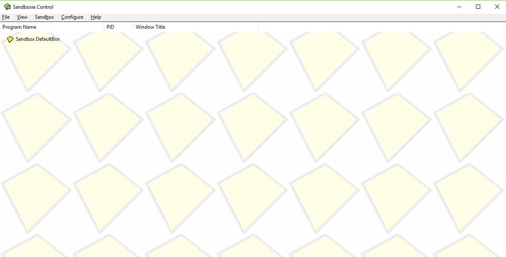
Don't be alarmed, this program is very intuitive. Right click your default sandbox and navigate to “run any program”
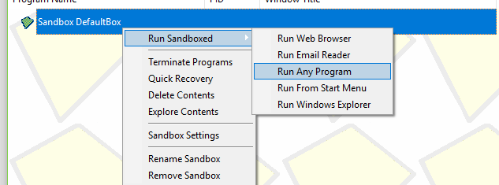
You'll be greeted by this dialog.
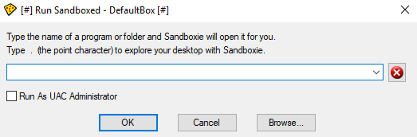
Find your Steam folder outside Sandboxie and copy the directory
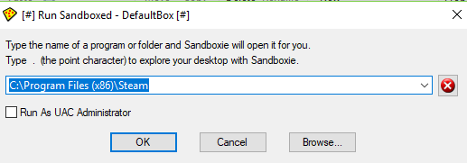
Press "OK". A new sandboxed folder will open. You can tell that the window is sandboxed because it has two hashtags around the name.
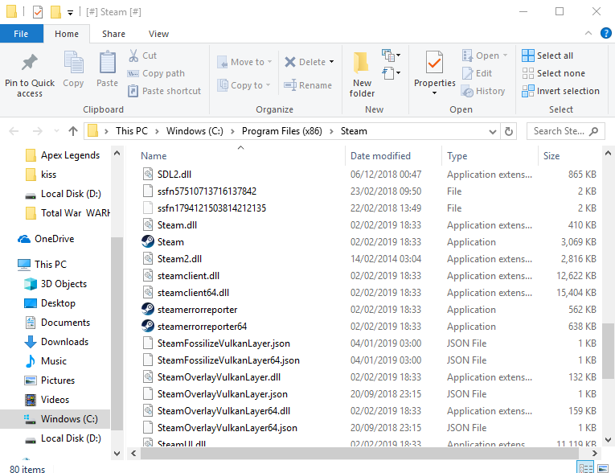
Run Steam from inside this folder to open a sandboxed version of Steam. It might have to update. Once you have got that running, switch your sandboxed Steam version to offline mode.
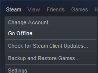
In both Steam versions you now have open, right click on Total War: Warhammer 2 and go to Properties. In the Properties dialog, click on "Set Launch Options" tab and add the following: -multirun
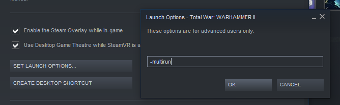
You’re basically good to go! Just launch WH2 with both steam clients. Note that only your host computer, the one outside the sandbox, is going to be able to host games. But your client computer inside the sandbox can join them!
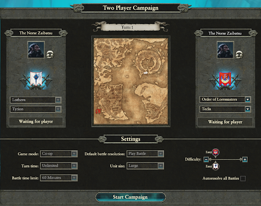
This will also work for custom battles! Happy testing!
Custom Portraits and Portholes
By Marthenil
This guide will walk you through adding portraits and portholes to your custom characters.
Introduction
One of the major issues when making new custom characters has been the lack of working custom portraits. The portrait is the icon you see at the diplomacy screen, when recruiting a character, the skill window and more.
Well, no more. In this relatively simple guide, we'll go through the steps required to add a working portrait to your new custom character.
Things you will need
- selfie.exe by Crux3d
- The XML template (included in the above)
- HxD version 2.0 RC (Optional)
- Notepad++ (Optional)
Setting up and understanding the XML
Extract selfie.exe and the XML template in a directory of your choice. Open up the XML template with Notepad ++ or the text editor of your choice. The template is already configured for a custom vanilla male dreadlord. The settings themselves are pretty straightforward. Let's ignore Distance, Theta, Phi and FOV for now.
Each art_set_id from the campaign_character_arts_table requires its own entry.
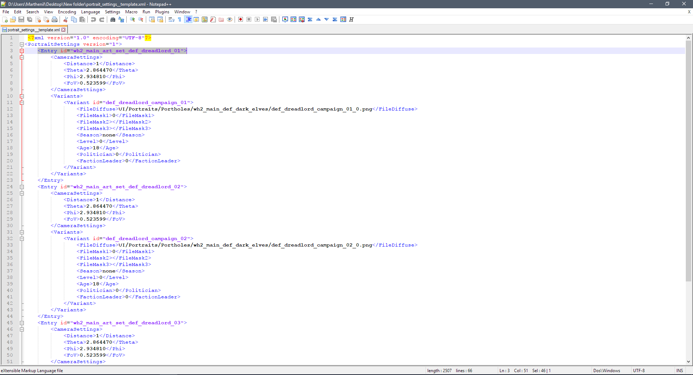
The variant key from the variants table goes into the Variant ID= slot.

The link to your 2D portrait porthole is added in the <FileDiffuse></File> slot.

Filemasks, Season, Level, Age, Politician, and Faction Leader values should be left untouched. Repeat for each campaign variant.
All of your characters in a single mod pack should use a single .xml file. Just keep adding entries.
Distance, Theta, Phi, FoV
These values essentially adjust the viewing angle of the porthole portrait. Unfortunately, there is no easy way to figure out what works best in each specific case. You can try the default values in the XML template, but they will not always work.
In that case, you will have to find a unit that causes a similar model/portrait and copy the values from that. Extract either portrait_settings__.bin in ui/portraits in the data.pack or portrait_setings__2.bin in ui/portraits in data_2.pack. Total War: Warhammer 1 portraits are found in portrait_settings__.bin and Total War: Warhammer 2 portraits are found in portrait_settings__2.bin.
Open the newly exported bin file with HxD. Make sure that the data inspector is on (right hand panel with value translations) by making sure that it is ticked in View -> Toolbars -> Data Inspector. Hit CRTL+F to search for the unit with the portrait settings that you want to use. Notice that there is some text and some gibberish.

The text is the art_set_id of the unit. The first 16 gibberish characters, in groups of 4, are the actual values for Distance, Theta, Phi, and FoV in Float.

Highlight the four first characters (bytes) and look at the data inspector (right panel) under float. This is your Distance value.

The next four is your Theta value.

And, you guessed it, the next four are your Phi Value and the last four are your FOV value.


Finishing Up
After you have successfully added your Distance, Theta, Phi, and FoV values to your XML, save it as portrait_settings_[yourmodname].xml in the directory that you extracted selfie.exe into in the previous steps. Simply drag the file onto selfie.exe and a portrait_settings_[yourmodname].bin should appear in the same folder.
To get your .bin into the game, simply add it to the UI/Portraits/Porholes folder in your mod pack.
Voila, your portaits and portholes are ready!
Warning
- Do not mess with the .bin files or filenames in HXD, other than reading the values for Distance,Theta, Phi and FOV.
- Do not mess with the filename of the custom .bin too much, either.
- Do not mess with the Filemasks, Season, Level, Age, Politician, and Faction Leader values in the XML either.
Failure to comply with the above can lead to severe game crashes, system-wide crashes and even the dreaded Blue Screen of Death.
You have been warned.
Notes about selfie.exe
Decimals in your .xml must use decimal points . and not commas ,, otherwise selfie will not recognise the float values.
Selfie also supports error reporting, if your returned file is not working properly, try running selfie through the command prompt.
Open up a command prompt in the folder you have got selfie and your .xml file; usage is:
selfie.exe <filename>
Closing and Thanks
Major thanks to Crux3d for creating selfie.exe for Total War: Attila. Without his tool it would be close to impossible to figure the values out.
Thanks to both Crynsos and Cataph for their help with figuring some of the stuff out and testing the whole thing!
Custom Campaign Settlement Skins
By Maruka
Before we begin
This guide explains how you can make custom settlement skins for the campaign. This is not officially supported by CA, so the process is a little bit awkward. It might look complicated at first, but that's mostly because I've tried to be as thorough as possible in the explanation. If you have any questions you can ask them in the Map Makers discord channel, which you can find here.
You will need Rusted Pack File Manager for this.
Before we begin, make a folder -somewhere- on your computer called 'campaign', in a folder called 'prefabs'. The location of this folder does not matter, as long as you can find it again.
Preparation in Terry
Create a new map in Terry.
If you'd like your settlement to change with each level, you'll need to create five layers and make each version in one layer, as you can see in the layer panel in the pictures in section 2.
Before we continue, make five layers (name them 01-05 or something along those lines), and save your map.
Now go to the raw terry files in
Total War WARHAMMER II\assembly_kit\raw_data\terrain\tiles\battle\_assembly_kit\(yourmap)
and open the .terry file of the map, and look for the ECFileLayer.
Change <ECFileLayer export="true" bmd_export_type=""/> to ECFileLayer = export="true" bmd_export_type="catchment_01"/>
Do this for all five layers.
Save the file, re-open terry & reopen the map. The layers should now have 'catchment - 01' or equivalent after their name, as you can see in the pictures in section 2.
Making the settlement in Terry
Build your settlement around the origin of the map 0,0,0. Standard CA settlements cover an area of roughly 4x4 units. You can make it larger than that (as we did for the faction capitals), but armies will stand in the settlement skin if you do that.
Each layer will need to contain a copy of the previous levels.
Kislev at level 1:
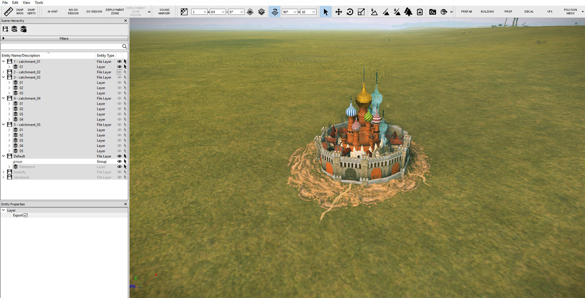
Kislev at level 5
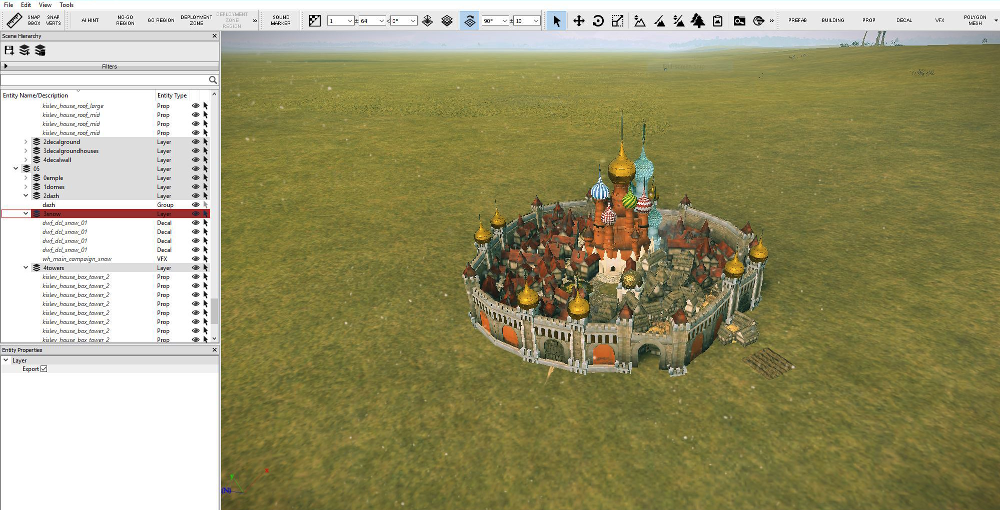
Exporting the prefab
Save, and then export the map.
The description, author, and max players don't matter. You can close Terry now.
Go to the working data folder and find the exported files, the path is:
Total War WARHAMMER II\working_data_terrain\tiles\batle\_assembly_kit\[yourmap]
(replace [yourmap] with the key of your map)
Copy the catchment_01_layer_bmd_data.bin (and 02-05), and paste it into the 'campaign' folder which you made earlier.
Rename catchment_01_layer_bmd_data.bin to [nameofyourprefab].bmd. In the case of Kislev that was gccm_kislev_emp_1.bmd.
That means that we're changing the extension of the file from BIN to BMD. Your computer might ask you if you're sure that you want to change the extension. You are sure, so go ahead and change it.
These are the actual prefabs as they show up ingame.
I'll add more information later if people have questions, for now you can just download GCCM: Unique Faction Capitals and open that in PFM to see what I did to replace the prefabs.
Mod Troubleshooting Guide
By Cataph
This is a troubleshooting guide for mod users in TW: Warhammer 2. The generic pointers should be valid for all recent TW games. - Your neighbourhood Cataph
Managing Mods
So, you have subscribed to mods on the workshop. You now open CA's current mod manager (hereby called George II) and - they don't work. We called it George II cause it's the new launcher. He's new in town, prettier than George, but he's still not good at what he should be doing and forgets to make mods work. We're sorry but George II needs some time.
If mods appear to not work, check the support pages about it. If that doesn't work, which is feasible, the standing recommendation is to rollback to George I (game properties> betas> launcher_release_candidate). George I is faulty as well but slightly more reliable.
[disregard all of the above right now (during P&W dlc release), they're both bugged more than before; this is basically a "shut up and use KMM"]
Even better, just use the community mod manager (hereby called KMM). Long story short, George is unwieldy and has grown responsible for a lot of issues of its own, becoming hated by modders and users alike. Among other things, KMM can launch the game without even bothering George.
One of the things George I cannot do is let you change load order because it only uses the default alphabetical order. KMM and even George II have that function, so sometimes you'd be tempted to change load order manually, right? WRONG. The truth is that compatibility-minded modders already handle load order on their own as far as possible. Manually changing load order may do absolutely nothing or break everything. Some context. There are six main possible categories of folders in a mod pack and this is how they handle load order, either through actual pack name or table name:
- Db: table name.
- Scripts: pack name.
- Startpos: the big bad, pack name.
- Text: table name.
- UI: pack name.
- Variants: pack name.
And that is if the modder doesn't redirect content. KMM can only affect pack name order, so there are things like balance submods (Db overrides) that are still completely in the hands of the modders and intentionally so.
In other words, there are only two possible cases in which you may want to alter load order manually: UI and variants, basically if you want to use specific reskin B.pack in the midst of larger reskin A.pack, in which case you push B on top.
You DON'T WANT to change script or startpos load order, because bad stuff happens. For example, the Community Modding Framework, aka bunch of script hooks, should always be LAST or you'll break things.
In conclusion, you want to follow KMM's instructions, give Steam time to download/remove mods and mostly keep load order in an alphabetical fashion (e.g. order by name and save profile), especially after adding new mods.
Which, incidentally, is this: ! # $ % & ' ( ) + , - ; = @ 0-9 a-z [ ] ^ _ ` { } ~ Where "!" wins over "a".
Common Troubleshooting
In an efficient mod, at least half of the reported issues are down to user error or what is technically called launcher f***-up. We’re going to try and cut that amount down for the greater good.
Most common user mistakes:
- Not reading the mod description. Seriously, it’s there for a reason. The modder took time to write it and it’s downright disrespectful to ignore it. Some mods will also have FAQs or a list of known issues and instructions.
- Ignoring the required items. Ditto. The mod may show you a popup upon subscribing, disregarding that is almost always cue for disaster. This popup is not shown when subbing from a Steam collection, so actually check the mod’s page.
- Mixing up incompatible mods. Too often, some users will make the said mistakes and just subscribe. The most common example is using two startpos mods at the same time, or two overhauls. Don’t do that. If in doubt, read the description again or ask the modder in a comment.
- Not providing details upon reporting an issue. Ok, you did everything right but that ugly bug is still there. That’s fine. The worst thing you could do at this point is comment "mod doesn’t work" because that means absolutely nothing.
Your comment for the modder should include as many as possible of the following:
- Context: when and how the thing happened. E.g. during the interturn after X’s turn, or clicking this button, whether it was Vortex/ME/multiplayer, custom battle or campaign battle.
- Mod list: always tell if you have other mods up and which ones, we see people somehow not mention that they were using a total overhaul, and that’s kind of a huge deal. Do not skip on certain mods because you think they can’t be the culprit. Linking a collection is the handiest method you have.
- Screenshot: always helps, it can at least show the context.
- Save game: if requested, you can find your save game in (example) C:\Users%USER%\AppData\Roaming\The Creative Assembly\Warhammer2\save_games. Remember the mod list, because the modder may not be able to load without it.
And not to do:
- The Hit & Run: if you comment about an issue but then solve it on your own, let the modder know. Sometimes people just report a problem and disappear.
- Ignoring previous comments: the answer to your problem may lie as far as two comments below. If any, look for the FAQs as well.
This list is of course not meant to insult anybody’s intelligence, but you’d be surprised at how many issues and massive wastes of time are due to neglect of these simple rules. Following them is in the user’s interest in order to find a solution sooner, and it will allow the modder more time for improvement rather than wasted in unnecessary bug-hunts.
Most common launcher or game issues (with either George I or George II):
- Failed to download/remove mod. This happens relatively often and if in doubt you should always check in the mod download folder (example: Z:\Steam\steamapps\workshop\content\594570??????) whether that mod was successfully downloaded/removed. Open George/Steam again until it is. The final folder id is the same as the one on the mod’s Steam url and you can sort by date for the most recently poked folder.
- More on this if using KMM: Kaedrin’s manager moves active mod packs back to the data folder. Moreover, when mods update you will likely need to refresh/restart KMM. Most people will be using the Skip Intros mod, and if the game starts without loading it it’s an easy symptom something didn’t reload correctly. If you get that or suddenly crash for no good reason, just refresh/restart KMM first thing!
- Ghost mods. Definitely spooky. You have toggled off that mod, but somehow it turns out it was still being loaded and crashing your game. Or a mod updates and self-enables. Using KMM seems enough to prevent this kind of poltergeist.
- Corrupted download. This is something that has been happening increasingly over time. The mod’s download is botched and it either crashes the game or presents less visible problems (e.g.: this lord’s graphics are wrong/missing). Go again in your content or data folder, delete the mod pack and let George download it again. In theory, you should do this every time a mod that is clearly not supposed to do that crashes on game start, especially when the mod hasn’t been updated recently and nobody has reported such a glaring problem in a while.
- Random crashes: sometimes stuff just breaks and you have to verify your game’s cache: Steam Library>right click on game>Properties>Local Files>Verify yadda yadda. Or check with the game’s support.
- THE DREADED DURTHU BUG: once upon a time, a bug with Durthu’s Lamentation ability rampaged through the workshop, mods being blamed without anybody being able to find a culprit. Eventually, it turned out that it was a vanilla bug that only popped up when certain mods were around and yes, I’m serious. Any similar glitch may be now affectionately dubbed Durthu by modders. The user can do nothing about it but just keep in mind, for giggles, that sometimes this sort of thing happens and this is when modders grow white hair in digging through their innocent mods. Probably karma for the analogous reports CA get for mod-originated bugs.
- Can only do one thing at a time, guv: new bug introduced with the lizard&rat DLC, supposedly to be fixed asap cause it breaks the new launchers on most cases. Basically only one mod is loaded at any time. I don’t have to specify how bad that is. Just use KMM.
Most common KMM issues:
- Doesn’t work: KMM can be installed anywhere, BUT in the game’s stuff. Don’t install in data/ or anywhere close. Hell, plop it in the desktop.
- Doesn’t work cause I’m pirating the game: KMM can smell piracy. Buy the game.
- Freeze on start: try again.
- DLC not found: I don’t know the specifics but 1.8.6 should fix that from .4. If it doesn’t, Detect installs again. Past that, report to Kaedrin with what he needs or rollback to the .2.
APPENDIX: Trimming the Mod List
You should always keep in mind that even if the mod list is technically sound there is always a background mod limit of unknown entity. Long story short, beyond 40 mods you’re potentially flirting with disaster because risk of incompatibility increases and the game may simply throw more random problems and crashes, or just plain balance issues. At 70ish, you surely have something wrong going on somewhere. As a rule of thumb, try not to overload it. No, don’t assemble and publish a bunch of mods, that kind of thing is terribly dangerous and bad for a variety of reasons. We’ll go more in-depth about this another time.
Finding the culprit
The other problem with large mod lists is this: bad, I got a crash; worse, which one of the N mods I have is the culprit?
Generic pointers:
- Pure Text, Variant and UI mods can NEVER crash the game for the user. If they do, it’s a botched download.
- Sort by date either on KMM or George to find the most recent updates, if you didn’t add additional mods those may be responsible.
- If you had the issue during a campaign, do not remove mods that have custom items, units or buildings because you’re just going to crash harder if they are around in the campaign map.
One of the things you should try upon encountering a reproducible crash is to toggle off all mods from the ground up by loading the bare minimum to make that mod work, for example loading only the Unlocker+ and CMF. And up from there, adding one or small groups of mods at a time until you can reproduce the issue. Keep in mind mod requirements while you do this.
It’s patient work but the modder will appreciate it. Remember: a happy modder is a happy user.
APPENDIX: Scripts
Scripts are being increasingly used by mods. Scripters are getting smarter by the day to maintain compatibility, but some mods still require frameworks like CMF or UIMF (we’ll read about them later).
You may encounter symptoms of broken scripts, due to botched downloads, bad compatibility, lack of CMF/UIMF or just plain unforeseen issues because we can just mess stuff up sometimes. Script glitches tend to be quite tricky.
How to recognize broken scripts:
- Rites button on a faction that shouldn’t have that.
- You’re playing Tomb Kings or a modded faction and you see foreign mortuary cult/crafting options.
- You see an unchained Sword of Khaine button right off. (Example below, with broken Books too) 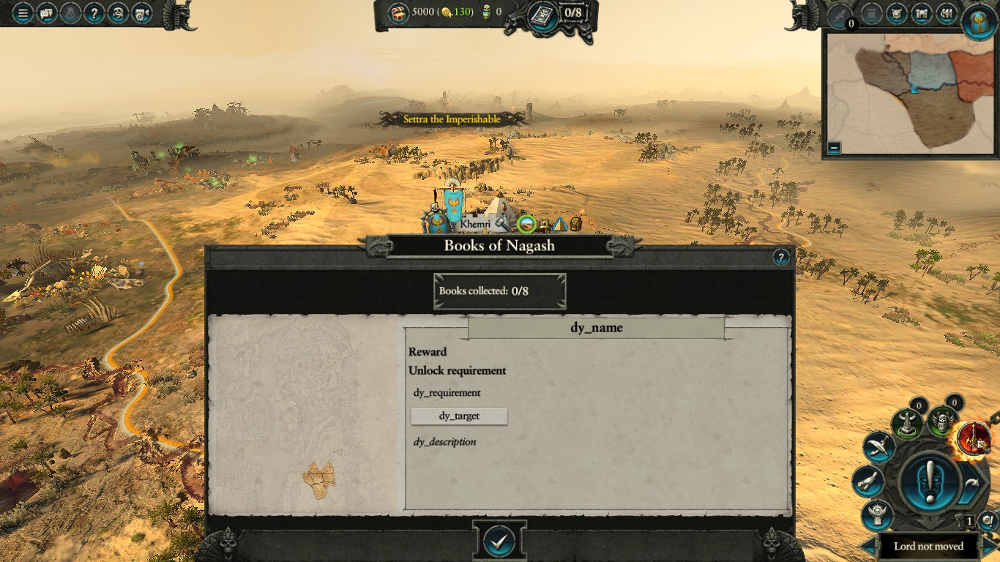.
- Chaos and all Rogue armies may spawn immediately.
- Campaign camera on a fresh campaign starts zoomed-out and doesn’t pan in.
- Chivalry starts at 0.
- Some LLs appear as trapezist Loremasters (e.g. in TEB).
- One of the worst, characters do not gain XP (this may sometimes happen in full vanilla too, requires repair).
What do? In most cases, it’s just a botched download (see Launcher error 3). Other times it may be trickier and require you to start trimming the mod list to find the culprit. When/if you report the issue to modders, remember to provide as much info as humanly possible because finding a script break can turn ugly and complicated. Please also consider using this debugger mod and sending the resulting log, generated in Steam\steamapps\common\Total War WARHAMMER II. Specific scripty mods may come with additional instructions.
APPENDIX: Community Modding Framework (CMF)
CURRENTLY NEEDS MAINTENANCE, AS OF 7 MAY
CMF is basically a community-driven dock where all ships come to do whatever ships do in ports. In other words, it is a required framework that allows high layers of compatibility between a bunch of mods. It used to be pretty mandatory before new opportunities arose, but it’s still required for some mods out there. A bunch of problems are caused by not having CMF, or by a botched download of the latter.
So, what to do:
- If it’s a required mod, do grab it.
- ALWAYS keep CMF right at the bottom of the mod list if you are using KMM. Always.
APPENDIX: UI Modding Framework
Pretty much the same reasoning, this mod was a breakthrough that allowed UI mods via scripting, and there are zero reasons not to have it around just in case one of your mods is actually using it or starts doing it. This framework may be required by scripty mods that do pretty nifty stuff including new UI panels and such.
Tolerant Tables
By Cataph
What's a tolerant table?
A tolerant table is an arbitrarily defined table that will not crash when a referenced key is missing in a certain column. This is particularly relevant when you are overriding new content from another mod and it turned out that you do not need to port two or more tables just to provide background references for those keys. Instead, you need just one table for the value to edit.
It may also be a trap leading to stuff not working in your own mod while also not crashing to desktop.
Registry
Here is a list of such tables and streamline overrides. We encourage you all to report any new findings, preferably in alphabetical order. When reporting new tables, please include the date, because we do not know if or when this kind of behavior can abruptly change CA-side, and older dates can be considered suspicious when you have weird crashes after a patch.
-
ancillary effects junction
- tolerates missing ancillary as of 2nd November 2018
-
building culture variants
- tolerates missing building level and culture (likely sc and faction as well) as of 26th March 2019.
-
building effects junction
- tolerates missing building level, but not effect as of 20th August 2018.
-
building units allowed
- tolerates missing building level as of 20th August 2018.
-
campaign stances factions junctions
- tolerates missing faction as of 9th December 2018.
-
cdir events dilemma/incident/mission option junctions
- tolerates missing value and dilemma, even in the assembly kit, as of 8th December 2018.
-
cdir military generator unit qualities
- tolerates missing unit as of 12th Orctober 2018.
-
effect bonus value ids unit sets
- tolerates missing effect as of 5th Orctober 2018.
-
effect bundles to effects junction
- tolerates missing effect as of 18th August 2018.
-
faction rebellion units junctions
- tolerates missing faction as of 2nd November 2018.
-
frontend faction effects junctions
- tolerates missing effect scope as of 1st January 2019.
-
land units
- tolerates missing missing weapon
- tolerates missing historical+short descr, mount, attribute group as long as the unit is not selected in-game, as of April 2019.
- tolerates missing engine, but the supposed engine will not show up in battle, as of 12th November 2018.
-
land units to unit abilities junction
- tolerates missing land unit as of 20th August 2018.
-
main units
- tolerates missing campaign mount as of 12th Orctober 2018.
- tolerates missing ui_groupings on startup sometimes, and will crash on clicking Custom Battles otherwise.
-
melee weapons
- tolerates missing contact effect phase as of 9th November 2018.
-
projectile bombardments
- tolerates missing projectile type as of 12th November 2018.
-
special ability phase stat effects
- tolerates missing phase as of 9th November 2018.
-
special ability groups to units junction
- tolerates missing unit as of 20th Orctober 2018.
-
technology nodes
- tolerates missing faction as of 1st January 2019.
-
unit set unit attribute junction
- tolerates wrong attribute as of 20th Orctober 2018.
-
unit set to unit junction
- tolerates missing main unit as of 20th August 2018.
-
unit variants
- tolerates missing land unit as of 26th March 2019.
-
units to groupings military permissions
- tolerates missing military group as of 12th December 2018.
-
ui unit bullet point unit overrides
- tolerates wrong unit as of 27th February 2019.
Unit Card Guide
By Cataph
Why
Hello, my name is Cataph and I am a cardoholic.
You made a new unit and you need a new flashy unit card. Simple. No, it ain’t. Unit cards are probably the unit’s component you will be staring at for the majority of the time, even more than the actual variant. Get it wrong and it can be an eyesore for the entire campaign and battle.
A good unit card will:
- blend in with other vanilla pieces
- show the unit’s appearance
- display, possibly, its character and gear and role
What
But first things first.
A unit card is a 60x130 PNG. Don’t make it larger than that or it will automatically be compressed in-game and lose more quality than if you did it yourself.
Its location is ui/units/icons, and it’s a good idea to open the data.pack and extract that folder for future reference. Its name needs to be the same in the card column in the unit_variants table.
In units/info you may find a version with a larger “shredded frame”, this is however only used in loading screens, so ignore that unless you need those for promo or stuff like that.
How
You can use stuff like GIMP or Photoshop to assemble a unit card. Personally I use the latter so I will use its lingo. Making nice cards is not easy. During the transition between Rome2’s and Warhammer’s art style I made truly horrendous cards myself, but with time I noticed things and developed some tricks.
Most CA cards are similar to existing GW artwork, but are still made by a proper artist. I am surely not one, but you’ll want to respect these factors:
- Positioning of the portrayed unit: not too zoomed in, not too far away; varies with races too (notice how Empire cards tend to have a western knee-cut, Dwarfs a full body).
- Lighting: CA cards are generally good luminosity, low contrast but with drawn highlights. This is important, you don’t want your card to be a confused blob.
Before we get to the chase, get this template! Always periodically test with the card frame on top, I used to get immensely pissed off when important details of my card got hidden by the UI. You will never see the entire card in the game, especially on ranged units due to the additional ammo bar. Remember to hide the frame again when you’re done. It’s a PSD file, but should work just fine in GIMP too.
The Three Jedi Ways
[please don't use the sampled pictures without permission]
- THE ARTWORK. You grab a legal* and beautiful artwork around, and tweak it until it fits and shines. Usually the quickest method, but it requires a good sample. Example below, for my Skullreapers, based on this artwork.
{kind=link}
- THE MONTAGE. You grab parts from existing CA cards and glue them together. This may look simple but it’s actually an excellent way to get god-awful cards, because each bloke in a card may have its size, positioning and lighting, and mixing them may not work like you’d think. You don’t want your card to look like the portrait of the Frankenstein’s Monster, or too samey with the neighbouring unit. Working examples: below for my Estalian Lancers, or this infopic by not-a-spoon.
{kind=link}
- THE PHOTOSHOOT. You take things in your hands and start taking screenshots of the unit in-game. This can be a lengthy process, especially for cavalry and ranged units, but can be quite satisfying and produce a faithful portrait of the unit. It’s my favourite and most used method, and the one I’m going to describe. This is also where Positioning and Lighting really come to play.
* Remember that you can't use non-WHFB stuff and if fan-art, you want to check/ask permission.
Guide to the Photoshoot
First off you need to take a good screenshot in which the unit comes with a good pose, possibly no animation glitches and clipping. As said, you need something that will fit in a 60x130, so some photography experience may come in handy.
Here are two examples that can give you an idea of how to crop and photoshop a battle screenshot and what the final result can potentially look like.
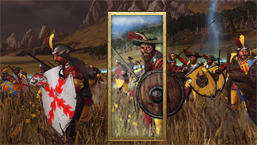
These two blokes are Estalian reskins for Swordsmen and Spearmen. As you can see, the pose needs to fit in a quite longilineal frame, so not all stances will work and also why cavalry is more difficult. You want to show at least part of the body and weaponry. Protip! Use a better camera mod and the >N< key high-detail camera for better screenshots.
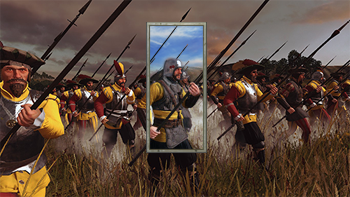
Usually you will want a decent lighting, so no early dawn or cloudy battles. You can still make those work but it’s harder. For these guys I wanted a sunny look instead of the gloomy Empire cards.
The beginning may be as simple as auto-tuning Luminosity and/or Tone to remove weird tints. Afterwards you want to reduce contrast (by a lot, even up to 100!) and probably still increase luminosity (otherwise they are likely going to look quite bleak in-game). Test in custom battle selection until it’s not a grey blob anymore.
Then comes the holistic and complicated part.
Protagonism: the bloke must be instantly distinguishable from the background. Selecting them and making them a separate layer is always a good idea. Afterwards you may further lighten or darken the background stuff. Blurring also works but I usually don’t like it, it can look too fake. Giving it a minimalist oil paint touch can also help.
Background: when you have extra time and experience in your hands, you may want to add smoke, happy clouds, grim clouds, that sort of thing, behind the protagonist’s layer. Can look really cool.
Contours: this is the secret recipe and why we lowered contrast. We said CA cards are artworks, and they have visible dark contours to highlight parts. So we start drawing them (1-2 pixel width) with medium hardness brush or pencil in black and white in a new layer. Usually it looks good when it’s set as Soft Light, probably between 60 and 100% opacity, tweak at will. Contours can make a huge difference between a flat icon and one that can blend in with vanilla ones. Examples (Empire Archers and Teutogen Guard) without and with contour:
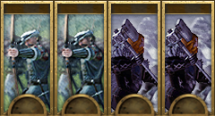
The cards were already heavily-engineered, but you can still notice an improvement. In any case, you will still check how the card looks in custom battle (where it’s extra tiny) and in the following loading screen. Sometimes it will suck so hard that it’s back to the drawing board, but that’s ok.
For a true step by step tutorial I’m gonna need a fresh unit card project. Stay tuned.
Consolation prize, my first and terrible unit card for WH1, versus the same unit in WH2:
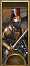
APPENDIX: Character Icons
Characters want their portraits too, of course. Their cards are kept in ui/portraits/units/(designated culture) and are quite simpler to make. You follow the Photoshoot method, fix the tone, lower contrast, increase luminosity, and bam, done. Except that you want to use that faction’s face-to-frame size ratio to make it look better next to the other heroes and lords. For example Empire characters tend to be more zoomed-out, whereas Vampires have a creepier and closer portrait (you can recognize a bloodsucker by their selfies). Making that stuff actually work in campaign is done by following the binning guide.
Building Buildings
By Vandy
So you want to build a building?
Buildings are a great feature in the game, and editing them can allow for a lot of fun new mechanics! New building chains can allows new units, new effects, and new landmarks. The best news of all is that most ideas with building chains are possible.
Vocabulary
I want to first cover some vernacular that we will be using throughout this tutorial. These terms are conceptual but critical to understanding what Creative Assembly is manipulating in their game files.
- Key: A key is an identifier, a definition point in the database.
- Id: An id is similar to a key in that it is an identifier, except it is a randomly generated number used in certain tables of the database.
- Level: A level is each individual building that you can construct in the game. They can be one-off or individual, or they can be upgraded into other buildings. The Empire tier 1 barracks, tier 2 barracks, and the tier 3 barracks are each a level.
- Chain: A chain is much like it sounds - a direct chain of buildings. In the images, below. each vertical set of buildings that can be upgraded is a chain. The tier 1 barracks, the tier 2 barracks, and the tier three barracks are each a level.
- Building Availability Set (BAS): A building availability set is the link between building chains and the faction/culture/subculture that can build them.
- Superchain: A superchain can be seen as a collection of various chains from different races/factions, which can save data space when linking to slot templates (the only way to link buildings to locations). For instance, all settled factions except for the Wood Elves (due to their unique building style) have their standard infantry building linked to the
wh2_main_sch_military1_barrackssuperchain, which is available at all settlements. It consolidates the entirety of your buildings into one package. - Set: A set is more or less a visual effect that conveys a category. As you'll see in the images below, "Military Recruitment" and "Infrastructure" are examples of buildings sets, which lump together various different building chains into a specific group.
- Slot Template: The database (db) classification of various locations, and the union between buildings and regions. Slot templates allow you to lock buildings to specific locations (for example, landmarks). However, not every settlement has a unique slot template. For instance, Altdorf has the slot templates
wh_main_special_altdorf_primaryandwh_main_special_altdorf_secondary, while Bibali has the basic "wh_main_human_minor_primary_coast" slot template. As we see in an unmodded game, Altdorf has unique buildings in, while Bilbali does not, so we can infer that Creative Assembly had no need to add in a custom slot template for the latter.
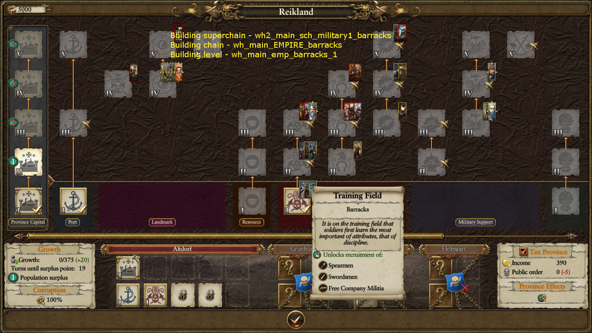 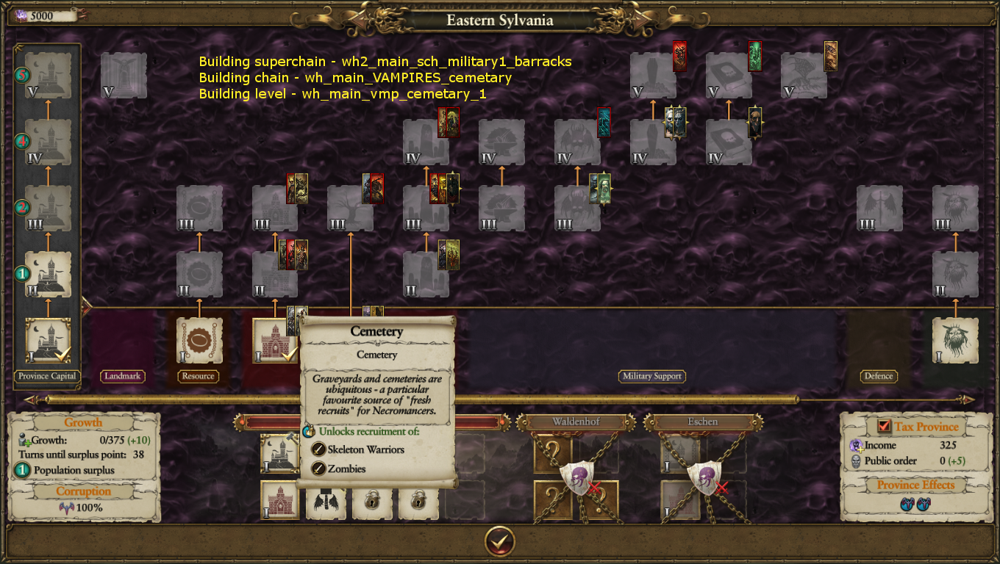
Getting Started
First off, you'll want to get your idea(s) in order. You want to make a building, but what will this building do? Where can it be built? Is this building locked to certain cultures/factions? How many levels will it have? Having an answer to each of these questions will help you carry on through the tutorial.
Now, you'll want to open up Rusted Pack File Manager (RPFM) and the Assembly Kit. RPFM is where you'll be peforming all of your work - the Assembly Kit is more of less going to be used as a glorified search engine.
Open up RPFM, go up to Packfile -> New Packfile. Right click this new packfile (called unknown.pack) -> Add -> Add from Packfile. The "Select Packfile" window will open, go to wherever you installed Warhammer 2 -> click on the data folder -> and then find and select the data.pack to open.
On the right hand side, the "Add from Packfile" Mode will open, and you'll see a file hierarchy of the different folders and tables within the pack. Look for the folder marked "db" and expand it. There will be a list of subfolders. Scroll through, expand the following subfolders and add the following tables from the data.pack:
- building_chains_availability_sets_tables
- building_chains_tables
- building_culture_variants_tables
- building_effects_junctions_tables
- building_instances_tables
- building_levels_tables
- building_set_to_building_junctions_tables
- building_superchains_tables
- building_units_allowed_tables (Only needed if you will be linking units to the building)
- building_upgrades_junction_tables (Only needed if you will have more than one level)
- slot_template_to_building_superchain_junctions_tables
Once you have added each table, click the "Exit 'Add from Packfile' Mode" at the top center of the screen.
You will also have to add a few files for the localisation of the building mod, so let's do that now. As before, right click the packfile and add from packfile, this time grabbing the local_en.pack to open. Scroll through and add the following tables from local_en.pack:
- building_chains__.loc
- building_culture_variants__.loc
- building_short_descrptions_texts__.loc
That's it for importing! In the future, you may need more tables such as effects if you're going in to that, however this tutorial will not be covering that action.
Inputting Data
The very first thing that I recommend is to go into the building_superchains table and delete all rows. If you have not changed around any hotkeys (which you can do by the way by going to Packfile -> Preferences), you can delete all rows in the table by clicking an entry in the table -> CTRL+A to select all in the table -> DELETE.
Let's add in a new row by pressing CTRL+SHIFT+A. From here, we can add in your new key. It can be named whatever you want, but we advise that you rename it to something that's not already a vanilla key or looks like it could be a vanilla key. You don't want to assume vanilla keys, as it will make the game freak out. Depending on what I'm making, I either prefix with vandy_ or prussian_, but you could go with whatever works for you. Just don't assume vanilla keys.
I recommend writing an easy key, one that you can copy over through various tables and use interchangeable. If I were to make a new horde building for the Empire, I would probably call it "vandy_empire_horde_main" if it were the primary building, or "vandy_empire_horde_barracks" if it were the barracks. You could also easily do "empire_main" and "empire_barracks", but keeping a unique prefex on all of your work helps with organization.
After that, go the slot_template_to_building_superchains_junctions. Don't delete anything just yet! Here is where we actually want to link the building we are making to a location or locations. There are three columns we want to worry about: building_superchains, id, and slot_templates.
Note: If the building or building chain is not in here, then it will not show up in any settlements.
If you are making this into a horde building, you would assign it to the horde_primary slot for the main building, or horde_secondary for any others.
If you are making this into a settled building, you would have to have to input your building to all the different slot_templates. The four main slot_templates are
- wh_main_human_major_primary (a province capital's main building)
- wh_main_human_major_secondary (any other building in a province capital)
- wh_main_human_minor_primary (a regular settlement's main building)
- wh_main_human_minor_secondary (any other building in a regular settlement)
Remember, there are also unique slot_templates for all different resources, all unique locations, several new resources made for Warhammer 2, and some older and antiquated slot_templates such as "wh_main_dwarf_orc", used for the Regional Occupation system in Warhammer 1 that is currently unused in Warhammer 2.
I'll let you in on a little secret - typing out all the slot_templates is unnessary and tedious. Open up the Assembly Kit real quick, go into the slot_template_to_building_superchains_junctions table and open up the Search function. Change the column filter to "building_superchain" and type in "wh2_main_sch_military1_barracks." This will only show the junctions between the barracks superchain and all slot templates that the barracks superchain is available in. Thus, this superchain includes all beginner military superchains for each race - such as the Cemetary for the Vampire Counts. Grab the entire Slot Templates column from the Assembly Kit and paste it into the corresponding table in your mod back in RPFM. Secondly, take your building_superchain key and paste it in each entry of the column.
One last step - we need to assign unique id numbers to each of these entries. Now, Creative Assembly used random generated id numbers for their entries, and there are hundreds of thousands of entries within these game files. Thus, you probably can't use 1 or 10 or 100 for any of these entries. I recommend being safe and using 8 digit (1906015) id numbers for each superchain entry.
If you did this right, this action should now apply that superchain's availability to each and every settlement on the map. You'll have to repeat this step for each new building chain.
Note: There is only the need for one superchain for a link of buildings you can upgrade, but you will need one superchain for each separate link of buildings.
Building The Building
Now that the boring part is done, we can move into the nitty-gritty! Next step is in building_chains_tables. Most of this table does not actually do much, yet we still need it. Again, CTRL+A to select all, then DELETE to delete all previous entries in this table. There are 9 coluymns in this table but we are only going to be worried about 3 of them: key, chain category, and building superchain. In the first column, "key", input a unique key for your building chain. I recommend using the same key as the superchain, but you do not have to! Skip over to chain category. For this column, you're either going to enter in "military" or "money" as an entry. Ask yourself: Is this building or building chain that I am making going to be used for recruitment or combat capabilities? If so, enter in "military", otherwise input "money". Lastly, enter in your building_superchain key in the building superchain column. Voila, another table completed!
Next up, you want to make a new_building_instances key. This table determines how many of a certain building we can have in a settlement. Delete all those previous entries, make a new row. You're going to want to input your building_chain key in the first column. For the second column, "1" is the most common value, but if you wanted to add in a set of, say, three buildings, and allow the player to only choose two of them at once, you would enter "2". Keep in mind that this is only for a single settlement, not an entire province.
After this we will click on over into the building_levels_tables, which will be each individual link in the building chain. Much as a Cemeetary upgrades into a Graveyard, you can have your building upgrade into another building.
Note: If your building only has one level, like a landmark, you still need this table.
For the "level_name", type in your building_chain name with the sufix "_1", and increase it for each further step in the chain. The "chain" column should have you put in your unique building_chain key. For "level", enter 0 for the first level, then increase by one as you go up the chain. Every building chain MUST start with a building at level 0, this does not mean that you can build your building when the settlement is a ruin! From here, a lot of stuff is just details - how many turns does your building take to build, how much does it cost to construct, does your building have an upkeep cost (which is a negative value taken every turn from your treasury), and a whole string of things that are no longer used for this game.
After upkeep, scroll to "can_convert" and put a check in each of your building entries. Without this, the buildings cannot be destroyed. Insert the building_instance_key that you made earlier into the "building_instance_key" column. Scroll over again to the "can_be_damaged" and put a check in each of your building entries, so that your building can be damaged after bring razed or sacked.
Note: The Development Point Cost column is a modifier to make the building cost Population Surplus. This can be used for any building, but it is seen in the game through main settlement and horde buildings only.
We are not done yet in here! The next column, Primary Slot Building Building Building Level Requirement, determines what level the main building needs to be at to construct this building. If you input "1", then this building can be constructed at a Tier 1 settlement. Conversly, if you input a "3", then this building can only be constrcuted at a Tier 3 settlement. Each separate level needs to have a different primary slot requirement! Lastly, check off each entry in the Visible in UI column and head on over to building_culture_variants_tables.
This is where you build what your building looks like - its name, its icon, its description. You can use this table to change how it looks between cultures/factions as well. For now, however, delete all previous entries like usual, add a new row, and input your building chain entries in the Building column, so i.e. "vandy_empire_barracks_1" to "vandy_empire_barracks_3". Next, enter the culture, subculture, or faction key of the group you're making this for in each entry - use the Assembly Kit to search for that! For instance, my building was for the Empire, so I entered "wh_main_sc_emp_empire". The Description column is not used, just put in "wh_main_PLACEHOLDER". For the Artpiece column, enter either the name of the vanilla icon or import your own. The UI location is ui/buildings/icons/%.png. At the end, check off for each entry the display_tooltip.
Note: This table needs either a "faction" entry or a "culture" entry. You can use both, but it needs at least one to function.
Only a few more db tables to go!
From here, we have to make this building do stuff, link it to who can built it, and edit where it shows up in the buildings panel, finishing off with flavor text for all of it in game.
Go to building_chain_availability_sets_tables. (You should know by now to clear out these existing entries and making new rows for your own entries by now, so I'll stop saying it) This table is used to link the bulding to who can build it. The first column we input, you guessed it, the building_instances key, so i.e. "vandy_main_empire_barracks". Continuing with the example, I am making my buildings for the Empire, so I enter "wh_main_bas_emp" for the second column. If your building is not supposed to be bult by the Empire, the Assembly Kit will help you find the availability set you want to use.
Note: If you wanted to, you can make your own custom BAS, but it is not always required unless you're making a new culture or subculture. if you tie your building to an existing BAS - say, wh_main_bas_emp but then only give a culture variant to the Midenheim faction, then only Middenheim will be able to build it. This is very useful for excluding certain factions from buildings and much more flexible (and simpler) than using a custom BAS.
Let's now open up building_set_to_building_junctions_tables. This is where the building will show up in the Building Panel in-game, whether it's in "Military Recruitment", "Military Support", "Infrastructure", or "Defense." Building sets are culture specific, so once more let's open up the Assembly Kit and look in this table for what building set you need. I entered my building in "wh_main_set_empire_military_support", so it will show up in-game under the Military Support category in the Building Panel. Find your key and enter in the new building. I recommend entering the building_instances key instead of the building_levels.
Whoo-hoo!
You now have a useless icon that costs money
Let's give it something to do - go into the building_effects_junctions tables, and let's add in an effect. My building for this example is going to add +10 Public Order for this tutorial (even though we've been running with a barracks example... -pw), so I will go back to the Assembly Kit and search for a public order effect in the vanilla buildings and see how they add it.
Looks like I have to add my building in here, then use the effect key "wh_main_effect_public_order_base" under the Effect column, link "province_to_province_own" in the Effect Scope column, and add in my own value. I'm giving it +10 Public Order, so I'll enter "10" in for the value. The Value Damaged and the Value Destroyed columns convey the amount of effect to give when the building is damaged and when the building is ruined, respectively.
Localisation, or fleshing out what the heck you made
Localisation files can be annoying and fickle, so let's get through this as smoothly as we can. Open the building_culture_variants.loc and make sure you add one new row for each "level" you made after you cleared out the previous entries.
The format needs to be as follows: "building_culture_variants_name_[name_of_your_building_1][culture][subculture][faction]"
Whatever culture or subculture or faction you linked in the culture_variants table NEEDS to be formatted properly here or it will not pop up.
My entry would look like this: "building_culture_variants_name_vandy_main_test_building_1wh_main_sc_emp_empire"
In the localised string, I input "Test Building." This will be the name of each individual level. In building_short_description_texts.loc, you ONLY ned the name of the building, and the description you want to pop underneath the name. I input "building_short_description_texts_short_description_vandy_main_test_building_1", with a localised string that says "This is a test building!"
Lastly, in building_chains.loc we can enter the chain name that pops up under the name of the building. I input: "building_chains_chain_tooltip_vandy_main_test_building_1" with the localised string "Testing!" for the entry.
You Did it!
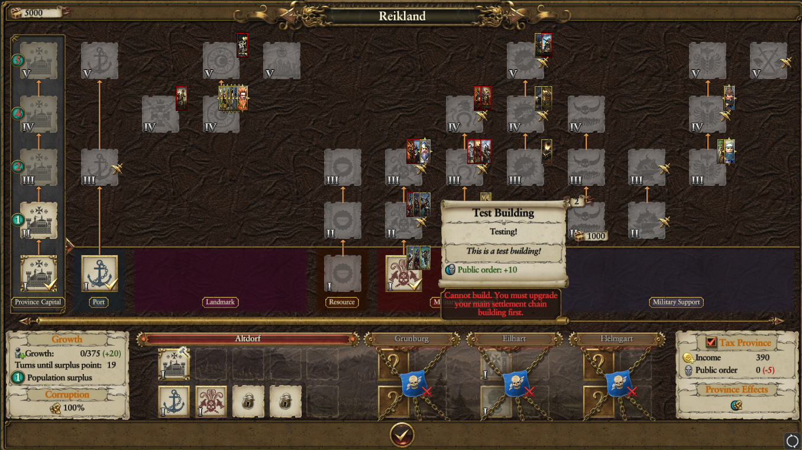
Your first building or building chain is completed! Go on, pat yourself on the back. There are plenty of creative options with buildings - you can introduce penalties and consequences to new building chains, or create interesting links of, say, two different buildings that can both get to level 3, but you can only get one to level 4 or 5. It is possible to link units to buildings, either vanilla or custom; link new technologies, and even create band new landmarks.
Troubleshooting
Something happened and now you are getting a crash.That happens and it's okay, we can fix it. There's a couple things that you can check off the list to figure out where it's coming from.
- Typos in the .loc files, or the absence of them, will not cause a crash. It just means that the text that you wrote will not show up.
- Typos in the data/tables will 100% cause a crash. If you reference a non-existent key in one of the above tables, like linking a misspelled superchain to the wh_main_human_major_secondary slot template, the game will crash on start-up. This is because when the game is loading up the data, it cannot establish or identify that non-existent key in the ways it knows how and cannot continue.
- Missing information can sometimes cause issues, for example, if you did not link a culture_variant for your levels.
- Empty rows! This is a fun one that can also cause unintended results. Make sure you go through each table and delete any rows that you do not need.
- Did you assume a vanilla key would work before verifying it exists? The Total War Franchise was developed and coded by people, and if we know anything about people, it's that consistency is more an ideal than a standard at times. Naming schemes, formats, and even data entries themselves have been changed and removed from patch to patch. Go back and verify that effect scope from the Assembly kit, it could be the issue.
- Please rename your tables and your mod. There is no reason to not rename your tables and your mod, and problems can ensue otherwise. Oh, and please make sure you are using unique id's for these tables! If you use vanilla ones/id's from other mods, then you're ensuring incompatibility.
Thanks for reading!
Localisation
By Vandy
Hello and welcome! Look no further for a simple tutorial to create custom text in Total War!
PLEASE NOTE: This tutorial assume basic knowledge of PackFiles, the modding tools available, and other basic nomenclature regarding modding.
Firstly, yes - obviously, custom text is possible, otherwise I wouldn’t have typed these words into this internet. Text in-game is known as localisation, and consists of basically all text you see - from the Help Pages, to building names, to mission text, to subtitles in quest battles - all of these are localisable text, meaning we can edit or add text.
There are two ways to edit and add text, and I'll show them both in turn. While the PackFile editing method is probably the one most will use - and the one I recommend - we'll go over both. Assembly Kit Localisation is good to know just for visualization, and it will help me teach your how to use it in the PackFile, so please read on!
AK Localisation
Making new localisation in the Assembly Kit is remarkably simple. All you have to do is find the columns with the localisation you want to add, fill in the text, apply your changes. After using Export -> Export Changes to Binary, close DaVE and open up BoB. Within BoB, use the Retail Pack option, and boom, your localisation files are done!
One BIG thing to note here: just like exporting db in the Assembly Kit, it has all records within that .loc file, not just the ones you've edited. This is real bad for compatibility, so you should know how to directly edit the .loc file. Read on!
WARHAMMER II USERS: At the date of this publication (July 3, 2019), the Localisation feature of the retail AK for WH2 is disabled. To enable it (which is really easy), check out the bottom section, way down below..
PackFile Localisation
You can either copy over a .loc file, thieved from either a CA retail pack or something exported from AK like above, or create a new one from scratch. The former can be done either with the Add -> Add from Packfile action in RPFM, or just "Add File", whereas created a new one can be done with the Create -> Create Loc action. Make sure the path for the .loc file is in .pack/text/db/.
However you do it, you'll get something like the following picture, with three columns: Key, Text, and It Doesn't Really Matter, Just Set It To True.
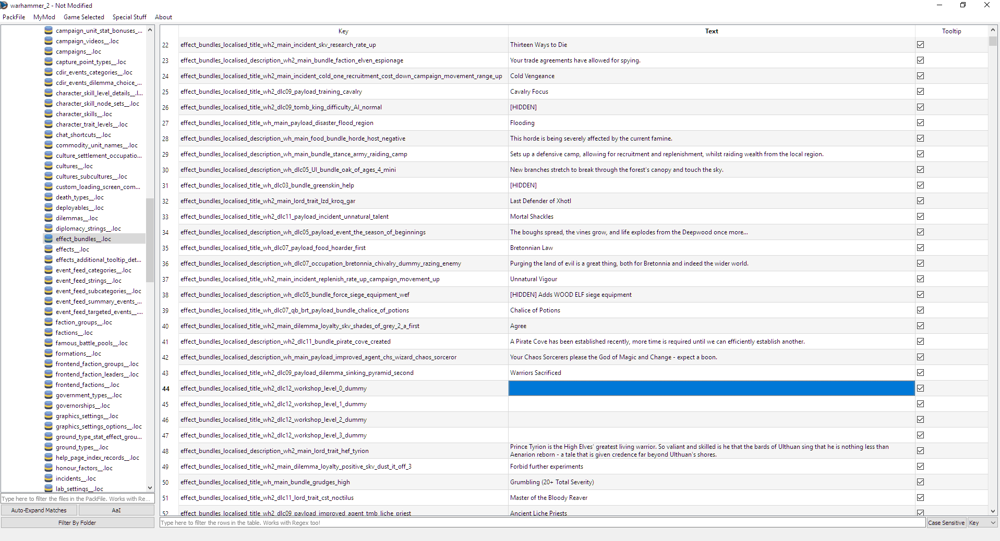
With some understanding of how AK Localisation works, this is rather simple. First thing's first - the Text column is the text that shows up in-game. That's all I'm gonna say about it for now, though I'll go over some extra things we can do with localisation later on.
The Key is the important part. It is composed of three separate parts - the table, the column within the table, and the key of the db object.
tablename_columname_key
We can see in the image above, all of them start with effect_bundles, which is a reference to the db table.
After that, all of them have either localised_text or localised_description. These are the two columns we can see in the Assembly Kit for the effect_bundles table. Some tables have only one localisable field, some have many - just check the Assembly Kit or existing .loc files for what those are and what they're used for.
The last one is the db key. For example, if we look up wh_main_payload_disaster_flood_region in the effect_bundles table in the Assembly Kit, we can see it's an actual key used in that table:
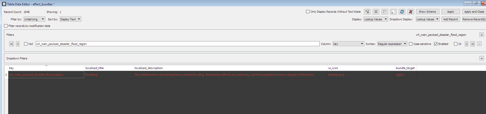
For the case of the flood_region effect bundle, we can see it broken down into the three parts.
First, there's the table name: effect_bundles_
Then, there's the column name: localised_text_
Then, the key: wh_main_payload_disaster_flood_region
The three of those link up to make effect_bundles_localised_text_wh_main_payload_disaster_flood_region, which links to the text "Flooding" within the effect_bundles__.loc file!
That's all there really is to localisation! You can add new rows in a .loc file, set the Key properly and the Text will show up.
When doing PackFile Localisation, you need to keep a handful of things in mind:
- The name of your .loc file needs to be different than the vanilla .loc file, and a higher alphanumerical priority. If the vanilla .loc file is called
effect_bundles__.loc, call yours something like!mod_name_effect_bundles.loc. You can really call it whatever, like!yay_I_made_a_mod.loc. - You can divide the .loc files up by table, like they are in vanilla - or you can have them all in one big .loc file. It's up to you!
- The .loc files need to be in the folder structure
./pack/text/db.
Excelling at Localisation
If you have Excel, or another data program, it's incredibly easy to automate localisation. I used to type every single loc key, until one day I decided to start concatenating, and it's reduced time spent tremendously. Continuing with the same example above, I would set up a new worksheet with the following:
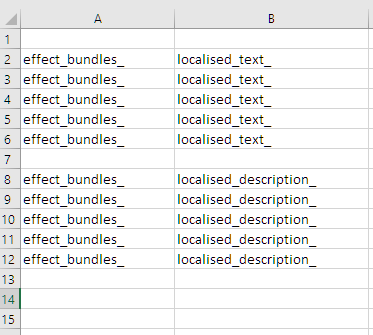
Column A, the table key, Column B the db column key. Column C will be filled out with db keys (normally, copied from RPFM or the AK).
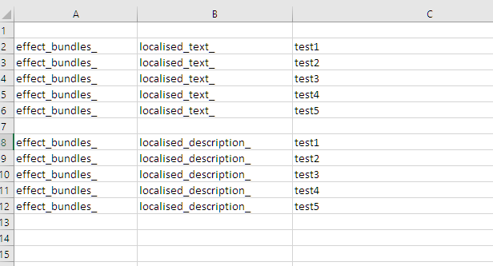
In Column D, I set up a concatenation formula to combine columns A, B, and C.
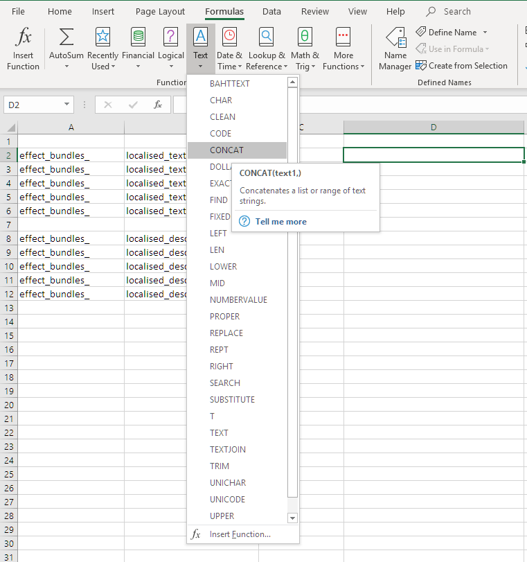
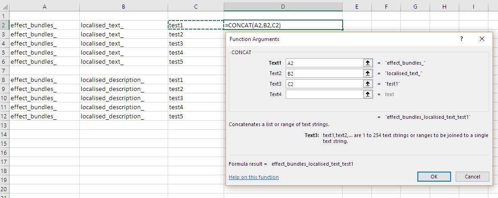
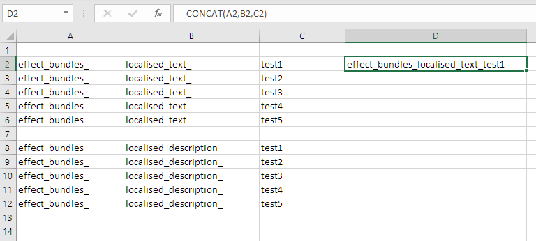
At that point, copy the D2 function, and paste it for the rest of the rows.
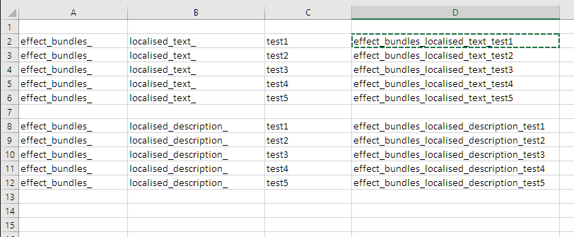
And that's it. Copy the stuff you want to export, and paste it into a .loc file within RPFM.
Common Pitfalls
It doesn't work! Here are some common mistakes with localisation:
- Misnomer: Double, triple, and double check your spelling.
- Underscore: Make sure every bit of a loc key is split by an underscore. There should be one between table and column, and another between column and key.
- The Final Frontier: Make sure there are no spaces in the loc key.
- Combo keys: common case localizing building_culture_variants, you have to include any culture/subculture/faction key you have in the building's line, in that order, whenever present. Analogous to how UITR work (below).
- Who Knows?: Sometimes it just doesn't work. If nothing else, try remaking it from scratch.
Localisation Options
There are a couple of cool things we can put in the localised text, such as colored text, or images. I'll go over the most common ones here:
VALUE
You'll see in the effects table %+n. This is a wildcard that replaces itself with whatever the value in the value column is, when that effect is linked to an effect bundle or building or skill or what-have-you. So if the effect's text is something like "This increases something by %+n", and the value in effect_bundle_to_effects is 5, it'll read "This increases something by 5".
COLOURS
If you'd like to make coloured text, you can wrap text with [[col:col_key]] %text% [[/col]]. You can find the keys in the table ui_colours. I don't believe it's possible to setup new colours, but I haven't tried.
I am told there is also used, somewhere, the following format: [[rgba:91:30:0:255]] text [[/rgba:91:30:0:255]], for red green blue alpha. If you find this works, please confirm with me!
TAGGED IMAGES
You can make little cute images within a localised text. For exmaple, there are icons often in help pages before keywords. All you have to do is use the following tags: [[img:img_key]][[/img]]. You can find the keys in the table ui_tagged_images. You can make new images!
PARAGRAPHS
You can make a line break with \n. Use it sparingly, it won't work in most locations, but works fine for things like missions, events, loading screen quotes. I recommend checking vanilla application before using it.
There is also a CA shorthand for creaking line breaks on UI components, ||. I'm not perfectly familiar with when this should or shouldn't be used, but I've seen it for things such as: occupation options, frontend text, loading screen quotes, and most commonly, UI localisations. Test as you wish to see it work or not, and check with vanilla.
UI TEXT REPLACEMENTS
UI Text Replacements (uitr, henceforth) are awesome lil' buggers to help you from typing the same thing over and over again. You can refer to a uitr with the tag {{tr:tr_key}}. You can find keys with the table ui_text_replacements. New ones are doable! Just make a new key in the table, and make a new row in a .loc file.
One great application is to prevent typing the same thing over and over again, and instead refer to the same text replacement. You can define one and refer to it within various different localised fields.
A greater application is to allow the same text to show differently between different factions. For instance, the text for money shows up as 'Treasury' for most factions, and 'Dark Magic' for Vampire Counts, in WH2.
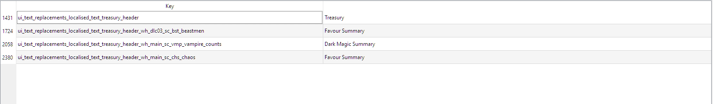
There's an extra suffix to some uitr loc keys, which can refer to subcultures. In this above example, the treasury header text changes for Beastmen/Chaos/Vampire Counts, and it's read automatically. All you have to do is add a new row in the db file and the .loc file!
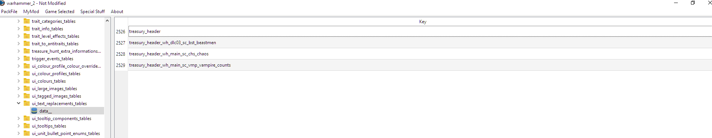
Addendum: Warhammer II Assembly Kit Localisation
First things first, get this file. Take it, and move it to: steam/steamapps/common/Total War WARHAMMER II/assembly_kit/raw_data/db, overwrite the existing file.
That will enable localisation. There's a small and slightly annoying thing that must be done to get around it. When you edit a localisable field, you'll get a small little exclamation to the left of the text like this:

If that exclamation is there, any changes won't be exported. To filter out all unchanged text, press the checkbox marked Only Display Records Without Text State in the top right.
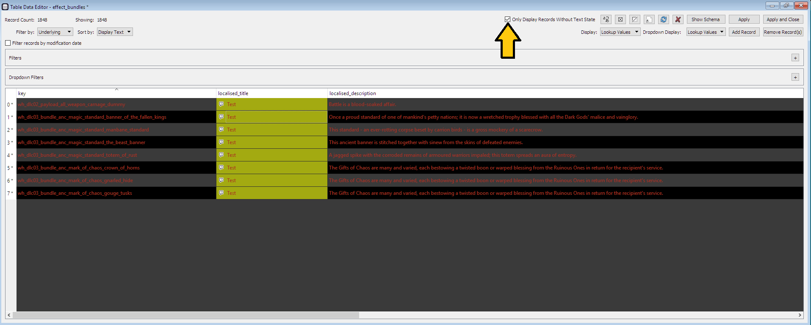
Now that we have only our edited cells, highlight all of them - ONLY the localisation spots - and press the For Editing/Approval button on the top right, which is right next to the checkbox we just used.
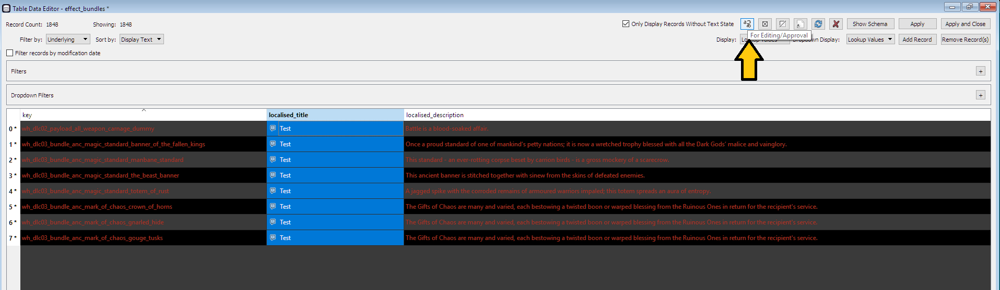
After doing so, they should vanish from the filter for Only Display Records Without Text State, and will export properly! And that's all!
Summary
Get out there and get localising. I don't have much more to say here.
Creating Custom Units
By Cryswar
Preface & Tools
Preface
The basics of creating new units are fairly easy and fast, but alien for someone just starting modding. While there are already a few unit creation guides out there (including Sebidee's), there are often issues with them being out of date or (imo) laid out confusingly, and I have a few other guides I'd like to do that build off of this, custom lords and skills and such, so I figured I'd start out the series with a simple unit creation guide.
Tools
You will only really NEED one tool - Rusted Pack File Manager, hereafter referred to as RPFM. It's basically a better and actively updated version of the classic Pack File Manager (PFM) with a lot of useful tools like dependency checkers and MyMod functionality that I mostly won't go heavily into here.
The one thing I will stress is to get the Dependency Checker going ASAP; ctrl+P to open Preferences, check "Enable dependency checker for DB tables", and (if you didn't do this on initial startup) make sure that your Total War Warhammer game is correctly linked in Packfile->Preferences as well as that going to Game Selected and ensuring it's set to Warhammer 2. Dependency manager will catch most simple errors for you.
I also suggest having two instances of RPFM open at once when modding, one opening the Data file to compare with vanilla tables and one for your mod. I usually keep a notepad file open as well with just the unit key so I can copy-paste it easily.
As one final note - you don't HAVE to follow the exact order I did this guide in. Many things can be done in any order, though you will often run into red dependencies temporarily if you do stuff in a weird order. I tried to lay everything out in the way I found most natural and easy to do, but if you find you REALLY like doing main_units before land_units... suit yaself.
Cheat Sheet
While I will go down the list and explain what to do with each, I'm going to share my shortform list of tables for unit creation; once you get comfortable with unit modding you'll generally only need this rather than the full guide.
Basic Tables
- land units
- main units
- ui_unit_bullet_point_overrides
- unit_description_short_texts
- unit_set_to_unit_junctions
- units_to_groupings_military_permissions
Visual Stuff
- variants
- unit_variants
- variantmeshdefinitions
- unit icon
Utility Tables
- units_custom_battle_permissions
- cdir_military_generator_unit_qualities
- culture_to_battle_animation
- building_units_allowed
Localisation
- land_units.loc
- unit_description_short_texts.loc
Initial Setup and Naming Conventions
First things first, we're going to create a new packfile (Ctrl-N). This gives us a blank pack with no tables or name. If this is your first mod, I would suggest saving it now, NOT in the data folder, with a simple name. There are a lot of different naming conventions out there; some people like prefacing their stuff with their username, some just name everything after the mod's name, whatever. Ideally you do want it to be unique so it doesn't run into incompatibility issues (don't name it mod.pack lmao).
Note that you can muck with mod order by adding characters to the start, it's common to see packs with ! or !!!!! at the start to ensure they load first. I would not recommend doing this unless you know exactly what you're doing, it's more of a tool for startpos mods and other major overhauls that really want to be loaded first; for most purposes something basic will do just fine.
While you may not find this works for you, I personally use the same key as much as possible throughout unit creation - if I name a land unit crys_skinwolves, you had damn well better believe the unit variant will be named crys_skinwolves, the main unit will be called that, etc etc. I just find it helps keep things simple, especially when you get into creating agents (lords/heroes) and start needing to attach campaign art and skill sets and all that jazz, and it's just REALLY nice to just have to copy-paste "chs_styrbjorn" instead of remembering 20 different things.
Adding Tables
There are two ways to go about adding tables to your mod, both perfectly valid.
- Right clicking on the packfile->add->add from packfile->navigate to Steam\steamapps\common\Total War WARHAMMER II\data->open data.pack->open the DB folder->doubleclick on the tables you want to add, then delete all entries in the table and rename it
- Right clicking on the packfile->create->create DB and fill it out
For simple DB editing purposes, the latter is infinitely faster, easier, and simpler, with the added benefit of letting you name the table and not having to clean it out. However, it is good to know the former because for some purposes, like variants, you will need to do it that way.
If you do add a db table the first way for whatever reason, an easy way to clean it out is to use Special Stuff->Warhammer 2->Optimize Packfile.
land_units
For now, let's just create a new table. The bottom box lets you filter results; type in "land_units", then open the dropdown list - there's only 4 tables there; "land_units" is the one you care about. Add it and name it whatever you like, the game doesn't care as long as it doesn't clash with vanilla table names or other mod tables. Now rightclick and select "add row", and... oh jesus lord what the hell are all these things?!
Fret not, you don't actually have to know all of them! This is where having a second window of RPFM open in the data version of the table is useful. Just copy the row from the closest vanilla unit to get us started. At the bottom right is a dropdown menu to change what to filter by; change to "key" and then type in the unit name you want to copy from, which may take a few tries depending on CA's weird naming conventions. In general, only type in 1 word, like "champions" instead of messing around trying to figure out how CA decided to name Marauder Champions with Great Weapons (wh_dlc08_nor_inf_marauder_champions_1 as it happens).
Some important notes:
- Key is incredibly important - it should be unique and not shared with any mod or vanilla unit. I recommend NOT using CA conventions, keep it simple; if you're making Chaos Fimir then chs_fimir is a decent start, though for compatibility you may want to add more text, say crys_chs_fimir. Whatever you use, save it now and keep it handy somewhere else, you'll be copy-pasting that key a lot in this guide.
- When in doubt, just use the entry from the closest vanilla unit. Good rule of thumb. You don't have to know what the heck dr2_hydra is, but if the vanilla war hydra uses it as an animation, your budget hydra probably should too.
- "Man Entity" references the battle_entities table, which controls unit speed, mass, resistance to knockback, etc. Many vanilla entities are shared between many units; if you want to mess around I'd suggest making custom entities.
- Primary Melee/Missile weapons are fairly self explanatory in what they do; making new melee weapons is almost trivially easy, new missile weapons take some extra tables for projectile stuff but isn't that hard either.
- New attribute Groups have to be defined in unit_attribute_groups and attached to actual attributes in unit_attributes_to_groups.
- Note that you have to either reference vanilla armor/shield values or define new ones in their respective tables - you can't just fill in wh2_main_leather_88 and expect it to work. Damage mod [whatever] is the unit's resistance to that type of damage. Flame can be negative, the rest can't as far as I can tell.
main_units
Similar to how you added the land_units table, do the same for main_units and copy the closest vanilla unit over.
As a general rule of thumb, the Main Units table is more focused on out of battle stuff - unit costs, caps in campaign or multiplayer, additional building requirements, etc.
- Change the "unit" field to your personal key, ideally the same one you used for your land unit.
- Additional Building Requirement is used if you want the player to have a secondary building to make the unit, and is left blank otherwise. References the building_levels table if needed.
- Campaign Cap is -1 for most units, but can be limited as desired if you only want a faction to be able to make, say, 6 Steam Tanks total
- Land Unit is a direct reference to the land_units table entry you just filled out, make sure you have your unit's key there.
- Unique Index should be, well, unique. Not much else to say there. Just pick a number that isn't in vanilla.
- Ui Unit Group Land/Naval can be customized if you make a new one in UI Unit Groupings, but using vanilla ones is much easier starting off.
ui_unit_bullet_point_overrides
Despite having an utterly terrifying name, this is just the table that assigns those little green/red text lines on the unit card. Note that these DO NOT HAVE ANY MECHANICAL EFFECT, they're solely visual, but you still want to make them as accurate as possible since they're the #1 way you can communicate to users what your unit actually does. You can make custom ones as well but again, that gets into loc editing and if this is your first unit it's probably easiest just to copy and paste from the closest vanilla unit.
unit_description_short_texts
Super simple table, just put your unit's key (chs_fimir or whatever) here. This is the stuff that occasionally pops up in events when you recruit a unit, just flavor text.
unit_set_to_unit_junctions
Ah, unit sets, love of my life. Much maligned and little understood, unit sets are a huge part of how your unit interacts with campaign mechanics; they define what technology, lord skills, faction effects, etc. work on them. If you're just making, say, tier 4 Empire Halberdiers you can just copy the same unit set junctions from the empire version; new units may take a little more work and especially if you have custom skills targeting specifically them you may need to define some additional unit sets (explained below) as well. Kinda as usual, Unit Record references the main_units key. As usual, this is ezpz if you just use the same key for everything LOL.
Unit Set can be a bit confusing at times, but as a loose rule of thumb, there are some main types of groups to look out for;
- Oftentimes there's a faction_all set, ex. chs_all, that is used for some factionwide effects
- Some techs and skills may involve unique sets, like empire_infantry or chs_manticores. Try to match up against vanilla units as relevant.
- The format varies by faction, but most units will be in a set of 2-4 units with a name vaguely similar to wh2_dlc11_emp_spearmen_swordsmen_flagellants_halberdiers or something along those lines. That's for the basic red line skill that buffs those unit types. If you put your new unit in that set, they will benefit from those redline buffs.
- Similarly, there's usually a set with "vet" somewhere in the name, ex. wh2_dlc11_chs_vets_chariots_chaos_knights_dragon_ogres_warhounds_manticore. That is for the rank 7+ locked skills.
You can generally ignore caste, category, and class, and unless you WANT to exclude a unit from a set, leave "exclude" unchecked too.
As a general rule of thumb, most vanilla units are in 4-6 unit sets.
Note that if you make a custom unit set (using the unit_sets table), you can replicate the vanilla rank 7+ groups by checking "use unit EXP level range" and defining the inclusive range, say from 7-9 or 4-9 or whatever. Otherwise leave that unchecked.
units_to_groupings_military_permissions
This table is quite simple and basically just tells the game "yes, this is a Chaos unit and should be accessible to factions using the Chaos military group". You'll need other tables to actually recruit the unit in campaign for example, this is just a prerequisite.
-- variants
This table is pretty simple; aside from starting to attach variants together (more on that soon) it also lets you scale your units up or down as desired. "Scale" lets you change the side of non-mounted entities as desired, while "Scale Variation" is how much randomization there is within a unit, often 0.05 in vanilla so not everyone is exactly the same height.
Note that the actual physical height of the unit, for purposes of being hit by artillery etc, is defined in battle_entities, NOT here, this is just visual.
Tech folder can be left blank in almost all situations - it's only needed if you're making a custom mount which is A. complex as hell and B. WAY out of the scope of this guide.
unit_variants
This table just links units to variants, cards, etc. I just use the same key for every column to keep things simple.
variantmeshdefinitions
This is where things get tricky. So the basic idea is that you are going to import a variantmeshdefinition from one of the "variants" files in the actual data folder, then rename it for your unit and customize what's in it. The complexity of this depends a lot on the unit and how many moving parts there are, but as some general commentary;
- Any given variantmeshdefinition is divided into multiple slots, usually stuff like "body" and "head" and "weapon 1".
- If a given slot has multiple variant meshes inside it, the game will randomly pick one for each model of the unit. Five entries - five possible visuals for that slot. On lower graphics settings the game only cares about the first three, so keep that in mind.
- Weapons have a very specific set of hooks that must be done correctly. As a simple version;
- Dual wielders define their weapons in slots 2 and 5 individually
- Two-handed weapons go in slot 1
- Shields go in the shield slot, huge surprise
- Units with multiple weapon types (ex. Marauder Hunters, Darkshards, etc) vary WILDLY in where each weapon is and should generally be referenced from vanilla
Beyond that, different models have very different setups - for example a vanilla variantmeshdefinition may or may not have a randomized head slot or just the one. You can mess around and do some seriously cool stuff but be aware that a lot of stuff is built specifically for one model or animation and can be hard to muck with.
As usual, just copy-pasting from a vanilla unit's definition is a safe start.
I already mentioned this above, but to repeat, make sure to rename the file to fit whatever you set up in the variants db table so the game knows to link this definition to your unit.
Unit Icon
Unit icons are the visuals on the bottom bar of campaign map or in battle. You can find vanilla ones in data/ui/units/icons.
Depending on what your unit is, you can just steal an existing vanilla one wholesale (ex. if you're giving Fimir to the Warriors of Chaos), or edit it to look a bit different, or use an entirely new image. The only real rules here are that it should be 60x130 and NOT use any copyrighted material from other people that isn't warhammer related.
Some people are wizards with art and can customize an existing icon in photoshop/gimp to look amazing, others of us are dain bramaged and stuck taking ingame screenshots of the unit then doing some basic editing to focus on the unit and get them down to 60x130, then using "add->add file" to get that icon into the correct folder layout.
While creating custom lords is out of the scope of this guide and will be focused on later in the series, I will note that they actually store their icon in a different place, specifically ui/portraits/units.
NOTE FROM VANDY: You can also check out Cataph's guide on unit cards.
units_custom_battle_permissions
This is a completely optional table but one that is very useful for testing units quickly. Overall very self explanatory, just define the faction(s) that can get this unit and link the unit key.
cdir_military_generator_unit_qualities
Another optional table, this one loosely defines how the AI views the unit's quality, which decides how likely it is to actually recruit it.
As a general rule of thumb, the lower the number the more likely the AI is to pick it. Don't stress it too much, just rip off the closest unit from vanilla and call it a day.
culture_to_battle_animation
This table is only necessary if you're using a cross culture animation - for example, a Wood Elf animation for a Norscan unit. Some factions share cultures with similar ones (ex. Norsca and Chaos don't need to worry about this, the Norscan Berserker animation will work fine on a custom Chosen unit) but if you're trying to give Bretonnians a War Hydra unit, you will need to use this.
The "Man Animation" column in land_units is the animation you'll want to put here.
building_units_allowed
This table allows your unit to be recruited in campaign, using the cost and recruit time values designated in main_units. Pretty self explanatory overall, just note that you need a unique string of numbers for the Key and that EACH level of a building needs a separate entry. For example, if you want to add your new custom Empire Swordsmen to all levels of the Chaos Warrior building (why????), you have the unit key, ex. "emp_my_awesome_swordsmen", and have three entries for "wh_main_horde_chaos_warriors_1" "wh_main_horde_chaos_warriors_2" "wh_main_horde_chaos_warriors_3" that each attach to your swordsmen.
If you don't do this and only define it at say, "wh_main_horde_chaos_warriors_1", then while the chaos warrior building is at rank 1 you'll be able to recruit your new unit there, but as soon as it upgrades to 2 or 3 you'll permanently lose access to recruiting your unit.
land_units_to_unit_abilities
Thankfully this is another simple and easy table - you just link your land unit (you DO remember your key, right?) to a unit ability - you can either compare across in the vanilla version of this table for a common one (ex. Frenzy) or check unit_abilities if you want to add another ability.
.loc Files
You could load up your mod now and see the unit ingame, assuming you didn't muck anything up, but you'll quickly notice there's a problem - the unit's name, description, and (if you made any) ui unit groupings etc. are all blank! That's because you need localization files, which can be found in the "local_en" file in the data folder. You add them the same way you do a normal table, importing from that file and purging the unclean entries, and same as with DB you'll want a second instance of RPFM open to compare.
land_units.loc
This may look ugly at first, but is very easy to setup thankfully!
So the first important thing to know is that your Key will ALWAYS start the same way: "land_units_onscreen_name_". Then you append your unit's key. So if your unit is "crys_naked_skinwolves", you end up with a key that looks like "land_units_onscreen_name_crys_naked_skinwolves". Kinda long and intimidating but whatever.
For the Text column, just put in the name you want to show up. "Unarmored Skinwolves" or whatever.
unit_description_short_texts.loc
You remember about 80,000 years ago when we added that one super small table about unit descriptions? This is where you write the actual description.
Same as with the last .loc, you preface your unit key with "unit_description_short_texts_text_"
I don't think there's TECHNICALLY any length cap, I've seen some seriously gnarly long descriptions, but for practical reasons I'd suggest keeping it concise.
Other Loc Files
Unless you went crazy with customizing stuff you won't need any extra loc files for a generic unit, but if you're like me and can't stop with the verbal diarrhea, you may need to add more, like "ui_unit_groupings.loc" if you made a new UI group for your unit to add extra flavor text to them.
Troubleshooting
First thing you always do: after making sure that your preferences are set up correctly, look for red boxes! It's almost always the reason the game crashes or the unit doesn't work right, and even as an experienced modder you can still make dumbass mistakes and leave the "shield" column blank instead of "none". Speaking from experience on that one.
.loc files will almost never cause a crash (apparently there are a few edge cases with some tables) but in general, mucking up loc files will only lead to invisible text rather than crashes.
Variants USUALLY only make your unit invisible instead of crashing but it depends on what you mucked up there - be sure that you named the variantmeshdefinition correctly for example.
Balancing
This is on many levels a deeply subjective and heavily mod reliant subject so I won't tell you what you have to do here, but as a few loose rules of thumb;
- I highly recommend using vanilla reference points for most numbers - if your unit is just a set of Fimir with, idk, shields, then price them around other Fimir, maybe a bit higher if they have all better stats, or similar if they have tradeoffs.
- Similar to the above - tradeoffs are fun! If your unit has incredibly powerful offense, making them squishy or short ranged can make up for it. If you're making 80 speed Irondrakes riding boars, strip off most of their armor. Maybe your new custom Hellcannon hits harder but fires slower.
- AP damage is a weird subject that not even CA seems to know exactly what to do with, given that they've been slowly buffing a number of duelist characters to have a much more AP heavy profile. As a general rule of thumb, if the unit doesn't have a good reason to be AP heavy, don't make them too AP heavy by default; almost all weapons have a healthy balance of AP or not, 99 ap damage and 1 normal can be a fun gimmick but if all your units look like that and have no downsides, they're probably OP.
- Balance is friggin' hard, and you shouldn't feel bad if you aren't sure about it initially! I'm by no means an expert myself, just try testing stuff and see how it feels in practice. Some ideas work out great, others don't.
Closing Note
This is my first TWW2 guide and I am under no illusions about myself being a flawless master of my craft - I am sure there are parts of this guide that will be confusing for newcomers where I accidentally used unnecessary lingo or forgot to explain what the heck to do. Please, let me know! Nicely if possible, I would greatly appreciate that part, but I am eager to improve the guide and constructive criticism is greatly appreciated.
Credits and Links
I cannot in good faith fail to link Sebidee's Complete Guide to Warhammer Unit Modding, which is what got me into unit modding in the first place. It goes into a lot of detail on many things, and the dude is clearly VASTLY more skilled at the fancy pants art side of things than I am. I did not copy anything from it, but at the same time I feel that credit where credit is due.
I highly, highly, HIGHLY recommend the C&C Modding Discord; there are a lot of very knowledgeable modders there who have helped me out greatly over time, and the community as a whole is pretty great. Modding tech 1-4 channels are where you ask questions, they don't always get answered, especially if it's about extra complex or poorly known stuff like startpos modding and the few people who are super knowledgeable about that aren't around, but in general it's helped me a ton.
I linked it above, but Rusted Pack File Manager is incredibly valuable to all modding I do and I cannot recommend it highly enough, especially over the aging PFM that older guides often recommend. Nothing against PFM, it has its uses, but in general RPFM is just better on almost every level.
Creating a Custom Legendary Lord
By Cryswar
Setup
This guide assumes that you have created the actual unit for your custom lord - if you don't know how to do that, my previous guide covers the basics of unit creation. Same process, just copy from a vanilla lord as much as possible instead of a normal unit. And remember that you need their card in portraits instead of units!
We will be using Rusted Pack File Manager (RPFM) again for this guide. If you don't have it, get it, it's free and easy to learn.
One section of the guide touches on the possibility of using the Assembly Kit, specifically DAVE. I recommend against it unless absolutely necessary, but it is a decent search engine; if you mouse over Library, go to Tools, and install the TWW2 Assembly Kit, then open it, DAVE is the DB editor.
agent_subtypes
All lords and heroes are 'agents' as far as the game is concerned, and we'll start here since most of the future tables will reference this one.
Fortunately this is fairly self explanatory and very similar to our previous work; your "Key" is extremely important and should be saved since you'll be referencing it a lot.
Auto Generate should be checked ONLY if you are making a generic hero/lord, and left off if you are making a unique lord or hero.
Is Caster is self explanatory - do they use magic?
Associated Unit Override links to the main_unit key, not land_unit, though I would use the same key for both when possible personally.
Audio Voiceover Actor Group is the set of lines they'll use on the campaign map, just pick the closest you can get.
The rest can just be copied from a similar vanilla lord without issue.
agent_uniforms
This is a lot like the unit_variants table, it just links various things together. I like to use the same name for all of them but you can do whatever you want as long as you stick to your scheme and more importantly remember it.
campaign_character_art_sets
This table sets up some of the basics of your agent on the map - their size, whatever faction or culture/subculture they're linked to, what type of agent they are, etc.
Since we're making a custom Lord, their agent type will be general; obviously for say, Exalted Heroes, you would use a different agent type.
DON'T toggle "is custom", stuff gets weird.
ALWAYS toggle "is male" to true! I don't know why but the game gets super weird if you call them female, it can break scripts and lords very badly. Learned that one from Mixu. Even vanilla doesn't understand how this field works, most female lords, legendary or otherwise (ex. Hellebron, Supreme Sorceresses, Isabella von Carstein) are marked as male here.
Campaign Map Scale is self explanatory - how big your guy is on the campaign map - but be warned that you may have to fiddle with it, some base models are friggin' huge and have to be scaled down to .5 or less to function well, others are fine at 1.0. If you're making monstrous lords, like Arachnaroks or something, you will very likely have to fiddle with this a lot, human lords usually work fine at 1.0.
campaign_character_arts
Almost all of this table can just be copy-pasted from a similar vanilla lord without needing much explanation or understanding.
Ensure that your numerical ID is unique and that the art set ID and uniform link to the correct ones for your lord - especially if you copy pasted stuff.
Land Animation must exist already and this can be a problem, most monsters, monstrous infantry, and basically anything that isn't a generic human or a mount don't have campaign map animations, or may only have limited ones, ex. giants have one since there's a giant boss, but it has no walking animation, just idle. It's up to you if you're willing to let your giant lord moonwalk across the map (sorry, Prometheus) or want to limit yourself to only lords who have existing animation types.
Your land animation can usually be just ripped off of a vanilla lord by comparing vanilla agents in RPFM, but you can view ALL existing campaign map animations in the table campaign_anim_set_enums which I believe can only be opened in the Assembly Kit.
character_skill_node_sets
A full overview of how skills work is outside the scope of this guide, but we do need to touch on this table regardless. This table is how we attach a set of skill nodes to an agent type; thankfully it's pretty simple and if you've gotten this far it shouldn't be too hard to figure out that your agent subtype goes in the agent subtype field etc.
Leave the campaign/faction/subculture/army/navy fields empty, they're not used.
This will leave you with a blank skill tree - I go into MUCH more detail on how to create and customize skills in this guide but if you want to get a ghetto skeleton up, copying a similar lord, I would go to character_skill_nodes in the vanilla data file, search character_skill_node_set_key for a similar lord; ex. if you're making a new Chaos custom Legendary Lord, search for "chs" to see all Chaos lords, find wh_main_skill_node_set_chs_lord which is the generic Chaos Lord, then change the search parameters to that. That will only show you his nodes (and unfortunately the Lord of Change too...) but still, that tells you all the basic nodes you need.
How you go from there is up to you, but what I personally do is copy ALL of that lord's generic rows over to Notepad++, then go to Search -> Replace..., and find "wh_main_skill_node_chs_lord" and replace it with say "my_lord". That turns wh_main_skill_node_chs_lord_battle_01 into my_lord_battle_01 which is a lot easier to keep track of lol, at least for me. chs_gaius_battle_01 is even easier to remember... assuming your lord is a Chaos lord named Gaius anyways.
After you're done, just copy that entire set of rows back into RPFM, specifically your mod's character_skill_nodes table, and make sure that the character_skill_node_set_key matches whatever you put in character_skill_node_sets. Again, I like to keep it simple; agent subtype chs_gaius, node set named chs_gaius, node set key chs_gaius.
faction_agent_permitted_subtypes
Another easy table, this one just tells the game that it's cool for a faction to have your lord.
Portraits Part 1 - Portholes
Portholes are the round character avatars you see at the bottom left when you select them, in diplomacy, etc. Note that they don't actually have to be round images, the game just clips a round section of it so they can be square or whatever.
Portholes are placed in ui/portraits/portholes, but actually getting them ingame is a bit trickier; as far as I know it's not possible with pure vanilla tools - so I will refer you to the best guide I've found to do it! This guy wrote up a great guide AND most importantly provides a super handy tool to do it with, and I'd rather give him the attention than waste your time pretending I have a solution haha.
Portraits Part 2 - Unit Cards
I mentioned in the unit creation guide that if you were making a lord, you put the unit card in ui/portraits/units instead of ui/units/icons. This section is just there to remind you of that.
I personally find that taking a screenshot of the lord and then mucking around a bit in GIMP gives the best, most fitting cards since that's what the game does for the most part with vanilla lords - but you can use any image of appropriate size.
names
The naming system is a bit whack, but I'll try to explain it simply.
First you define a surname or forename here (the numerical ID, must be unique).
Next you assign it to a names_group which tells the game "oh this is a Chaos-ey name"
Finally you tell the game what type of name it is - Forename is 0, Family Name is 1.
Gender doesn't actually matter I think, I usually just leave it 0, but can be male (0), female (1), or no gender (3).
Similarly, Frequency is left at 0 for any legendary lord/hero/etc and 1 if you want it to be added to the autogen pool.
Keep in mind that if you have a multi part name, like Sarthorael the Everwatcher or Sigvald the Disappointment, you will need to define two name IDs here - one for the first part (Sarthorael) and the other for the second (The Everwatcher). And don't screw up their Type!
We'll actually define the name later via localization.
agent_subtypes.loc
This localization file is most commonly used for the "Legendary Lord" subtitle in vanilla, using agent_subtypes_onscreen_name_override_ followed by the agent_subtype key on the left, and just "Legendary Lord" in the text field
You can also override description with agent_subtypes_description_text_override_ followed by the key, which seems to be used for generic heroes and such.
names.loc
Remember when we defined some arbitrary unique IDs in the "names" DB table earlier? Now we can FINALLY attach them to an actual damn name - use names_name_ followed by that number for the key, ex. names_name_1234567, and whatever name you like in the Text field.
Actually Spawning Your Lord
There are a few ways to go about this depending on what kind of lord you went with.
- Generic lords will spawn ingame without any further effort if you set them to "auto generate" in agent_subtypes.
- Legendary lords can be added via script fairly simply, more on that soon.
- You CAN startpos the lord in DAVE, but unless you're making a new faction and want a custom lord this destroys compatibility for no good reason.
Spawning Part 1 - Scropting
No that's not a typo in the title, Vandy calls it scropting and I find it hilarious.
Anyways, there are many ways to actually script a lord spawn but for the sake of simplicity (and multiplayer compatibility) I'll just go with the simplest option possible here: linking to an amazing basic scripting guide!
That explains the basic folder organization and Notepad++ usage better than I could and I'd rather not plagiarize their work, so let's move on to what we actually want to do - making the script add our lord.
function modname_script()
if cm:is_new_game() then
cm:spawn_character_to_pool("faction_key", "names_name_XXXXXXXX", "names_name_YYYYYYYY", "", "", 18, true, "general", "agent_subtype", true, "")
end;
end
What does this do? It adds the lord to your factions lord recruit pool at the start of a new campaign. Actually spawning characters can be a little funky in MP and I don't want to get into some of the complexities of finding a valid spawn location, I'd rather keep it VERY simple here and I don't know lua well enough to teach y'all every possible way to do it. So let's look over how to fill the skeleton above out.
modname_script()- make sure this is the exact same as what you named the file! In other words, if you named the file "storm_script.lua", this should be "storm_script()".faction_keyis the, uh, faction key, stolen from the factions table. For example, if you're adding this lord to Clan Rictus (Tretch's faction), fill in wh2_dlc09_skv_clan_rictusnames_name_XXXXXXXXis whatever the character's forename is, based on what you defined in the names table earlier.names_name_YYYYYYYYis the character's surname. If you don't need a surname, leave this completely blank, so it looks like "",- The first "true" is for gender; as discussed earlier, the game gets super derp about women for some reason so just leave this true (male).
Generalcan be changed to say, champion if you're spawning a Champion or Runesmith or something, but since this guide is for lords, we're just gonna assume you leave it as general.Agent_subtypeshould be easy to fill in, we've been copy-pasting the damn key all throughout this guide!- The next "true" is a boolean as to whether or not the character is immortal. Unless you specifically want your legendary lord to perma-splat when they die, leave this true like with normal vanilla Legendary Lords.
I'll post a few versions of what the final result might look like, using examples from my mod.
function storm_script()
if cm:is_new_game() then
cm:spawn_character_to_pool("talons_of_tzeentch", "names_name_19880600", "", "", "", 18, true, "general", "chs_prometheus", true, "");
end;
end
function storm_script()
if cm:is_new_game() then
cm:spawn_character_to_pool("blades_of_khorne", "names_name_515043905", "names_name_769371438", "", "", 18, true, "general", "chs_styrbjorn", true, "");
end;
end
Note that if you're adding multiple lords, you can just have multiple of those cm lines, the game doesn't mind, ex.
function storm_script()
if cm:is_new_game() then
cm:spawn_character_to_pool("blades_of_khorne", "names_name_19880603", "names_name_19880604", "", "", 18, true, "general", "chs_atropos", true, "");
cm:spawn_character_to_pool("talons_of_tzeentch", "names_name_19880601", "", "", "", 18, true, "general", "chs_saenathra", true, "");
end;
end
Spawning Part 2 - Asspossessed
I want to reiterate what I mentioned above - DO NOT DO THIS unless you have to, specifically, if you are making a new playable faction with a custom lord. Startpos.esf mods cannot function alongside each other, only one will work - so making a startpos mod means your mod will never be compatible with say, Crynsos's Faction Unlocker, or any mod that changes how many slots major cities have, etc.
A full guide for making a new faction in AssKit is outside of the scope of this guide and will be explained in more detail when I post the Faction Creation guide, but as an oversimplified note; the notable parts of the lord that NEED to be done in Assembly Kit are: land_units, main_units, agent_subtypes, character_skill_node_sets, in that order. You can use dummy entries for all of them, it's possible to edit them in RPFM (as we did earlier in the guide), but the game will not let you finish a start_pos_character without the first three defined and for some dumbass reason, the skill node set HAS to be startposed for the faction leader or they can never access their skills/items ingame.
You'll also need to fill out a number of other tables (ex. start_pos_characters, start_pos_generals, mercenaries, etc). but again, that's outside the scope of the guide.
The Next Step
Custom skills, ancillaries, effects, etc. are an extremely widespread topic overall so they are not covered in this guide, however I do have a guide for them! If you follow this link I explain them all.
Credits and Links
I could not possibly have come as far as I have as a modder without the excellent people at the C&C Modding Discord. I cannot recommend it highly enough; while you won't ALWAYS get an answer, I've found it to be by far the best place to get help and interact with other modders. Plus you get to bug Vandy for scripting help!
thesniperdevil has a series of Steam guides about scripting, touching on various subjects such as listeners, but this specific guide was my intro to basic scripting and he explains script folder design better than I could so I wanted to link and credit it again here.
Special thanks to Vandy and Mixu in particular for the times they've helped me break through roadblocks in modding in the past! Mixu was the reason I could figure out the game's weird hatred for female lords and get Saenathra working properly as a result, Vandy is just like the #1 guy in the C&C discord in terms of how crazy much he helps people all the time.
Custom Skills, Items, and Effects
By Cryswar
Setup
As with basically every guide I write, we will be using Rusted Pack File Manager as much as possible. Since this guide builds off of unit creation and lord creation, I will not be explaining the usage of RPFM in detail and will assume you understand the basics of adding tables, creating packfiles, etc.
Note that unlike the last two guides, you DON'T need to, and shouldn't necessarily fill out every table mentioned here for everything. Skills, items, and effects all link together regularly but in general you use different skills to grant items than you do to grant effects, and ancillaries can grant effects instead of skills, so it's up to you to scope exactly which tables you need - I just tell you what they do and how.
Skills Overview
First, let's discuss the basics of how skills actually work
Every lord and hero has a character skill node set, which lets you connect skill nodes to the character.
Character Skills are defined as their own 'thing', then attached to nodes which are the fancy buttons you see ingame.
Skills can be attached to either effects (stats, abilities, etc) or ancillaries (items, mounts, banners, etc).
Character Skill Nodes can be organized in a variety of ways, such as which row they are in, which other nodes are required and how many of them, organized in sets, made mutually exclusive, and other things.
Essentially, the process of adding a custom skill to a lord involves making the skill, telling the game what the skill DOES, adding the skill to the lord's node set, and then telling the game where the skill should be in the set and what requirements or special mechanics it has, if any. It's not THAT complicated once you wrap your head around it, I promise, but can be a little obtuse starting off.
character_skills
This is the first and perhaps most important table since huge chunks of it are fundamental to how it functions at all.
Key is the same as it always is - unique and important - whatever you call it, you'll be copy pasting this a lot later so make sure to save it.
Image Path is crucially important, this is what will show up ingame. Compare to vanilla to decide which to use, in general if the skill buffs in battle stats then the name will have "battle_" in it, campaign focused stuff will be "campaign_", self-buffs usually have "character_" in the name, etc. If you're making a new lord trait, look for "innate" in the vanilla "key" section, or "trait" in the image path section.
Localized Name and Description are irrelevant, you'll fill them out properly in loc later.
Unlocked at Rank doesn't actually matter, another table actually defines the unlock level.
Is Background Skill is incredibly important - the starting traits lords and heroes start off with are all actually just background skills. Don't turn this on for 'normal' skills though.
The rest of the table is irrelevant unless it's a background skill (background weighting 5 in that case). Influence cost is a high elf thing.
character_skill_level_details
This table exists pretty much entirely to limit what level(s) the skill is available at. Most of the fields are rarely or never used.
Level is the level of the skill, not character level. Usually just 1 (once you unlock a skill, all levels of it can be bought immediately) but some skills may have different character level requirements for each level of the skill; if so, you will need to define multiple rows for skill levels 1, 2, etc.
Unlocked at Rank references the character level requirement. Notice that it starts at 0 not 1; rank 9 is actually level 10 ingame for example. Otherwise very simple.
character_skill_nodes
This table is the alpha and the omega of skill trees - and needs some explanation before I start.
Visually speaking, the window people see ingame is defined in terms of up to 7 Indents and any number of Tiers. Indents are numbered from 0 to 6 going from top to bottom, while Tiers go from 0 to infinity from left to right.
Only indents 0 through 5 are actually visible in the window, 6 is an invisible indent used for background skills, dummies that grant spells, etc. The window will expand rightward to fit in extra tiers, though I'm sure there's a cap. Now, let's go through this...
Key is actually not used as much as keys usually are; this mostly just exists for node link and organization purposes. But it's still important! Try to name them clearly, it makes node links a LOT less obnoxious to do.
Character Skill Key is where you link the actual Character Skill. This is also where you link a lord or hero's innate 'trait' (actually a background skill as we discussed earlier).
Character Skill Node Set Key attaches this node to the character's node set - I told you we'd need it eventually a guide ago!
Indent was discussed in detail earlier. All skills with the same Indent will be in the same row. Remember that Indent 6 is not visible ingame!
Tier MUST BE UNIQUE IN THAT INDENT - if two skills both have Indent 2 and Tier 2, one will not appear ingame! You can have the same Tier in different Indents, though; one skill at Indent 0 Tier 0 will coexist fine with a skill at Indent 1 Tier 0.
Points on Creation is mostly used for lord/hero innate background skills and for dummy skills that give access to spells. 'Normal' skills start with 0 points invested.
Required Num Parents is where you define how many points the player needs to put into skill(s) to satisfy the conditions laid out in character_skill_node_links. 0 for most skills but be careful how you fill this one out.
character_skill_node_links
You know how in vanilla, you usually have to waste 1 skill point in the leadership skill to unlock the rest of the basic red line abilities, then ~6 points in them to unlock Rally, then that unlocks the rank 7 buffs? That's all done here.
Child and Parent keys link two skills together; if you have four rows that say skills 2, 3, 4, and 5 all require rank 1, the game will realize "ok, the player needs to put points in skill 1 before they can get any of the others." How MANY points you need is defined elsewhere, this just tells the game there's a link.
Link Type is the... type... of link... yeah. There are two that you'll be using;
- REQUIRED means that the child key requires the parent key.
- SUBSET_REQUIRED means that any parent keys in this set count for unlocking the child.
To use our above example, that leadership skill (Skill 1) is a Required Parent for all 6 of the initial red line skills - you can't get any of them without knowing it. Meanwhile, those 6 skills are all SUBSET_REQUIRED Parents of the child Rally skill (Skill 8), while the leadership skill isn't - the game only cares that you know the leadership skill to unlock skills 2-7, and then it turns around and only cares that you put points into skills 2-7 to unlock skill 8, Rally.
If my explanation didn't help, just go look at the vanilla, it'll make sense pretty fast.
character_skill_level_to_effects_junctions
This table links skills to effects. What are effects you may ask? Boy howdy are YOU going to be happy dealing with my verbal diarrhea about effects later in the guide! Seriously though, the short version is that effects tell the game WHAT to do and how; this table on the other hand tells you how much to do with the effect. I'll go through it in parts.
Character Skill Key is - well, the key I told you to save earlier.
Effect Key I will go into a GREAT amount of detail on later, but there are a ton of useful vanilla effects that you can filter by and use for many simple purposes. If your new skill is just supposed to add +500% hp to your lord, wh_main_effect_character_stat_mod_unit_health is a vanilla effect that will do that no questions asked. Want melee attack instead? wh_main_effect_character_stat_mod_melee_attack. Want to add melee attack to Norscan warhounds? wh_dlc08_effect_skill_melee_attack_increase_warhounds. We'll get into scope very soon, don't worry...
Level is the skill level; you need to define each effect at each skill level you want it available at. For example, if you have a 2 level skill, and it gives melee attack to the character, you'll have two different rows, each with the same skill name and effect, but one will be level 1 and the other will be level 2.
Effect Scope is quite frankly obnoxiously complex and you will probably mess it up at least once while modding if you try ANYTHING fancy. My #1 piece of advice is to blatantly rip off the closest vanilla thing - you don't have to UNDERSTAND what faction_to_faction_own_provincewide is, but if a vanilla skill uses it in a certain way... yea. I'll list some of the most commonly useful scopes here.
- character_to_character_own is used for self-buffs and unlocking abilities/attributes for the lord/hero learning this skill alone.
- general_to_force_own is used for buffs that apply to the entire army or segments of the army based on the effect - if the effect is attached to a unit set, only those units will get the effect's.... effects, otherwise your entire army will.
- character_to_force_own_unseen is mostly used for Winds of Magic buffs
- general_to_force_enemy_regionwide applies to all enemies in the region, used mostly for reducing enemy WoM or morale.
There are MANY others but most are used in other contexts, those are the big 4 for character skills.
Value is very straightforward - what is the value of the effect? If you're boosting Melee Attack, 5 means +5 melee attack. If your effect is a % boost, 5 here means 5%. Mostly self explanatory, I'll go A LOT more into detail on effect shenanigans later.
~~
One final note - for most skills you will want to add an extra row using the effect wh_main_effect_agent_action_success_chance_enemy_skill. Most vanilla skills have this effect attached; it is why higher level lords/heroes are typically more resistant to enemy agent actions. There is a similar but opposite effect called wh_main_effect_agent_action_success_chance_skill which only needs to be used for agent skills that increases action success chance. Both effects use the scope character_to_character_own and typically have the same value (albeit negative) as the skill level, ex. a skill with two levels will have -1 at level 1 and -2 at level 2.
You do not NEED to do this for a functional skill, however I suggest getting into the habit of doing so. It's a good habit to get into and I feel it shows that you care enough about your mod to not halfass skills.
character_skill_level_to_ancillaries_junctions
Thankfully we're back to another easy table. I'll touch a lot more on ancillaries later, but to briefly summarize; items, mounts, and banners are all ancillaries.
character_skills_to_quest_ancillaries
Similar to last table this one is just a basic link.
DO NOT check the "enable quest for prefix" field unless you're actually doing a quest battle. Way way way way waaaaaaaaay easier to just give the item for learning the skill.
character_skills.loc
Two different prefixes, name and description as usual.
character_skills_localised_name_ character_skills_localised_description_
Ancillaries
Ancillaries are a catchall term for the various item types that you can get - mounts, items, banners, etc. We'll go over how to make a skill grant an ancillary below; for the sake of simplicity I will focus on items but the same general approach applies to all.
ancillaries_tables
As usual, your key needs to be unique and copied to notepad or w/e since you'll be referencing it a lot. Most of the fields here are deprecated from older games and easily solved by copy-pasting from a vaguely similar item, but some important columns...
Type is what kind of ancillary you're making; wh_main_anc_arcane_item, wh_main_anc_weapon, wh_main_anc_talisman, wh_main_anc_enchanted_item, wh_main_anc_armour are the item types, but they can also be various kinds of followers, mounts, etc.
Transferrable means tradable - leave empty if it's a unique item/mount/whatever unless you WANT your lord to be able to give it away!
Category should match with type; if it's a wh_main_anc_weapon, its category should be weapon
Uniqueness Score is 200 for legendary lord items as a general rule of thumb, and decreasing rarity from there.
ancillary_info
This just links the ancillary to its description.
ancillary_included_subcultures
Basically, what subculture does this ancillary go to? Check the vanilla ones to see.
ancillaries_included_agent_subtypes
If you only want a specific character or character type to be able to equip this, say, ONLY King Louen can equip the new mount you're making for him, this is your table.
ancillary_to_effects
This is basically the exact same deal as character_skills_to_effects, just without the levels. Scope and Value work the same way.
ancillaries.loc
Ancillaries have two loc fields needed, as always they go in different rows:
- ancillaries_onscreen_name_ is the prefix for its name
- ancillaries_colour_text_ is the prefix for description
Effects
Effects are among the most powerful tools in TWW2 modding - think of them as messengers that tell the game this skill should boost those stats or give that item. They have so many uses that actually elucidating all of them is fairly difficult, but since they are core to most skill modding, I'll list most of the commonly used ones.
To oversimplify it, you create the Effect in the effects table, link it to a bonus value in any of a number of other tables, then actually apply it with one of the X_to_effects_junctions tables; ancillary, character skill, building, etc.
effects_tables
This table just registers your effect to the game - it doesn't DO anything yet, but this does decide what the icon is and how high priority it is in a list of effects.
The Effect column is basically just Key in every other table - name it what you want, and save it in notepad or something 'cuz it's gonna come up a lot.
Icon and Icon Negative are very simple to copy from vanilla; if you want this effect to give extra Melee Attack to Hexwraiths, filter the vanilla table Icon column by "melee" and oh hey, "melee.png", we gucci. Generally speaking you just use the same icon for both positive and negative.
Priority tells the game where the effect goes in a list of effects - priority 1 goes at the top, 600+ is gonna be way down at the bottom. Most vanilla effects range from 50-100 and yours probably should too, but effects that grant abilities tend to be in the 600s for whatever reason. It doesn't REALLY matter, just an aesthetic thing.
Category tells the game if this effect will be used for battle related stuff (ex. boosting melee attack) or campaign stuff (ex. upkeep).
Is Positive Value Good can usually just be left checked, HOWEVER, you want it unchecked for good but negative numbers - upkeep reduction, most spell upgrades (WoM cost, cooldown, miscast reduction, etc), that kind of thing. Otherwise your -30% upkeep effect will show up red in the UI.
effect_bonus_value_ids_unit_sets
This is probably the overall most used effect table - it's used for direct stat boosts from effects. The layout is fairly simple thankfully!
Bonus Value ID is crucial - this is how the game actually knows what the heck the effect DOES. Definitely look up values in vanilla, but most are pretty easy to figure out. mod_land_movement_battle gives movespeed in battle - big surprise there. ammo_mod increases your ammo, who would have guessed. Note that weapon damage is split into several possibilities, the main 3 are:
- melee_damage_ap_mod_mult
- melee_damage_mod_mult
- melee_damage_ap_mod_add
- melee_damage_mod_add
Mult just means it's a multiplier, so when you define the # value of the skill later, 30 actually means 30%. Add, surprise, means it's added - so a 30 there means you ADD 30 damage.
Effect is just the effect you named in the last section.
Unit Set is related to, surprise, unit sets! I explained them in a fair bit of detail in my unit creation guide, but to summarize, you define them in unit_sets, add units to them in unit_set_to_unit_junctions, and then this bonus value will apply to all units in that set once you turn the effect on (usually via a skill). Vanilla already has a bunch of unit sets defined; If you want your skill to buff ALL chaos units, for example, you can just use the existing chs_all.
effect_bonus_value_unit_ability_junctions
This is a very simple table - you attach an effect to an ability, and tell the game how to interpret it. Does your effect enable a skill? Reduce the Winds of Magic cost of one? Make it recharge faster?
Making a custom ability is outside the scope of this guide but whether you have a vanilla or custom ability, the unit_abilities table is where you're drawing from here.
The effect_bonus_value_unit_attribute_junctions table works identically to this one if you want to add, say, Stalk to your lord instead (though there's at least one vanilla effect that already does that!)
effect_bonus_value_unit_set_unit_ability_junctions
This is... similar to the last table but more complex; as you may notice on the right, you're relying on the unit_set_unit_ability_junctions table to tell the game to apply this ability to an entire set of units; the first vanilla example to come to mind is the Tomb Kings banner that gives Frenzy to all Ushabti.
Thankfully if you look at that table, it's actually not that complex, you just attach the unit set to the unit ability, give it a key, and use that key back in this section's titular table.
The Attribute version of this table works the same way and links to unit_set_unit_attribute_junctions similarly.
effect_bonus_value_agent_junction
This table and effect_bonus_value_agent_subtype_junctions are used to make agents available or add to their caps. Not much to explain here honestly, it's very straightforward.
effect_bonus_value_military_force_ability_junctions
You know how some factions can give themselves abilities on the sidebar on the right? Black Ark bombardments, Lizardmen spawning those clever girls or the holy stella, Skaven spawning clanrats, all that stuff? We do that here. Pretty simple for the most part.
Note that you'll need a secondary table - army_special_abilities - to actually attach the ability to its so called "army special ability", which also lets you check the Enables Siege Assault box if you're doing something like Vaul's Hammer.
Note that unless your faction already has this ability in vanilla, you will most likely need to import the UI for it to look good. You can make your own if your a gfx wizard I guess, or just import it from data_2, ui>skins, extract both hexagon_ability_frame and hexagon_ability_holder, then create a folder following that path + the faction key in your mod replicating how it looks in vanilla, ex. ui>skins>wh_main_chs_chaos if you're going to be giving army abilities to Chaos like I did.
effect_bonus_value_special_ability_phase_record_junctions
I haven't explained phases here yet, that's more of a unit ability thing, but to briefly summarize them, phases are the buffs/debuffs that abilities apply for a certain length of time. Contact phases in particular are debuffs like poison, sundered armor, Discouraged, etc.
This table lets you give them to whatever the scope of the effect is, as far as I'm aware you can't attach it to a unit set, it's either defined as only to the character or to the entire army with no in between. We'll talk about effect scope more when we get to character_skills_to_effects later.
effect_bonus_value_faction_junctions
This table lets you affect diplomacy with specific factions, with their keys taken from the factions_tables as needed.
effect_bonus_value_subculture_junctions
This table lets you affect diplomacy, ex. if you have a skill that gives +10 diplomatic relations to vampire counts. Unlike the previous table, this works for entire subcultures rather than specific factions - good if you want to torpedo relations with ALL dwarfs for example.
effect_bonus_value_battle_context_junctions
There's a couple of very similar tables that all work basically the same way so I'll just focus on this one - these tables are for effects that only kick in under certain contexts, like one that gives bonus attack while at sea, or physical resistance when fighting any Chaos culture, or sieging an enemy walled settlement. They generally work the same as the basic versions I detailed earlier in the guide.
Note that these context tables DO NOT support unit sets - you can't do "regeneration to dwarf warriors while underground", only "regen to all units in army while underground."
effects.loc
As a pleasant surprise, you only have one prefix needed for effect localization files - effects_description_
On the flip side, the actual text part is a lot more complicated since any good effect will reflect the number you give it in character_skill_level_to_effects or ancillaries_to_effects. How? Well... let's go over a few common tools.
- %+n displays the number as itself, no fancy stuff. Good if the effect is a flat boost.
- %+n% displays the number followed by a %, used if the effect is a % boost.
- {{tr:rank7}} gives you that fancy little chevron dealio that the vet rank 7 skills use
Surprisingly those are the only three you'll really need for much, if an effect grants an ability or attribute you just type it out, ex. "Passive ability "Earthshaker Rounds" for Ereshkigal-Namatar."
Example - Buffing Specific Units
So in this series of guides I've talked a lot about all the things you can do, but now let's try a practical example - we want to give Karl Franz a custom skill that grants 10 armor and 5 Melee Defense to Halberdiers.
As an important caveat, you can do this is any order - I will just suggest the order that I would do it in to minimize how many red boxes you see along the way.
Effects
First of all, we make the effects and ensure there's a functional unit set. The effects are easy; create one for armor and one for melee defense, ripping off similar vanilla effects.
We then skip on over to unit_set_to_unit_junctions to look up vanilla unit sets; search Unit Record by Halber - oh hey we can already see there's an "emp_halberds" set, copy that and search by unit set... ah hell, that includes the halberd wielding demigryph knights. So do you want to buff them too? If so, we can just use this set. Otherwise, if you ONLY want Halberdiers to get the buff, we make a custom set in unit_sets, ex. emp_halberdiers and then go back to junctions and ONLY add the unit record wh_main_emp_inf_halberdiers to our new unit set.
BUT WAIT, THERE'S MORE! Now we need to attach the effects to actual stats - which, as we discussed earlier in the guide, is done in effect_bonus_value_ids_unit_sets for this particular example. As usual you'll shamelessly plagiarize similar vanilla effects to find the Bonus Value IDs you're looking for; searching effects for "armour" (darn Britbongs) will reveal that the necessary ID for armor is armour_mod and doing the same with melee stats reveals melee_defence_mod for MD. So we create two new rows in our mod's version of the table, and attach the effects we made two paragraphs ago to the bonus value IDs we just found, and then put the relevant unit set on the right - either emp_halberds or emp_halberdiers depending on your decision above.
Skills
Well, now we have the effects, but no way to apply them, and even if we did they wouldn't have any text. So let's take care of the first bit - applying them.
As we discussed earlier in the guide, first we make the skill in character_skills, and add an entry in character_skill_level_details for the level requirement. We then move to character_skill_level_to_effects_junctions where we add three rows, each level 1 - two for the effects we made in the last section, with scope general_to_force_own, and in the third row we use the vanilla effect wh_main_effect_agent_action_success_chance_enemy_skill (scope: character_to_character_own), set to -1, which means that learning that skill makes it slightly harder for enemy agents to cuck us - vanilla skills do this and it's a good habit to get into. Then we put the actual values of the effects on the far right (again, 10 for the armor one, 5 for the MD one).
If your skill is gonna have two levels, repeat these steps with three new rows each set to level 2 and higher values for the effects. Maybe you want 20 armor and 10 MD when maxed. Whatever. You do you fam.
Unfortunately the skill isn't actually ATTACHED to anyone, so now we have to go to character_skill_nodes. First off we need to figure out what the heck Karl Franz's character skill node set even is, so filter by that and look for some variation of his name; thankfully his, wh_main_skill_node_set_emp_karl_franz includes both halves of his name - some lords don't! Balthasar Gelt, for example, is wh_main_skill_node_set_emp_balthasar and searching by "gelt" will bring up nothing.
Now that we know what Franz's skill node set is, we can look over it and see how it's laid out. Army buffing unique skills are usually in indent 1, and we see that indent 1 tier 0-5 are all taken by vanilla skills. So you can either go for Indent 1 Tier 6, or if you're concerned another mod will overwrite it, you can go for tier 128 or some BS number. If you're making generic skills, for the love of god, use a high number for compatibility, but lord unique skills are generally fine at low numbers. Anyways. For the sake of this guide, we'll just use Indent 6.
So here, we're gonna use the key of the character_skills entry we made earlier for the character_skill key, whatever we want for this table's key (I'd use wh_dlc08_skill_emp_lord_unique_karl_6 personally), make sure it's attached to Franz's character skill node set, and doublecheck to make sure it looks similar to his existing skills. If you want to test the skill, you can put points into it at creation so you can go ingame and check, but be sure to remove them when you release the mod.
Locs
Ok, the skill works now, but if you test it you'll see it doesn't have jack for text. Woops. Let's fix that. You're gonna want to create/import a couple loc files, nothing too much. Rename them when you create/import them so they don't overwrite vanilla ones.
character_skills.loc effects.loc
character_skills is easy to fill out; just append the skill name after the last underscore for each of the two rows you need
character_skills_localised_name_ character_skills_localised_description_
So say your skill is named karl_franz_halberdiers, your keys will look like
character_skills_localised_name_karl_franz_halberdiers character_skills_localised_description_karl_franz_halberdiers
Fill out the flavor text however you want, but try to spellcheck it for everyone's sake.
Effects are pretty easy; you only need one row for each of the two effects we made, in this format
effects_description_
So say the first effect is emp_halberdier_armor, we're looking at
effects_description_emp_halberdier_armor
As we discussed above, you'll be looking to fill out the text field with something like:
Armor: %+n for Halberdiers
You can fluff it up a bit if you want, but something along those lines. Repeat for the MD effect, and you should be good to go!
The Next Step
Yes, I'm shilling another guide, deal with it. Seriously though, abilities and phases are definitely linked heavily to effects, but are out of the scope of this already pretty huge guide so I wanted to split them up. Hence, we have one more guide covering those things! If you want to make custom(ish) spells, tinker with existing ones, or just give your dude a buff that grants him 50 million MA forever, check it out! ...Please don't do that last one tho.
Creating and Editing Abilities
By Cryswar
Preface
As with every one of my guides, we will be using RPFM as much as possible. Since abilities are a relatively complex subject and I've explained the basics a few times already in previous guides, I will assume you already know how the basics of importing and editing tables works.
Overview
Fist of all, let's define what an ability isn't; it is NOT a skill, character skills are a very different subject. I will not refer to abilities as skills in this guide and I recommend you learn not to do so as well.
So what is an ability? Spells, augments, many passives, vortexes, summons (including army abilities like Tomb King's Ushabti summon), etc. Despite some similarities and functional overlap, they are NOT predefined attributes like Stalk, Vanguard, etc.
As a general rule of thumb, abilities have a very similar initial setup - you setup mostly frontend stuff in unit_abilities, linking them to the unit_special_abilities entry which covers most of the simple numbers (recharge, initial cooldown, range, etc) and details of the actual ability, and link to the relevant vortex, projectile, phase, etc. as needed depending on spell type.
unit_abilities
This table covers mostly frontend UI stuff for your ability, but it's important to get right, so let's go through each field!
- Key must be unique and should be easy to remember, same as keys... usually are. As always, copy it to notepad or something for easy access.
- Supersedes Ability is very rarely used in vanilla, I think just for the Black Ark ability progression. You can ignore it for the vast majority of abilities.
- Requires Effect Enabling is used if you're going to have a skill, tech, etc. make the ability available; if you're just going to attach the ability to a unit permanently via say land_units_to_unit_abilities you can leave this blank though.
- Icon Name is simple but annoying; either include your own skill icon or reference one of the vanilla ones from ui/battle ui/ability icons in the vanilla data file. You may want to open it in a separate instance of RPFM to peruse them at your leisure.
- Overpower Option is commonly used for spells that have a more powerful version that does more damage but costs more/can miscast. This links to a separate special ability that just looks similar!
- Type is just a UI thing, basically tells the game what kind of ability this is, rip it off from a similar vanilla ability.
- Uniqueness is another UI deal that decides if the spell's background is blue, purple, whatever. It's just an aesthetic thing. As usual, rip off vanilla unless you have a specific goal.
- Source Type varies based on what you're making the spell for; an army ability has source type army while a spell has source type spell. Fairly simple, just rip off vanilla as usual LOL.
unit_special_abilities
This is a good contender for the most complex table you'll find, but if you take it bit by bit it's not that bad. That said, while I say this a lot, USE VANILLA ABILITIES FOR REFERENCE! It's almost always easier to literally just copy-paste the entire row from the closest vanilla ability and then change keys and some details rather than trying to do it all from scratch. With that said...
- Key references the key you just made in unit_abilities.
- Active Time is how long your character directly interacts with the spell; special ability phases, vortexes, projectiles, etc. all have separate parameters. As a general rule of thumb this is the same as the duration and staves off recharge until the spell is done.
- Recharge Time does exactly what it says on the tin, in seconds. Not much else to explain here.
- Num Uses is a little weird; -1 means infinite uses (or a passive that isn't 'used' at all per se), everything else lets you use the ability that many times. So 3 means 3 uses, separated by the recharge time (or recharge+active time if relevant).
- Effect Range is self explanatory for the most part - 40 range means 40 range - but similar to the last one, -1 means mapwide. 0 means self-only.
- Num Effected Friendly/Enemy units can usually be left 0 but if you want to mess around with them they follow similar same rules as before.
- Initial Recharge starts the spell on that amount of cooldown. Most abilities start at 0, but army abilities (Black Ark calldowns, Ushabti summons, etc) bug out BADLY if you have them at 0 so you should at least have a short initial cooldown (ICD) on them.
- Activated Projectile is how you actually call the projectile for spells like Fireball and Shem's Burning Gaze, and is left completely blank if your spell doesn't create projectiles.
- Target Friends/Enemies/Ground are simple - what can you target with the spell? If the spell doesn't have a target per se and just goes off when you hit the button, you can leave these all unchecked.
- Target Intercept Range is how close to the target you have to be to successfully cast the spell.
- Assume Specific Behavior is VERY rarely used but that's how stuff like Bretonnia's Lance Formation works; this tells the unit "ok go into wedge formation" or whatever.
- Wind Up Time is how long it takes your caster to jerk off before actually casting the damn ability.
- Passive is... passive? idk what else to say
- Unique ID should be unique, no surprise there.
- Bombardment, similar to the Projectile field, links the spell to a bombardment type - think Piercing Bolts of Burning, Wraithstorm, Doombolt, that kind of thing. When the big boom comes from above instead of the caster.
- Spawned Unit is... self explanatory, link it to a land_unit key.
- Mana Cost is the cost of the ability in Winds of Magic, most non-spells have a 0 here.
- Min Range is how far away from the caster you have to start the spell.
- Targeting/Passive/Active AOEs are all best plagiarized from a similar vanilla spell.
- Vortex links the spell to a relevant entry in battle_vortexes - think stuff like Flame Storm, Banishment, etc. Note that most Wind type spells are actually vortexes with special parameters for movement!
- Miscast Chance doesn't need a ton of explanation if you've ever overcasted an ability. Note that most base level spells and almost all abilities have 0 miscast chance, but you can do whatever you want for flavor. 0.0 to 1.0 is 0 to 100% chance of miscasting.
- Miscast Explosion links your miscast to whatever actually happens. Usually just a vanilla explosion like wh_main_fire_miscast, but you can make your own. One unusual usage is to set miscast to 100%, then make a custom explosion that does minimal damage but imbues an effect to the character.
- AI Usage tells the AI how to use the ability.
- Additional Melee/Ranged CP tells the game that your character is that much stronger, as far as I know mostly/only used for autoresolves.
- Spawn Type either creates the spawned unit at the location you click, or at an offset from that location.
Most of the rest is either self explanatory or useless 99-100% of the time so I won't go into detail on it.
battle_vortexs
Weird spelling CA's, not mine.
Anyways, despite the name, all breath and wave spells are also vortexes. In general, vortexes just kinda... do their own thing, once you create them they follow the rules set in this table and don't really give a god damn about whatever else you set up in the ability's other tables.
- Vortex key - ok look honestly I've explained keys so many times now that there's not much point in doing it again. Keep it unique, write it down, this is old news.
- Change Max Angle is what decides what kind of zany directional shenanigans your vortex can pull off. 0 means it never changes directions at all, 360 means it can go any direction each move tick.
- Contact Effect applies a phase of your choice to anyone hit by this vortex; commonly used for vanilla effects like poison, discouraged, etc. but you can make your own. Read the phases section for more info.
- Damage/Damage AP do exactly what you expect them to. For balance purposes, I'd suggest copying from vanilla and then making minor changes as needed.
- Duration is just how long the vortex survives. Some like Flame Storm have abnormally long durations.
- Expansion Speed isn't used much, at least not meaningfully. Set to positive for explosions and expanding breath attacks. In my experience negative values don't actually make the vortex shrink.
- Goal Radius is how much the vortex will expand to. Seems to be hardcapped by the actual animation in most cases.
- Infinite Height seems to pretty much just be a fancy way to say "does this hit fliers?".
- Move Change Frequency is how often, in seconds I believe, the vortex will try to pull movement shenanigans.
- Movement Speed does exactly what it says on the tin - how fast does your vortex move? 0 is great for immobile vortexes, ex. Pit of Shades, or point blank AOEs like targeted explosions that expand outwards.
- Ignition Amount (set to 1 for ignite) and Is Magical just change the vortexes damage types.
- Composite Scene is basically a fancy way of saying "what vanilla vortex are you plagiarizing today?"
- Detonation Force is similar to mass in charges - more force means more throwing people around.
- Height Off Ground is only ever used in vanilla for vortexes that ONLY hit air units - Tempest and Storm of the Night. Normally you leave this at 0.
- Num Vortexes is my favorite field in this table for how stupid it is. If you set this higher than 1, the game spawns additional vortexes from the same spot as the original vortex, following all the same rules. If you have Change Max Angle set to anything other than 0 and Movement is on, they can go in random directions and do weird stuff. If two vortexes are on the same location, they both do damage to anything unfortunate enough in its path. Use this sparingly, it's crazy OP in most uses, but it's super fun to play with. Mazdamundi's Ruination of Cities uses this column.
- Affects Allies can be turned off if you don't want the vortex to do friendly fire. Most vanilla abilities have it on, but a few, like Settra's Wrath of Ptra, don't.
projectiles
Projectiles are extremely versatile, used for everything from missile weapons (archers, crossbowmen, handgunners, etc) to really big missile weapons (artillery) to many spells (Fireball, Shem's Burning Gaze, etc). Somewhat similar to vortexes, once the projectile is fired it stop really caring about your ability and just does its own thing based on this table.
Note that many vanilla units do not have any animation for casting projectiles and will glitch the game severely if you try to force them to - projectile spells will often cast (no animation) and instantly refund all cooldown/WoM to the user anyways. So far as I can tell there is no way around this, just use vortexes, bombardments, or augments/debuffs instead for those units.
Also note that if you give a projectile ability to a group of units, each of them will try to cast it whenever you use the ability. I don't think there is any way around this aside from maybe toning the spell down in damage enough that all of their combined projectiles are roughly equivalent to what you had planned originally? A 200 count unit of zombies all casting fireball might fry some computers, though, so... yea. Maybe steer clear.
As one final note - projectiles are complicated. Like, really complicated. I HIGHLY recommend just copying the closest vanilla row and then editing a few things as needed.
- Category tells the game what kind of projectile this is; arrow, grenade, fireball, etc. Use the vanilla categories.
- Shot Type is similar and generally lines up with Category; a Musket category projectile is almost always gonna be a small_arm_default shot type. Ushabti ROR is one of the few exceptions, an arrow that explodes into an artillery canister
- Explosion Type links to the projectiles_explosions table and tells the game what the explosion is like. To use the last section's example again, the Ushabti ROR projectile spawns the wh2_dlc09_tmb_ushabti_bolt_ror projectile explosion when it, uh, explodes.
- Spin Type is usually none, but projectiles with really funky looks, like Vindictive Glare, Gaze of Nagash, Shem's Burning Gaze, etc. definitely have a spin.
- Projectile Number is one way of creating multiple projectiles; again, the Gaze type spells usually spawn 5-10 individual projectiles, as do shotgun type weapons like gunnery wight blunderbusses or gunnery mob handcannons.
- Effective Range is the range stat ingame - this is the maximum range, we'll get more into detail on range later.
- Muzzle Velocity is how fast the projectile starts out moving; air resistance and enemy bodies can slow it down after firing though.
- Marksmanship Bonus is one of the levers for accuracy, the higher this is the more accurate.
- Spread is pretty self explanatory, but note that while any number 0 or above works, larger projectiles like fireballs may need relatively large spreads (2+) to actually visibly move apart.
- Calibration Distance is the other side of Effective Range - your calibration distance is the max range at which you get your full accuracy, usually ~60-80% of range - you get full accuracy up to calibration distance and then reduced accuracy up to your max range.
- Calibration Area is another field for accuracy - basically how much 'wobble' there is in aiming, the smaller it is the smaller the area that the projectile will land in.
- Bonus vs. Infantry/Cav/Large is pretty simple, works the same way as melee weapons - note that Bonus vs. Cav is deprecated and doesn't do jack in Warhammer 2, everything is either Infantry or Large.
- Overhead Stat Effect is mostly used for artillery; stuff like the Hellcannon debuff for any units under the projectile.
- Contact Stat Effect is for projectiles that actually hit stuff. Often used for stuff like Shieldbreaker.
- Burst Size is pretty rarely used in vanilla; best known for its use with Irondrakes/Warpflame Throwers, the ROR necrofex Colossus, and some high level towers.Add in its Delay in the next column and you can have several rapid-successive shots.
- Ignition Amount defines if they are Flaming attacks - 1 is on fire, 0 is not.
- Expiry Range is the max max range for a projectile; at this range it just goes splat. Should definitely be higher than Effective Range/Calibration Distance haha. -1 means it doesn't expire until it hits something.
- Shots Per Volley is another way to do multishot, used more commonly than Burst Size. Dragon/Hydra breaths use this, hence why you see many projectiles in very rapid succession; organ guns and helblaster volley guns do as well. Interestingly the ROR Necrofex has both burst size AND shots per volley but I think it's the only unit that does.
projectile_bombardments
After the massive clusterfraggle that is projectiles, this table is a lot simpler. Most of it is fairly self explanatory, especially if you copy from a vanilla one AS YOU SHOULD, but a few notes;
- Arrival Window is the duration of the bombardment - your number of projectiles will spawn in this window. If you have "Randomize Launch" toggled at the end of this table, they'll spawn randomly throughout this window, otherwise it seems to just divide arrival window by projectile number.
- Projectile Type links you to the projectile you want to use - covered projectiles in the last section but stuff like damage, homing, speed, etc. are all changed there, not here.
special_ability_to_invalid_target_flags
This table isn't used by all abilities, but is used to tell the game that an ability can't be used against enemies on a wall, or only works on commanders, or can't be used if you're climbing a ladder. Fairly situational but useful at times.
special_ability_to_invalid_usage_flags
This is the opposite of the previous table; that one limits what you can target, this one limits when you even have the option of targeting at all. climbing is a common flag that means you can't cast the ability when climbing a ladder for example, but you can also have abilities deactivate automatically when morale drops too low (ex. frenzy) or health drops too low (ex. martial expertise)
special_ability_to_recharge_contexts
Rarely used, this table lets you limit when the countdown to ability recharge is even allowed to happen. Usually used for an engaged_in_melee check for stuff like WAAAAGH! or out_of_melee if the character has to avoid melee instead. You don't need this for 99% of abilities but it's good to know it exists.
special_ability_phases
Yaaaay another obnoxiously large table! This table is optional and only used for abilities that have buffs/debuffs baked in, NOT for vortexes that inflict poison or fireballs that sunder armor. But if your ability is a buff/debuff, you will need a phase.
- ID has to be unique, yada yada you guys know the drill by now.
- Duration is very important! Unlike Active Time in special abilities, this directly decides how long the phase lasts; -1 for forever (for passives or permanent buffs/debuffs) or 60 for 60 seconds, etc.
- Effect Type is either positive or negative. If it's a debuff go negative, obviously.
- Requested Stance is used, like, twice in vanilla and seems to be for skills that auto revive the user, I'm not sure much more than that honestly.
- Unbreakable is the first example of an attribute that an ability can imbue. Note that this only lasts as long as the phase's duration, though you can make a permanent ability just for that, but then you'd be a lot better off just giving them the unbreakable attribute for 1/10 the work, so...
- Can't Move - derp I wonder what this does???
- Freeze Fatigue means you don't lose fatigue for the duration of the effect, don't think you can gain it either. It's never used in vanilla so may be deprecated. The attribute of Perfect Vigor does this anyways without having to muck around with abilities.
- Fatigue Change Ratio is a little complicated. Negative is good here, positive is bad. Used to give a burst of positive/negative to fatigue.
- Inspiration Aura Range Mod is only really used if you want a temporary AOE boost, otherwise doing it via effects is usually better.
- Ability Recharge Change adds or subtracts that many seconds from ability cooldowns.
- HP Change Frequency is only used for heal/damage over time abilities and is in seconds; 0.5 means every 0.5 seconds, the ability will try to do whatever you filled out the heal/damage fields with.
- Heal Amount and Heal Amount Duplicate define how much the ability heals for each time it ticks based on the frequency field. Ex. your ability heals for 20 health every 4 seconds.
- Damage Chance is the chance that the ability will actually do damage each time the Frequency pops. Spirit Leech is 60% for example.
- Damage Amount is how much damage the ability actually does. This number is NOT magical damage, it's 'just' damage, so it bypasses magical/physical resistance (but not ward save).
- Max Damaged Entities lets you tune how many people it tries to do this to. Some AOE spells, like Flck of Doom, have a hardcap on entities effected per tick; damaging passive abilities like Mist of the Lady usually have a much lower hardcap (ex. 4) to keep them from just casually doing X damage to every individual - entity in rnage and multiplying their power several hundred fold. Obviously, if it isn't a damaging phase, you don't need a cap (0).
- Resurrect is a toggle that lets you overheal models back to life. Set to false for most heals, Earth Blood for example doesn't revive people, but true for - Invocation of Nehek.
- Mana Regen Mod and Mana Depletion Mod ADD directly to the WoM per second and max WoM respectively. Think Arcane Conduit and Greater Arcane Conduit.
- Imbue Magical is self explanatory. Imbue Ignition is a little weirder, set it to 10 to enable flaming attacks.
- Imbue Contact lets the unit this phase is active on inflict another phase on enemies when attacking them. Think Poison, Discouraged, Blinded, etc. Since they're just phases, you can define your own to say, create a custom poison that lowers stats and does damage over time.
- Phase Display and Phase Audio should just be plagiarized from a similar vanilla ability, self explanatory and simple.
- Recharge Time is the cooldown for a phase - VERY rarely used in vanilla, usually -1 is fine, but if you want to limit a passive like "heal 2000 hp when at low health" to a 120 second cooldown, this is where you do it.
- Affects Allies/Enemies is generally only relevant if you have an AOE heal/debuff/whatever that you DON'T want to touch the opposite of whoever you cast it on.
- Replenish Ammo is fairly new, and allows you to heal a burst of ammo as soon as the phase starts. If you want an ability to slowly regen ammo (say, 10% every X seconds) you'll need to chain multiple phases together. A vanilla example is the Gunnery Wight's ability.
special_ability_phase_stat_effects
This table lets you affect a unit's stats while under a phase, either for better or for worse. This is the only easy way to affect some stats in battle; accuracy for example can't be easily done by character skills and effects alone, similar to explosion size. The way it works is pretty simple; you pick your desired stat from the dropdown, give it a value, and then select whether to add the value (can be negative) or mult (above 1 is good, between 0 and 1 is bad).
Note that similar to effects, you can affect non-AP and AP damage separately. If you want to do both you'll generally need 2 rows.
special_ability_phase_attribute_effects
This is a fun little table that adds attributes for the duration of the phase only. You can give people temporary Perfect Vigor or make them cause terror. If the phase is permanent then this will always apply, but usually for permanent attributes you want to just give them via an actual effect so they show up outside of battle too.
special_ability_to_special_ability_phase_junctions
This is a fairly simple table that a unit_special_abilities key to the special_ability_phases key we just made. Note that you can link multiple phases to a single ability - depending on the Order on the left here. So you can have say, 3 phases, each of which lasts for 3 seconds and replenishes 10% ammo, if you want to have to replenish ammo in small chunks over 9 seconds instead of all at once, or if you want an ability to give a huge buff to stats for 90 seconds and then a significant debuff for 30 seconds.
If your ability only has 1 phase, as most do, then just put 0 for the order here and don't worry about this table further.
special_ability_groups_to_unit_abilities_junctions
This table is almost exclusively used to assign new spells to a Lore. Great if you're adding new spells. You can also define your own special ability groups to create new lores (ex. Lore of Tzeentch) but in my experience it's buggy as hell.
Actually Getting Your Ability In-game
There are a number of ways to do this which I will cover below. As a general rule of thumb, you use an effect to attach the ability to a unit, but army abilities and other mechanics get a little weirder.
land_units_to_unit_abilities
Completely belying what I just said, this is the simplest and easiest way to attach an ability to a unit - but very inflexible in turn.
Doing things this way permanently attaches the ability to every single unit of that land_unit key from turn 1; in vanilla this is typically used for built-in abilities like Frenzy, Rage, Martial Mastery, Regeneration, etc.
Character Skills
I touched on this in the lord guide but essentially...
- Create an effect in the effects table.
- If you want to give the effect to a lord for learning the skill, link the effect to the unit_ability in effect_bonus_value_unit_ability_junctions. Then attach the effect to the skill in character_skills_to_effects_junctions.
- If you want to give the ability to a set of units (say, only Empire Swordsmen, or to Giants and Trolls), you set up the unit_set and unit_set_to_unit_junctions tables, link the set and ability in unit_set_unit_ability_junctions, link the unit set ability we just created to the effect in effect_bonus_value_unit_set_unit_ability_junctions, and then attach the effect to the skill as above.
Army Abilities
You know how Tomb Kings can summon Ushabti, Dark Elf Black Arks can call down magic-esque abilities, and Vampire Coast can calldown artillery barrages? Those are all army abilities, and they're surprisingly easy to do yourself! At least the simpler ones, heavy UI scripted stuff is hard to replicate.
army_special_abilities to actually attach the ability to its so called "army special ability", which also lets you check the Enables Siege Assault box if you're doing something like Vaul's Hammer. Then use effect_bonus_value_military_force_ability_junctions to attach it to the effect.
Most commonly army abilities are linked to buildings (ex. vamp coast barrages), which means building_effects_junctions. As with all building stuff, remember that you have to enable the ability for every tier of the building you want to have access to it! By the same token, if you want the second tier of the building to have access to a better version of the ability but NOT the weaker one, attach the weaker ability only to tier 1 of the building, and the better ability only to tier 2 of the building.
Note that unless your faction already has this ability in vanilla, you will most likely need to import the UI for it to look good. You can make your own if your a gfx wizard I guess, or just import it from data_2, ui>skins, extract both hexagon_ability_frame and hexagon_ability_holder, then create a folder following that path + the faction key in your mod replicating how it looks in vanilla, ex. ui>skins>wh_main_chs_chaos if you're going to be giving army abilities to Chaos like I did.
Ancillaries
You know how the Fay Enchantress can call down a ghetto Comet of Casadora from her item? That's an ancillary-granted ability. You know how that one Tomb Kings lord gives a banner that gives Frenzy to all Ushabti units? That's also an ancillary granted ability!
Actually very simple to do ingame - you make the effect as usual and attach it to the ability as desired (can add the ability to the lord only (Chalice of Potions) or if desired give it to a unit set (Lahmizash's Ushabti Frenzy), then use the ancillary_to_effects table to make it kick in whenever the ancillary is equipped.
Credits and Links
I could not possibly have come as far as I have as a modder without the excellent people at the C&C Modding Discord. I cannot recommend it highly enough; while you won't ALWAYS get an answer, I've found it to be by far the best place to get help and interact with other modders. Plus you get to bug Vandy for scripting help!
Database Editing
Lua <3
Lua is a popular, lightweight, and wildly versatile programming language used in tons of modern video games, for its flexibility and very quick response time. Lua is an interpreted language, which means its code is executed and generated on the fly, as opposed to compiled languages like C or C++ which need to be “translated” - or, well, compiled - into a different file format prior to running. Its usage in the Total War series is pretty wide-spread, and is the guiding force for a lot of fun goodies, from the content of a quest battle to the implementation of the Chaos Invasion. Unlike db entries, which are compiled during the initial loading screen of the game and turned into engine data, and are often very static with very few exceptions, Lua is a dynamic energy within the game, and is the only direct way to access a multitude of game features, background data, and more.
This section seeks to cover a few specifics about Lua, as well as a (hopefully) solid overview of the language in the Total War context.
It should be noted that this tutorial series is focused on Total War: Warhammer II's Lua environment, and there can and will be many differences between the games. Efforts will be made to universal-ize this series, in the future.
From Start To Scratch
Howdy and welcome, and hi, and hello. This section of the Lua section is devoted to covering as many basics of Lua one can touch on, as they pertain to Total War modding. The assumption is that the tutorial-reader has absolutely no background in coding or programming, so we will begin from the absolute top.
This very first section, before we get into the language itself - we'll be covering the setup and introductory phases. Next section, we'll be writing our first ever actual script, and we'll go on from there, but DO NOT skip this lesson. It's short, sweet, and gives you all the background one needs to go on.
I'll be covering a handful of setups that I find vital for programming in Lua. I'll be showing Notepad++, Visual Studio Code, and VSCode extension that helps debug your scripts. I find all of this to be essential, but you'll be safe with just starting as Notepad++ and returning for the rest later, when you feel more comfortable. For the love of all things holy, don't use Notepad basic.
This tutorial assumes you already have RPFM downloaded. If you don't yet, go grab it.
Notepad++ Setup
First off, we need to grab Notepad++. Download it, install it wherever.
Notepad++ is a beautiful text-editing program, and we'll be using it for a couple things. At this point in my existence, I use Notepad++ mainly for global searching through libraries of scripts, it's a great way to quickly read very many scripts at the same time.
While you wait for Notepad++ to finish installing, you should open RPFM, and use the "Open All CA Packs" command (after making sure you have the proper game selected, under Game Selected).
Now, go find a spot to create a script dump folder. You'll need to grab all CA's vanilla scripts and put them somewhere on your PC - I recommend an HDD, if you have two drives! - in order to easily browse through their files. Once you have one created and pinned and you know where it is, go back to RPFM, and go find the main "script" directory. Right-click it and select "Extract", and target the new folder you just made.
And, boom! You now have a script dump. I personally recommend renaming the "script" folder within your script dump folder to something like either the current patch of the game, or the current date. I do that so I can quickly reference different patches and compare versions when new DLC and updates are released.
Lastly, open up Notepad++, and press "File -> Open Folder As Workspace...". Target your renamed "script" folder within the script dump directory, and you'll notice that the directory appears on the left-hand side. If you right-click the main folder over there, and press "Find in Files...", you'll be able to global-search all CA scripts. Incredibly handy for looking at their usage of commands, or to see any references to, say, a lord.
And that's Notepad++! You can make scripts in there as well, using "File -> New" and naming it "whatever_you_want.lua" when saving. Though, I personally prefer using Visual Studio Code for programming in Lua (and it's what I'm typing this tutorial in), and that's where I have my IDE setup. If you're interested in VSCode, continue reading, if not carry on to the Hello World tutorial!
Visual Studio Code Setup
Clearly, one needs Visual Studio Code. Go get Visual Studio Code.
You got it? No? Why are you reading this?
Okay, now you're ready? Good.
Visual Studio Code is really nice for a handful of reasons. You can save "code workspace" files, which allow you to easily access several folders or files that you have saved for one project. I can jump really easily between, say, my Return of the Lichemaster code workspace, and my Other Currently Secret Things code workspace, with only a couple clicks. It has a really pretty dark mode, and the syntax highlighting for Lua is gorgeous, in my opinion.
To use VSCode well, I suggest you setup one of these code workspaces, one for each project. To start, create a new folder on your PC, call it whatever you'd like. It's just to run through this example, so I don't really care. In VSCode, use File -> Open Folder, and target that brand new folder.
Within VSCode now, you can create new folders, open extras, and all, and it will be within the same code workspace. I use this constantly to replicate the paths needed in CA packfiles to load scripts - so I'll make a /script folder in all of my workspaces, and I'll replicate my packfile directories within the VSCode workspace.
And that's it, VSCode is really simple to use (for our application atm). However, if we wanted to get more complicated and enable an IDE, keep reading!
Kailua Setup
Within VSCode, click the bottom button on the far-left docker, the one with the title "Extensions". Search for Kailua.
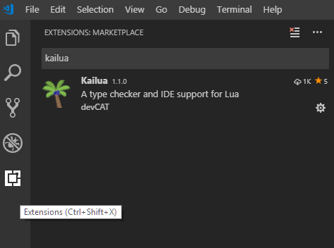
Install it, and enable it once it's finished installing (there will be a button saying "Enable", if it says "Disable" just ignore it.)
Once you're done, open a new folder to work in within VSCode. The first thing you'll do is create a new folder in that folder (reference the image below), and name that folder ".vscode".
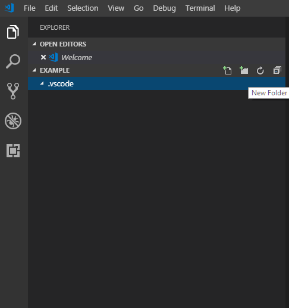
Create a new file within the ".vscode" folder, and name that new file "kailua.json". Within that file, input the following exactly:
{
"start_path": ".vscode/entry.lua",
"preload": {
"open": ["lua51"],
"require": [".vscode/ca_types", ".vscode/uimf_types"]
}
}
This file is the injection point for Kailua, so it knows what to do and how to do it. So you're aware for the future - the "start_path" directive tells it "this file leads me to the other files that I have to read and error-check"; the "require" directive tells it "these files give me the definitions to check for errors." The ca_types.lua file defines many CA functions, so Kailua knows to look for two numbers when using the "cm:random_number(max, min)" command. The entry.lua file will be where we target our own files, to get them debugged.
Next up - let's create those three new files! In the same folder (.vscode), create entry.lua, ca_types.lua, and uimf_types.lua.
Now, shoot back to the Tools & Resources page, and pick up the files of those same names, and copy-and-paste their contents in your new files.
And that's it! I would recommend regularly-ish checking for new ca_types.lua files within the Modding Den.
Devtool Console
Throughout this tutorial series, I will be referencing the "Devtool Console", a mod made by mklabs that allows one to run some Lua code while in the game. It's awesome, and I highly recommend it. I'll be suggesting you use it throughout the tutorial series. Do so.
The big thing to note is that, if you want to print stuff out onto the Devtool Console itself, you can replace out(text) with print(text). Likewise, some statements in Lua are too big to fit on one line in the Devtool Console, but you can have a statement span several lines if you'd like, as long as it doesn't involve assignment. If you don't know what I mean, read a couple lessons first and then come back.
Hello World!
As with basically every programming tutorial on the globe, I'll begin where they all do - printing a message that says "Hello World!"
I'd like to quickly note that as this tutorial series progresses, I'm going to be helping less and less and explaining more and more. I don't want to hand-hold you through the entire project, and each lesson will include at least one "challenge", where I give you an objective and tell you to go do it. Self-guided teaching is important, and once you're done this tutorial series, you'll be expected to be at least remotely competent and able to work this stuff out independently. I highly recommend you stick to the challenges and give them a shot, they'll benefit you if you really want to get good with Lua.
Alright, within your text editor of choice, create a new file. Within that file, type the following block:
function testing_init()
out("Hello World!")
end
This is our first look at functions, which I'll go much further in detail about next lesson. "testing_init()" is a function, which does the "out("Hello World!") line when it's called. Likewise, "out("Hello World")" is a function of its own, and it prints the text within the brackets to a log.txt file, which CA uses for error-checking scripts and printing out details. We're using it for this first tutorial, but we'll see it many more times as we go on.
Save it, and save as "testing_init.lua" within your modding folder on your PC. Boom, your first Lua file. And you did it all by yourself!
Open up RPFM, and create a new packfile. Within the packfile, make the following script directory: "script/campaign/mod". Within the "/mod" folder, add your testing_init.lua file. Save it as whatever you'd like.
I mentioned that the "out()" function is a CA function that prints text onto a log.txt file, but I missed a detail - on retail, that log file is never made. So, what we need to do is go and download/enable the Script Debug Activator mod, by theSniperDevil, which enables the creation of that log file.
Now go grab your new .pack file, and drop it into Steam/steamapps/common/Total War WARHAMMER II/data (which will here-to-for be referred to as /data folder). Enable the .pack file with the mod manager of your choosing, load up the game, and load up a campaign.
In your game folder (Steam/steamapps/common/Total War WARHAMMER II), you should see a new file - script_log_DDMMYY_HHMM.txt. Open that up with a text editor, use find to search for "Hello World". If it's there, it worked, and if it isn't, something went fatally wrong! Go back and try again.
Post-Credits Explanations
At this point, I'd like to quickly cover how CA loads and runs script mods for modders. There is a mod-script loader built into TW:WH2, and it's pretty simple for us to use. We can load our mods automatically in different game modes, using the following paths:
- Campaign (Mortal Empires): script/campaign/main_warhammer/mod
- Campaign (Vortex): script/campaign/wh2_main_great_vortex/mod
- Campaign (either): script/campaign/mod
- Battle (excluding quest-battles): script/battle/mod
- Frontend: script/frontend/mod
And lastly, there's one path that is available during all game modes, and loads before any of the other paths (so if you load campaign, and have a script in the following directory, it will be loaded before any in the script/campaign/mod directory). I must warn, though, that this directory should only be used if you're being very smart about what's within, making sure it's all game-mode-agnostic, or making sure you're checking for the game-mode within
- Lib: script/_lib/mod
Within each of these directories (barring the battle one), if you have a function named the same thing as the .lua file (like testing_init from our last example), it will be automatically called. We'll talk more about what this means, and some alternatives to this method that I prefer, but for now we'll stick with it. Remember, if the function name matches the file name of the script, then it'll be run, except when it's in the /battle directory.
Challenge
And time for your challenge. We're going to start from the top. Make a brand new pack, and a brand new script file, with a new name. Have this print out the text "Goodbye World!" on to the log file, as before. This time, however, make it print while in the frontend game mode (post-startup menus to select between Custom Battle/Campaign and what not).
Fun Stuff
For our second lesson, we're going to go right into something more complicated, and I'll give you a few challenges within this. I'll voice this note right at the beginning: you won't understand every single thing I use here, and that's literally the point. This second lesson is a quick, semi-complicated script to show you some of the possibilites of scripting, with some intro knowledge on new concepts, and the next few lessons following will go right back into the bare basics.
First up - challenge time!
Challenge 1
Your first challenge is to make a new .pack file, with a single Lua file named "example_script.lua" that will load exclusively in the Eye of the Vortex campaign. Create a blank function within the Lua file, named as we addressed in the last lesson.
What We're Doing
The project here is to build a slightly solid script that affects a good amount of change. What we'll have by the end of this lesson is a script that gives Lothern control over the Phoenix Gate at the start of a new campaign, and will spawn a new army automatically when the Cult of Excess faction is destroyed.
Transfer Region on Campaign Start
First thing's first, let's grant the region to them! It's important to note when we call what in our scripts. For things we want to do only once, on game start, we can use a nice CA command, cm:is_new_game(). All that command does is check if it's the very first turn, and the game hasn't been saved yet. We'll use that within an "if" statement, as follows:
function example_script()
if cm:is_new_game() == true then
-- it's a new game, so it'll run this stuff here
else
-- it isn't a new game, so it'll run this stuff here
end
end
You might be wondering the point of those "--" bits. Those dashes - two are necessary - allow you to comment your script, which I will be doing quite a bit and try to make a habit of with all scripts. Everything on that line after the "--" is ignored, and allows you to write whatever you want. It's really helpful when you go and look back over very old scripts and are wondering why the heck you did something a certain way. I've been there many times.
You might be wondering about the "if cm:is_new_game() == true then" bit, too. More or less, when you use the command "cm:is_new_game()", it returns a value of true/false, depending on whether or not it's currently a new game. We can read that value, like I show above, and go down different branches of our script depending on the answer.
In a future tutorial, I'll be showing how to find these commands and use them, but for now, blind faith will make this tutorial go quicker and easier.
On our "if cm:is_new_game() == true" branch, we'll be transfering the region over to Lothern. The command we need to use is cm:transfer_region_to_faction(region_name, faction_name). region_name and faction_name are both database keys, easy enough to find using the Assembly Kit.
function example_script()
if cm:is_new_game() == true then
-- it's a new game, so give Lothern the Phoenix Gate region
cm:transfer_region_to_faction("wh2_main_vor_phoenix_gate", "wh2_main_hef_eataine")
else
-- it isn't a new game, so it'll run this stuff here
end
end
Challenge 2
This one's pretty simplistic, but it'll get harder, don't worry. For now, I would like you to give Lothern a second new region, and to output some text if it isn't a new game.
Are They Dead Yet?
Alright, next step - we need to create something that checks if the Cult of Excess faction is dead, before we create the thing that'll spawn the new army.
And no, I won't give you the answers to that challenge above! Figure it out, chap!
First, a new concept - listeners. One of the lessons very soon, after the basics, goes over listeners in big depth, but suffice it to say: listeners are love, listeners are life. They allow you to "listen" for different things happening in the game - like a battle, a region being captured, a character dying - and to "trigger" a function afterwards. It's the mechanic that powers things like Legendary Lord/Rite unlocks, the Chaos Invasion in big part, post-battle Chivalry or Infamy gains, and a whooole lot more!
We're going to use a listener that "listens" for Lothern's turn to start, and it'll check to see if the Cult of Excess faction is dead-o-rama. If they are, it'll trigger the spawn of the new army.
function example_script()
if cm:is_new_game() == true then
-- it's a new game, so give Lothern the Phoenix Gate region
cm:transfer_region_to_faction("wh2_main_vor_phoenix_gate", "wh2_main_hef_eataine")
-- the second region you should've added in the challenge!
else
-- it isn't a new game, so it'll run this stuff here
-- the output you should've added in the challenge!
end
core:add_listener(
"MyFirstListener",
"FactionTurnStart",
function(context)
-- is it Lothern's turn?
return context:faction():name() == "wh2_main_hef_eataine"
end,
function(context)
-- check to see if the Cult of Excess is living!
end,
true
)
end
Again, don't fear - I'll cover all this in way more depth, and this is the last time I'm gonna give this warning or clarification. Just accept it.
To check if they're dead yet, we have to get the faction object, and run a quick check on if they're living or not. We can do that with the CA command cm:get_faction(faction_name). That returns what CA calls a "FACTION_SCRIPT_INTERFACE". You can run a lot of functions on a faction object, a "FACTION_SCRIPT_INTERFACE", as one of them is is_dead(). You can see more if you go to the scripting-doc.html file in Tools & Resources, and search for "FACTION_SCRIPT_INTERFACE".
function example_script()
if cm:is_new_game() == true then
-- it's a new game, so give Lothern the Phoenix Gate region
cm:transfer_region_to_faction("wh2_main_vor_phoenix_gate", "wh2_main_hef_eataine")
-- the second region you should've added in the challenge!
else
-- it isn't a new game, so it'll run this stuff here
-- the output you should've added in the challenge!
end
core:add_listener(
"MyFirstListener",
"FactionTurnStart",
function(context)
-- is it Lothern's turn?
return context:faction():name() == "wh2_main_hef_eataine"
end,
function(context)
-- define a local variable that can be used to shorthand the faction's name
local excess_name = "wh2_main_def_cult_of_excess"
-- define a local variable to access the FACTION_SCRIPT_INTERFACE for Cult of Excess
local excess_faction = cm:get_faction(excess_name)
-- check if they're dead, and if they are ...
if excess_faction:is_dead() == true then
-- ... spawn that army!
end
end,
true
)
end
Sweet! This is our first look at variables and the keyword "local", which defines where that variable exists and can be accessed. More on this later on!
Spawn That Aaaaarmy!
We're coming up close to being done here! All we've gotta do left is spawn the army, and all I've gotta do is challenge you a couple more times!
The next and penultimate CA command we'll be using is cm:create_force(faction_key, army_list, region_key, x_position, y_position, exclude_named_chars, success_callback). The parameter list looks slightly daunting, but if you take some time to critically think, the only strange thing should be the very last parameter - success_callback. Luckily for you, we won't even be using that one, really.
function example_script()
if cm:is_new_game() == true then
-- it's a new game, so give Lothern the Phoenix Gate region
cm:transfer_region_to_faction("wh2_main_vor_phoenix_gate", "wh2_main_hef_eataine")
-- the second region you should've added in the challenge!
else
-- it isn't a new game, so it'll run this stuff here
-- the output you should've added in the challenge!
end
core:add_listener(
"MyFirstListener",
"FactionTurnStart",
function(context)
-- is it Lothern's turn?
return context:faction():name() == "wh2_main_hef_eataine"
end,
function(context)
-- define a local variable that can be used to shorthand the faction's name
local excess_name = "wh2_main_def_cult_of_excess"
-- define a local variable to access the FACTION_SCRIPT_INTERFACE for Cult of Excess
local excess_faction = cm:get_faction(excess_name)
-- check if they're dead, and if they are ...
if excess_faction:is_dead() == true then
-- define a few local variables that we'll use in the command to save some space!
local army_list = ""
local region_key = "wh2_main_vor_straits_of_lothern_lothern"
local x_position = 516
local y_position = 430
-- ... spawn that army!
cm:create_force(
excess_name,
army_list,
region_key,
x_position,
y_position,
true,
function(cqi)
end
)
end
end,
true
)
end
Those of you critically-thinking will notice that I kept a completely blank string for army_list. Guess what!
Challenge 3
Create the army list! It's one single string, with unit keys separated by commas, NO spaces within the string. Give it a shot, I dare you.
HINT: If you're hitting a wall, global search CA scripts! I won't tell you what to search.
Packaging and Testing
Alright, with the army_list string expanded, this mod should be fully functional. There is one definite bug that I know will exist, and I'll point out now - if there's a character already standing on (516, 430) game coordinates, the army will not spawn. Explaining how to avoid so would take more time than I want to spend on this lesson, so deal with it.
Your final task - start testing! If it doesn't work, here's a quick tip: use the out(text) function! You can use it throughout scripts to take a look at what's triggering and what isn't, like so:
if cm:is_new_game() == true then
-- it's a new game, so give Lothern the Phoenix Gate region
out("It's a new game!")
cm:transfer_region_to_faction("wh2_main_vor_phoenix_gate", "wh2_main_hef_eataine")
out("Added Phoenix Gate")
-- the second region you should've added in the challenge!
out("Added the second region!")
else
-- it isn't a new game, so it'll run this stuff here
out("It's not a new game!")
-- the output you should've added in the challenge!
end
And that's it, yo. Next up, we'll get down to the bare bones and get some great understanding! If some of this stuff didn't make sense, keep pushing on through the next few lessons where I break it down to the bit and hopefully give you a more fuller knowledge on the language. I gave you a glimpse at some story-telling; now let's go back and learn the alphabet, grammar, and colloquialisms.
Chunks & Statements
The first two terms we'll look at are chunks and statements. When Lua is brought to its basic skeletal structure, that's all it is - chunks of statements.
Statement: A declaration, a thing-to-be-done, a command that Lua will run Chunk: A sequence of statements, from an entire file to a single line of data
Every chunk is a to-do list, and a statement is an objective on that list. You can have to-do lists of all shapes and sizes, and each thing that needs to be done can be small - "brushing your teet" - or huge - "spend way too much money on transmission repairs". No, I'm not still salty about the money I spent on transmission repairs, why do you ask?
The Lua interpreter divides everything it takes into specific chunks, which we'll look at later on. For now, we understand the term chunk - a to-do list.
Within each chunk is one or more statements. A statement is one coherent thought or action within Lua. Something like this can be one statement:
a = 1
Or, this can be one statement:
a = 1 + 1 + 1 + 1 + 1 + 1 + 1 + 1 + 1 + 1 - 1 / 70 * 300 + 5180 - 418 + 405
That is, one bit of data that Lua has to evaluate and run.
Remember the term "chunk" - we'll be covering how they're defined later on, when we look at some more keywords.
Variables & Types
NOTE: I recommend you have the Devtool Console handy to mess around with some of the stuff covered here.
Following the concept of chunks and statements, the next most important subject to cover is variables, and types.
Variable: A custom-made keyword that can be used to represent a value Type: The sort of value that is in a variable. Lua types include: boolean, string, number, table, nil, function. There are more, but we won't need them.
But before going deeper into a definition, let's look at an example:
a = 10
b = 5
c = a + b
We can see that each of those letters in the chunk above is a variable, which are each assigned a value. In this case, variable a is assigned the value 10, variable b is assigned the value 5, and the variable c is assigned the value of a plus the value of b. This instance (c = a + b) works a lot like algebra - you aren't making "c = ab", but you're adding the value of a (10) to the value of b (5), to get the result of 15.
The coolest thing about variables is their dynamism. They can be assigned to any type, change to any type, and they can infinitely change values. Let's take the above code, and mess with it a little bit.
NOTE: From this point on, you'll see → after out() calls. This is to specify what text is actually output.
a = 10
b = 5
c = a + b
out(a) → 10
out(b) → 5
out(c) → 15
a = 25
out(a) → 25
out(c) → 15
c = a + b
out(c) → 30
I wanted to point out an important thing with this example. If a variable is assigned to the values of some other variables (c = a + b), it will do the calculation and assignment the moment that the statement is called. If either variable (a or b) is changed after the assignment statement, the assigned variable's (c) value (15) won't change. It takes the variable's value, not the variable itself.
So, we see here that variables can be numbers, which is one of the primary types in Lua.
Number: any numerical value, within a specific number range (a much bigger number than needs to be worried about)
As we saw above, we can perform some basic arithmetic on numbers.
a = 5
b = 2 - 0.34
c = a + b
d = c * 2
e = d / 3
out(c) → 7.56
out(d) → 15.12
out(e) → 5.04
String: any alphanumerical value, within quotation marks ("" or ''). Similar to numbers, size does not matter, Lua can handle millions of characters within a string.
Like arithmetic for numbers, one can concatenate strings (along with many other stuffs!) to combine several, using the .. operator.
a = “This “; b = “is “; c = “an “; d = “example.”
out(a .. b .. c .. d) → This is an example.
NOTE: Yes, you can have several statements on the same line in Lua! The semi-colons are not necessary, I added them for extra readability.
While on the subject, you can concat (cool-kid for concatenate) string literals and variables.
a = "example"
out("This is an " .. a) → This is an example
Boolean: a true or false value.
a = false
out(a) → false
out(a == false) → true
The above probably looks a little weird, but that's because we're learning a new operator! The == operator checks for equality, whereas the = operator assigns a value. The final statement above reads "output the result of a == false". Since a DOES equal false, it prints "true".
It's very important to note that any variable can be treated as a boolean, such as when using the "if something then" statement, or by comparing it to a boolean. If a non-boolean variable is treated as a boolean, it will be converted to false if the value is nil or false; otherwise, it will be converted to true.
a = 0
b = nil
out(a) → 0
out(a == false) → false
out(b == false) → true
In this case, a does NOT equal false, because it has a value to it that isn't false or nil. By the same card, b DOES equal false.
You're probably asking by now, what IS nil? I've mentioned it a number of times already, you're probably ready to lear about it. Here we go!
Nil: the absence of data.
If one were to try to print a non-existent variable, the result would be nil. That's because there is no data for that variable.
out(a) → nil
a = 5
out(a) → 5
Nil is a good way to check whether or not something exists, and we'll, towards the bottom of this lesson, talk about how to type-check this data in our scripts to see if variables are NOT nil, and thus exist.
Nil is also a good way to clear away variables that you don't want to use anymore. There's a more realistic way of doing it, and this probably won't be necessary for most of what you will be doing, but I like to give a full knowledge.
a = 5
out(a) → 5
a = nil -- Memory deallocated, bye "a"!
out(a) → nil
Lastly, it's important to note that nil is not the same as null, though they look quick similar. We'll cover that soon-ish, when we get into more CA script interfaces (like FACTION_SCRIPT_INTERFACE that we saw a few lessons ago).
Function: a definition for a chunk that can be called at any point, after being defined.
There are two types of functions - an anonymous function, and a named function. An anonymous function has no name (clearly), so it cannot be called further on in the script. We use anonymous functions relatively frequently, but our focus now will be on named functions, which are functions assigned to a variable.
a = 10
example = out
example(a) → 10
Yes, that's valid! You can actually assign a variable to a function like, it's pretty cool! We have syntactic sugar for assigning a variable to a function, however, and it's more common to see script like that:
function example(text)
out(text)
end
example("Testing!") → Testing!
example("A Cooler Test!") → A Cooler Test!
As an added bonus, we're getting a quick sneak peak at one of the upcoming tutorials: parameters and arguments, for functions. In the above function, "text" is a parameter for example(), which is then passed along to out and triggers that function within the chunk.
Table: a collection of more than one piece of data.
There are several types of tables, which we'll cover later on. I'd like to first look at the array version of tables, the simplest and most common.
a = 5
b = 10
c = 17
table = {
a,
b,
c
} -- assign the three *values* of the variables to the table
out(table[1]) → 5 -- Lua tables start at index 1!
out(table[2]) → 10
out(table[3]) → 17
out(table[4]) → nil -- doesn't exist!
Arrays are numbered automatically, so it really reads "the first index of table is 5, the second index of table is 10", and so on. You access those indexes by using the \[num\] operator, which we'll look further at in the next tables tutorial later on. The reason this works, however, is because Lua is automatically numbering these values, giving them a key. When you make an array like that, Lua reads it more like the following:
a = 5
b = 10
c = 17
table = {
[1] = a,
[2] = b,
[3] = c
}
The other major type of tables is a map, which works by manually assigning the key of a value instead of letting Lua automatically number them, like in arrays.
a = 5
b = 10
c = 15
table = {
["five"] = a,
["ten"] = b,
["fifteen"] = c
}
out(table["five"]) → 5
out(table["ten"]) → 10
out(table["fifteen"]) → 15
Maps will come into some great use pretty soon, but for now I just wanted to introduce you to how they look.
For now, you've done well, and I haven't even challenged you yet!
Challenge 1
Mess with everything in this tutorial using the Devtool Console. Try to grasp the different native types of Lua, and make sure you understand the difference between the assignment operator and the equality operator. There's not really a good challenge to do here, but I do seriously suggest you just mess around with the stuff here. Try some different things like concatenating strings, adding numbers, messing with basic functions, stuff like that. Have fun!
Type-Checking
And before we say goodbye, let's look at a few more CA functions. These ones can type-check for us, seeing if a variable is, for instance, a string.
The list is as follows:
- is_nil(variable)
- is_string(variable)
- is_number(variable)
- is_boolean(variable)
- is_function(variable)
- is_table(variable)
a = 5
b = nil
c = {1, 2, 3, 5, 70}
function d() end
out(is_number(a)) → true
out(is_nil(b)) → true
out(is_table(c)) → true
out(is_function(d)) → true
Expressions & Operators
As we've seen, Lua is made up of chunks and statements. Statements can contain variables, and all variables have a type, though it can change at any point.
Expressions are the section of a statement that, essentially, tell Lua what to do. They come in a billion different shapes and sizes. For now, we'll cover all the basics you'll need, and some basics you really don't need but I'll hand it to you anyway, and we'll go back and review some older stuff. Here we go!
Math Operators
Sweet. This is what all of those quizzes in grade school trained you for. We have the big four from algebra - addition, subtraction, multiplication, and division.
out(2 + 3) → 5
out(5 - 1) → 4
out(16 * 3) → 48
out(9 / 3) → 3
We can also use a - to negate a value, or, in simple terms, turn a positive number into a negative and vice versa.
a = 10
b = -20
out( -a ) → -10
out( -b ) → 20
We also have a couple other fun math things. We can raise numbers to any power, using an exponential expression.
a = 2
b = 4
c = 3
out( a^a ) → 4
out( b^c ) → 64
out( 64^0.5 ) → 8 -- getting the square root of a number!
We can also use some modulo math. It's a way of dividing two numbers that gives you the amount remaining, and it's a great way to read if a number is a multiple of another.
out(8 % 2) → 0 -- 8/2 = 4, and divides evenly, so nothing is remaining!
out(7 % 2) → 1 -- 7/2. "6/2" divides evenly, so we subtract 6 from 7, and get "1" as the remainder!
out(8 % 3) → 2 -- 8/3. "6/3" divides evenly, so we subtract 6 from 8, and get "2" as the remainder.
As said, it's a great way to read if a number is a multiple of another. If a modulo expression returns "0", that means it divided evenly, and is therefore a multiple of the number divided by.
And that's math!
Comparison Operators
This sounds a lot more complicated than "math", eh? It's not that complicated - we're comparing how two variables relate to one another, using expressions we've all seen before. The list of comparison operators are as follows:
< -- "less than" > -- "greater than" <= -- "less than or equal to" >= "greater than or equal to" == "equal to" ~= "not equal to"
All of these expressions result in a boolean value.
a = 10
b = 7 + 3
out(a == b) → true -- they ARE equal!
out(a ~= b) → false -- they ARE NOT not equal (weird, I know)!
c = 8
d = 7
out(c > d) → true -- 8 is greater than 7
out(c < d) → false -- 8 is NOT less than 7
It's important to note that Lua will consider different types to be different values. A string and a number will always be different. Lua will throw an error if you attempt to compare - using less-than or greater-than - any two separate types. Lua will not throw an error for "==" and "~=", however, and if they are separate types, they will always be inequal.
a = 15
b = "15"
out(a == b) → false -- they are different types!
out(a >= b) → error (attempt to compare number with string)
Do note that you can compare strings using greater or less than, but it compares the alphanumerical order of the first character. “0” is less than every number or letter, whereas “a” is greater than every number and less than every letter, and “z” is greater than every number or letter. Again, not really important, but you came here to read me ramble on about random stuff.
And that ends our comparison operators!
Logical Operators
Next up are our logical operators! We have three operators to concern ourselves with here - and, or, and not.
Not, as a logical operator, is pretty simple and super handy. It basically converts the value to the right of it into a boolean, and reverses it. Any value other than nil or false will be converted into false, and nil or false will be converted to true. Let's take a look:
a = true
b = nil
out(not b) → true -- prints a double negative - not false, so true
out(not a) → false -- reverses the value of "true"
c = 100
out(c) → 100
out(not not c) → true -- c is a number, "not c" would become "false", and "not false" would become "true"
The operators and and or are the hearts of a lot of logic in Lua. "If this and this, then do this".
a = 15
b = false
if a == 15 and not b then -- "if a is equal to the number fifteen, and "not b" returns true, then ... "
out("It does the thing!") -- " ... print the text! "
end
You'll practically always see these two used in this way, for conditional statements like that - if these conditions work out, then do this other thing.
Homeless Operators
I don't really have a category for these two operators, but they're incredibly important.
First off, we have concatenation, which we've seen before. It's a way to add two strings together, and make them into one happy family, using a simple pair of dots.
a = "Hello"
b = "World!"
out(a .. " " .. b) → Hello World!
A couple of notes real quick - I have the blank space in a string in the middle, to make sure it doesn't print "HelloWorld!". Also, I like to add spaces on either side of my concatenation operator, but that's personal taste, this would also be valid:
out(a.." "..b) → Hello World!
And lastly, we have one more operator, and this time for the table type. The character # can be used to read the number of entries within an array. It's pretty awesome, let me show you:
table = {"this", "is", "an", "example", "array"}
out(#table) → 5 -- there are five strings within the table!
Please note that you really shouldn't use the # operator if the table is not definitely an array. I'll show you why using it on maps might mess something up:
table = {
[1] = "test",
[2] = "example",
[5] = "boom",
[7000] = "woo",
[3] = "argh"
}
out(#table) → 7000
In technicalities, it's doing that because it's reading the highest index in that table, or the highest numerical key. Those are assigned automatically, in order, for arrays; in maps, there's no such guarantee.
Challenge 1
As with last, no challenge! We have only a couple more lessons to do before we get into the REAL nitty-gritty, and once we do there will be a lot of nice challenges. For now, keep messing with this stuff in the DevTool Console, test around.
Scopes & Stuff
A super important concept in Lua is the concept of scope. Every single variable made has a scope, which is used to define where a variable can be accessed.
By default, all variables are global, which means they're in the entire global environment. The global environment is a slightly-fancy way of saying "available within the entire program". When writing Total War scripts, it's a little suboptimal to use global variables, for a few reasons -
1) What if someone else wants to use a variable named a, and you do as well? This would force you to have a fully unique name for every single variable everywhere. Kinda a pain!
2) Saving that variable globally is taking up memory, since that variable will never be destroyed. It will take a lot of work to actually cause performance issues, but it's good to be mindful of.
3) What if we want our variable to be a secret? Huh? They can't get our birthday present! gollum
And all this is where the keyword local comes in. The local keyword defines a specific scope for a variable, and prevents them from being a global variable.
function example()
local var = "Hello World!"
out(var)
end
example() → Hello World!
out(var) → nil -- the variable "var" doesn't exist here!
In this example, the variable var is defined within the function example's definition. That means that var is only available from where it is defined (ie. local var =) to where the scope ends. In this case, the scope ends at the end keyword.
This is as good a time as any to look at the other ways scope can be defined. A variable can be scoped to the root of a script, or any number of nestled scopes within that root.
Other key-words other than function that define a scope (and their end point) are as follows:
- do --[[ the scope ]] end
- function function_name() [[ the scope ]] end
- if whatever then [[ the scope ]] end
- while whatever then [[ the scope ]] end
Let's take a slightly-complicated look at that:
local a = 5 -- visible to everything BELOW this line!
function example_thing()
local b = a -- visible to everything BELOW this line, until the "end" that matches "function"
do
local c = 15 -- visible to everything BELOW this line, until the "end" that matches "do"
out(c)
out(b)
end
out(b)
-- c is NOT available here!
end
-- b and c are NOT available here!
out(a) → 5
This is a good point as any to explain two things, and issue two directives:
- ALWAYS use the keyword
local. - ALWAYS use good indentations!
Be smart with where exactly the term "local" is used - you'll pick up how later on as you go and pick my brain, but for now, understand that you must ALWAYS put the keyword local before a variable!
As you can see with the example_thing() function above, proper indentation is a GREAT way to visibly see scopes and quickly tell where a variable is and isn't available.
Functions, Arguments & Parameters (Also, Returns)
Welcome back! On today's lesson, we're going to cover one of the most fundamental types in Lua much further, and that type is, if you can read, functions. Everybody loves functions.
Functions are a special data type in Lua. Functions have two specific stages: definition, and call. A function can be defined as many times as one would like, but it will not do anything until the function is called. Quick look, followed by a breakdown:
-- DEFINE the function, which we can call and trigger later on, as much as we'd like
function example_function()
out("This is your example function") -- at this point, nothing is output
end
-- actually calling the function to trigger the out!
example_function() → This is your example function
And that's the basics of it! We should note that in this example, example_function is actually a variable name. The above is syntactic sugar for the following:
example_function = function()
out("This is your example function")
end
But the other way is a lot more common, and probably prettier for all eyes. On the case of syntactic sugar, you can simply put the keyword local prior to the keyword function, and it will make it a local variable. I'll be doing that from now on, to beat that idea in your own head.
Since the name of a function is just a variable, it can be redefined, and even as a different type. If a variable is defined more than once, the latest definition will "win".
local function example_function()
out("This is your example function")
end
example_function = 10 -- Why would ANYONE do this?!
example_function() → attempt to call global `example_function`, a number value
The term "call" here is what I mentioned earlier - the call phase of a function. A call to a function is triggered by those two brackets - ().
At this point, we have a function that prints the same text over and over again. Let's give it some way to change the text based on some dynamism!
local function example_function(text)
out(text)
end
example_function("Testing") → Testing
example_function("Example!") → Example!
The term "text" is a local variable for that function, available in the entirety of that function's scope. It goes "out of scope" (as the cool kids say) by the end keyword. This is another clever shorthand that the Lua languages gives to us. Use it!
A clarity-for-clarity's-sake note here: in the above example, "text" is a parameter, which is the fancy word for a local variable assigned to the function's scope. The string "Testing", or the string "Example!", are arguments, which is a variable or value that is "passed" into the function and takes the place of the parameter at runtime. We can think of a parameter as a "fill-in-the-blank" space on an entry form, and the argument as whatever we fill in there.
One final thing we should know about before we go on is return values. In the above, we're just passing stuff into a function. But what if I want to take stuff out of a function? Well, return values, of course!
The keyword return is neat, and two-fold. Its first, and primary purpose, is to take whatever is to the right of it and shoot it back out, if the function is called. Its second, and still very-important, purpose is to stop the function once the keyword is called. Let's take a look at a common example of return values:
local function double(num)
-- if the parameter is not a number type, then output some text and then STOP the function, to prevent it from going on
if not is_number(num) then
out("double() called, but you didn't supply a number! Aborting function!")
return
end
-- if the parameter is a number type, then double it and return it! (we can safely assume that "num" IS a number, because otherwise the function wouldn't go this far)
local val = num * 2
return val
end
local a = 2
out(a) → 2
-- define a local variable as the RESULT of "double(a)"
local b = double(a)
out(b) → 4
You can return any type, and you can even return multiple values at once. Say you wanted to take the above function, but instead of just doubling the number, you also tripled it, and wanted to get both values.
local function double_and_triple(num)
-- if the parameter is not a number type, then output some text and then STOP the function, to prevent it from going on
if not is_number(num) then
out("double_and_triple() called, but you didn't supply a number! Aborting function!")
return
end
local double = num * 2
local triple = num * 3
-- this is it, just separate the return values or variables with a comma!
return double, triple
end
local number = 5
local d, t = double_and_triple(number)
out(d) → 10
out(t) → 15
I'd like to point out that I'm changing the names of my variables to point out that the name of parameters can be whatever you want. Don't be confused by me defining the function as local function double_and_triple(num) and calling it using double_and_triple(number). num is a local variable, available only in the SCOPE of the function, whereas number is a different local variable, available to a higher scope but below the function definition.
At this point, we've got all the background knowledge really needed to start doing some more cool stuff! In the next lesson, we'll learn more about script interfaces, we'll go further in-depth about listeners (which we briefly used in lesson #2), and we'll talk about commands and how to check for existing ones! And you'll have A CHALLENGE!
WOO!
Commands, Interfaces & Listeners
For today's lesson, the subject is three-fold: commands, interfaces, and listeners. We've looked at all three of these before - all in lesson #2 - but in this lesson, we'll be going way further in-depth so you might have a better grasp of all of those subjects.
Commands
A command, put simply, is a CA-defined Lua function that does some cool stuff that we can't do. We've seen a few already - cm:transfer_region_to_faction() and cm:create_force(). Commands are used to communicate between the Lua environment and the actual Total War Engine - the base C++ code that defines the majority of the game.
Through these commands, we can script a whole lot of stuff! From character spawns, to new effects applied to characters and factions and armies, to quest battles, to unlocking rites, and so on.
In big part, commands make or break what can be done with scripts. Commands are the driving force of most any script. At this point, though, you might be asking - "how the HECK do I find out what the commands are?" And that, my friend, is why you're reading this lesson. Or maybe you got lost when you were just trying to find funny videos about cats. Either way, next paragraph!
So, once more in the "Tools & Resources" page on this site, there's a section within called "Scripting Resources". We'll look at, first, the "Scripting Doc (CM Functions)" file. Open it up!
Now, before we go on, one thing MUST be covered. EVERY command in this document needs to have a prefix of cm:.
In this document, let's take a look at the two commands that we've used already.
Command: transfer_region_to_faction
Description: Transfer a region ownership to a faction.
Usage: transfer_region_to_faction("region", "faction")
This is relatively straightforward. The Command: line tells you what to affix to cm:, so this would be cm:transfer_region_to_faction. Since it's a function call, which we learned about just last episode and you wouldn't dare forget so soon, we add the brackets to it: cm:transfer_region_to_faction().
We can see in Usage: that it takes TWO parameters. They seem to be strings, one of which says "region", the other "faction". It's easy enough to tell that means "the region key in string", and "the faction key in string". So, overall, the command call would look like this: cm:transfer_region_to_faction("phoenix_gate", "eataine").
Command: create_force
Description: create a navy or army at a position. Final parameter specified whether the command goes via the command queue
Usage: create_force("faction_key", "unit_list", "region_key", x_position, y_position, exclude_named_characters, "id", true)
The same applies here. cm:create_force(), with a bunch of parameters. You might notice, however, that it's completely different compared to what we used before. Instead of "id", we used success_callback, and there WAS no parameter after that. What the heck? Let's back-up and talk about why.
The commands in this document are commands to the game interface, something that you really should never, ever touch directly, for fear of crashing the game if you mess something up. These functions -cm:create_force() - are wrappers, over that base command, so we don't have to directly touch the game interface directly. Using the CA functions will quickly error-check our code, and prevent any such crashes (when wrappers for those commands exist!). But what do I mean? Let's open up our script dump and go to script/_lib/lib_campaign_manager.lua, and search for create_force(.
We'll see a line that looks similar to what I have already shown you - function campaign_manager:create_force(faction_key, unit_list, region_key, x, y, exclude_named_characters, success_callback). This is the wrapper. Within this function, lower down at the bottom, we can see the call to the game interface - self.game_interface:create_force(faction_key, unit_list, region_key, x, y, id, exclude_named_characters, true);. This looks a lot closer to the definition CA has in their documentation, and I belive it was the definition they were trying to go with. Not sure though!
In these situations, it pays to be careful. I advise you to use the CM Scripting Doc cautiously. It isn't fool-proof, and every change that CA has made over the years hasn't been recorded in there - there are commands listed that haven't been functional since Total War: Empire. This is when I point you back to the Setup lesson, if you haven't done that, and tell you to go do it. There are three hyper important tricks in there that will help you understand what to do in a situation like this:
-
Check the lib files! Most functions in this document will be in
lib_campaign_manager.lua. Bonus, as you could see with the above example, CA gives a quick explanation for what the function does and what the types are, and where they are found. This is always my first check -
Use the script dump! All you have to do is use "Find In Files ... " within Notepad++, type in the name of the command (ie.
create_force), and wait for it to search all the files. It will come up with some hits, and you can read through CA scripts to see what they do and how it's used. -
Use Kailua! It might take some time to fully understand the
ca_types.luafile that we've made for TW:WH2, but it should be pretty easy to read it if you want to know the parameters of a function. Openca_types.lua, within VSCode (or whatever), search for the name of the command again (create_force), and it will show you some neat stuff. I'll go over what it looks like now, just so you know:
--# assume CM.create_force: method(
--# faction_key: string,
--# unitstring: string,
--# region_key: string,
--# xPos: number,
--# yPos: number,
--# exclude_named_chars: boolean,
--# callback: (function(CA_CQI))?
--# )
Each of these lines is a parameter, and it's split into a name and a type. The name is just a description of what should go there - a faction key, a region key, etc., - and the type defines, of course, the type!
There's a third example I'd like to go into, which is return types via the CA commands. It works just like regular return values (seen from the last lesson), but sometimes the return value is vague, and it's really hard to read using CA's scripting doc. Again, utilize the script dump and Kailua. In Kailua, it'll look a little different - let's grab an example of a command with a return value.
--# assume CM.get_saved_value: method(valueKey: string) --> WHATEVER
NOTE: WHATEVER is a beautiful keyword in Kailua that lets you not define the type of a value, instead of saying "return a number" it says "return literally whatever"
Some functions in the ca_types files have a --> to their end; on the right side of that arrow is the return value. Easy enough to read!
And that's my explanation of CA commands! Hope you had as much fun as I did.
Interfaces
Similar to commands, script interfaces are a way to access some game data with some Lua. We looked at them previously - in the second lesson, we used a FACTION_SCRIPT_INTERFACE, which we got by using the command cm:get_faction("faction_key").
Script interfaces are objects that we can apply some functions to (functions applied to an object are known as methods, but we'll talk about that terminology later). In our previous example, we did the following:
local excess_faction = cm:get_faction(excess_name)
if excess_faction:is_dead() == true then
Wherein, of course, excess_name was a local variable a bit further up. In this example, cm:get_faction() has a return value of a FACTION_SCRIPT_INTERFACE, which we assigned to the local variable excess_faction. FACTION_SCRIPT_INTERFACES have a method called is_dead(), which lets us read if the faction is, well... dead. But how did I know to use that? gasp
Also similar to commands, script interfaces are documented with a slightly-questionable CA file, though this one is typically waaaay more reliable, if a bit inconsistent with some naming. We can, again, grab it from the Tools & Resources page, this time under the title "Scripting Doc (Events & Interfaces). Our big focus for now is the latter half of that name - Interfaces - though we'll be getting into events right in the next section below!
Open your newest Scripting Doc, and search for FACTION_SCRIPT_INTERFACE. It should be towards the top of the document, right near the word "Interfaces" in big boldage. Like this: Interfaces. Cool, found it? Click it!
You should get a big, long list of blue links, followed by more clear definitions. A typical entry here would look similar to the follows (because the following is an entry here):
Function: holds_entire_province
Description: Does this faction hold the entire specified province? Also may include vassals
Parameters: holds_entire_province(String province, bool include_vassals)
Return: bool
As before, like the commands above were done with a prefix of cm:, these interface functions are done with a prefix of that script interface. But it won't just be FACTION_SCRIPT_INTERFACE:holds_entire_province, that makes no sense! In our previous, excess-based example, it would look like the following:
local excess_faction = cm:get_faction(excess_name)
if excess_faction:holds_entire_province(
The second line - description - is quite obvious. It's just a description. Read it, don't read it, I don't care.
Parameters! We talked about this recently, you remember it right? It'll be a type and a very brief stand-in name to explain what should go there. In this case, you can tell that it wants the key of the province, in strings, and a boolean that determines whether or not you'd like to include vassals in the check. Sometimes, they'll just put the stand-in name in quotation marks to show that it should be a string.
Return values are much the same. Sometimes there will be returns of other script interfaces, and that's how you can start getting some fun stuff. With a FACTION_SCRIPT_INTERFACE, you can use character_list() to get a CHARACTER_LIST_SCRIPT_INTERFACE, and then use item_at() to get a CHARACTER_SCRIPT_INTERFACE, and then use get_forename() to get a string. That'll look like:
local faction = cm:get_faction("whatever")
local character_list = faction:character_list()
local character = character_list:item_at(0)
local forename = character:get_forename()
I will note that you don't have to assign everything a local variable here. It can look, albeit much uglier and less safe, like this:
local forename = cm:get_faction("whatever"):character_list():item_at(0):get_forename()
But I do not recommend doing something like this, until you're very comfortable with the language. I do it very, very, very rarely, only when it makes perfect sense to do it, and that's lie-talk for "when I'm tired and it makes perfect sense to my tired brain".
Script interfaces are stupidly, stupidly powerful, and using all these smartly allows you to make some serious change within the game, and to read a lot more details, from "how many units are in this army" to "what level is this character" to "how many armies were in the last battle?" But, above all, these interfaces are used best and most powerfully when used in conjunction with listeners and events.
What are listeners and events? Ah, well...
Listeners and Events
A listener is an important script command that, simply, waits for something to happen - or, listens for something to happen - in the game, and then triggers something else. Using a listener, we can listen for an event such as the creation of an army, the occupation of a city, or even a battle, and then we use the information from that situation, check for something specific, and run our code if the event matches our criteria. For example: we may be looking for Mannfred to occupy Altdorf. In this case we'd have to use a listener to "listen" for a city being occupied, but we don't want to listen for just any city being occupied. In our example, we have to listen for Altdorf being occupied, and for Mannfred doing the occupying. The listener will listen for every single time a city is occupied, and once those two conditions are met - Mannfred occupying Altdorf... Clue, anyone? - then our listener will trigger some code. In layman's code, our listener will do a thing!
Overall, it is a very valuable connection between Lua and game data, and any scripter should understand the in's and out's of a listener.
Let's break down the basics of a listener. Here is it, at its most basic form:
core:add_listener(
"listener_name",
"event_name",
boolean1,
function(context)
end,
boolean2
)
- "listener_name": Can be whatever you want it to be! (Keep in mind if you share the same listener_name as another listener, and that name is called with core:remove_listener("listener_name"), one of those listeners will be removed, and it'd be hard to tell which would be. Use unique names!)
- "event_name": This must be one within a set of Events that CA defines. You can view this list here. We'll cover this list more in depth later on.
- boolean1: This is the "conditional" boolean. If it is set to true, the function to execute will execute; if it is set to false, the function will not execute.
- function: This is the "callback" function, which only runs if the conditional boolean returns as true. Can be whatever valid function you want! Note that it MUST have the format of "function(context) --[[....]] end,"
- boolean2: This is the "persistence" boolean. If it is set to true, the listener will continue listening. If it is set to false, the listener will be removed from the game data.
CA Events
Let's talk more in detail about the Events I mentioned.
As previously clarified, Events are predefined objects that are used exclusively in tandem with Listeners. A full list of Events, and all of their methods, and all of the interfaces, can be found here. Let's go over how to use this document!
At the top of the document is a long list of Events, each clickable to divert to another part of the document. Each of these Events have specific usage. It should be noted here that documentation on some events is rather light, ie. when to use certain ones versus others, but a lot can be found out by looking at vanilla scripts or other mods.
I want to start a new function after the player takes over Altdorf. After searching the term "Occu", the event "GarrisonOccupiedEvent" is highlighted. This looks promising! After clicking, the available functions are "garrison_residence" and "character", which seem to be the region that was occupied, and the character that led the assault, in order.
Conditional Coding
Remember "boolean1" from up above? If that is set to true/false, it's not really effective code. We can replace that true/false with a function that returns a true/false value, and that way we can actually check the event, see if a specific thing happened in that event, and then spit out a boolean to trigger the callback function.
function(context)
return context:[thing we want to check]
end,
In essence, the above is the foundation for what all effective conditional functions in a listener should be. Context, in the context of listeners, is an object which contains all the data that occurred within the Event. But let's back up. Remember on the document, we found GarrisonOccupiedEvent? Let's go back to it and click it again. We see two options, as mentioned before - "garrison_residence" and "character". As our intention is to find a specific region being occupied - Altdorf - we need to use that former path.
At this point, our WIP code looks like the following:
function(context)
return context:garrison_residence()
end,
For the conditional function, you always want to start with "return context:", and the next method can only be one of the methods that is accessible by that Event - which is where this document comes SO in handy. For other examples, click around the different Events listed at the top. Each "Function" underneath each Event after clicking it is a valid method for the context of that Event. The "RegionSelected" event only has access to a "region" function, which means the only valid method is to use "context:region()". "DilemmaChoiceMadeEvent", however, has access to "faction", "choice", "campaign_model", and "dilemma", so those four are all valid methods.
NOTE: Yes, you have to add "()" to the end of the function's name.
Back to our example - you'll see the garrison_residence has GARRISON_RESIDENCE_SCRIPT_INTERFACE beneath it. Looking in the "GARRISON_RESIDENCE_SCRIPT_INTERFACE", I don't see a "key" or "name". Matter of fact, the most likely path is "region()". That brings our code to...
function(context)
return context:garrison_residence():region()
end,
After checking the REGION_SCRIPT_INTERFACE, we finally see the "name" method, which allows us to fully check our context. Our line of code is finally built to:
function(context)
return context:garrison_residence():region():name() == "wh_main_reikland_altdorf"
end,
But that's not all! All this does is to check if the Altdorf region is being occupied, but it says nothing about Mannfred! We'll go back to the very beginning - find the GarrisonOccupiedEvent on the document, and return to its functions, which were garrison_residence() and character(). We want to build an "and" sentence for our conditional, so that it only triggers the function when Altdorf is occupied AND when it's occupied by Mannfred. Let's try to plot our trajectory a little. We should try to find a script_interface that allows us to reference an agent_subtype key, which is the cleanest and most mod-friendly way to search for Mannfred. Looking at CHARACTER_SCRIPT_INTERFACE, I see two functions - character_subtype() and character_subtype_key(). The latter is used to return a string - ie., it doesn't check for a specific subtype key, but it will tell us what the characters subtype key is. We need to check for a specific subtype key, "vmp_mannfred_von_carstein".
function(context)
return context:garrison_residence():region():name() == "wh_main_reikland_altdorf" and context:character():character_subtype("vmp_mannfred_von_carstein")
end,
Note here that the first line of context, that ends in ":name()", needs to have an equal-to check because we don't want to return the name of the region, but we want to return a value of true or false if the name of the region is equal to the string we define - "wh_main_reikland_altdorf". We can read this as "return true if the region's name is Altdorf, and if the character is Mannfred; else, return false."
A strong conditional function is very important to writing good listeners, as listeners can be very performance-heavy if there are many triggering at once, and the more that are whittled away via a strong conditional, the better performance will be. Be mindful of your conditionals!
Callback Functions
At this point in the walkthrough, we have about 60% of our listener completed! It's not bad, let's take a quick look at what we actually have written:
core:add_listener(
"MannfredOccupiesAltdorf",
"GarrisonOccupiedEvent",
function(context)
return context:garrison_residence():region():name() == "wh_main_reikland_altdorf" and context:character():character_subtype("vmp_mannfred_von_carstein")
end,
function(context)
-- code to execute
end,
boolean2
)
I'd like to point out a couple quick notes. To start off - yes, your listener_name can be anything you want, as long as it's a string. You need a comma after every argument in the command, of which there are five that are detailed way at the top - listener_name, name, conditional boolean, callback, and persistence boolean. The code above is written the way it is because that's a common application of it, and allows it to be easily read, but realistically this can all be written on one line.
Alright, so we are on the function to execute block, known as the callback function. Here, we have much more freedom than the conditional function, as we can do whatever is needed with this block. For instance, we can have a callback function that triggers an event (like a dilemma or a message), or grants a unit/experience/ancillary, or unlocks something like a Rite or a Legendary Lord. For our instance, I want to just give Mannfred's army a new unit and a new effect bundle.
NOTE: For our sake, we're going to assume the new unit and new effect bundle are already defined.
Looking up in our commands document, I see a grant_unit_to_character to command. Checking vanilla usage, I see it takes two args - a char_lookup_str and a unit_key string. The unit_key string - which refers to the main_units_tables - is, in our situation, tutorial_big_bat. To find a char_lookup_str, we have to first find the character's cqi.
For more information on char_lookup_str and cqi, go to the CA types page
Thankfully for us, we can go back to where we were before and use the context of the Event to find all the info from before. Looking at the CHARACTER_SCRIPT_INTERFACE, we see a direct link to cqi, with the method "command_queue_index()". For this, we define our local values as such:
local char_cqi = context:character():command_queue_index()
local char_lookup_str = cm:char_lookup_str(char_cqi)
With this, we find the CQI first of the character, and then apply that to find the character's lookup string, which is the type needed for grant_unit_to_character.
Before we apply that command though, we should find the arguments we need for apply_effect_bundle_to_force(), which is our command that will give an effect bundle to Mannfred's army. We first need our effect bundle; we'll use tutorial_free_hair. The second argument is a military force CQI, and our third argument is a number of turns. We'll make it five turns long.
To find the military force CQI, we use something similar as above. We will go from character to military force, and then find the CQI there. We can use something like the following:
local mf_cqi = context:character():military_force():command_queue_index()
Alright, now we have all we need to build our callback function! Let's mush it all together real quickly.
function(context)
local char_cqi = context:character():command_queue_index()
local char_lookup_str = cm:char_lookup_str(char_cqi)
local mf_cqi = context:character():military_force():command_queue_index()
cm:grant_unit_to_character(char_lookup_str, "tutorial_big_bat")
cm:apply_effect_bundle_to_force("tutorial_free_hair", mf_cqi, 5)
end,
And that's a quick walkthrough on how to assemble your callback function! Please note, you can have whatever you want here, and there's nothing saying you must restrict yourself to the context of the event. As an example, I can do the same thing without context, like so:
function(context)
local mannfred_faction = cm:get_faction("wh_main_vmp_vampire_counts")
local mannfred = mannfred_faction:faction_leader()
local char_cqi = mannfred:cqi()
local char_lookup_str = cm:char_lookup_str(char_cqi)
local mf_cqi = mannfred:military_force():command_queue_index()
cm:grant_unit_to_character(char_lookup_str, "tutorial_big_bat")
cm:apply_effect_bundle_to_force("tutorial_free_hair", mf_cqi, 5)
end,
This takes a little bit longer than using context, but it is a solution to applying commands to objects that aren't involved in the context. So if, for example, you wanted to give all Vampire factions - aside from Mannfred's own - an effect_bundle that increases their diplomatic relations with Mannfred after he conquers Altdorf, you can. The world is your oyster when it comes to listeners.
Persistence
One last thing, and it's gonna be much quicker than the last two. The final boolean - persistence - can be set to true, or false. True means that the listener will fire more than once; false means that, once the entire code is run through, the listener is removed from the game state and won't be called again. This only gives two options - once, or infinite. There is a third option, by using core:remove_listener("listener_name"). At whichever point this code is called, the listener with the matching "listener_name" is removed from the game state, and won't be called again. A remove_listener statement like this can be used after enabling a counter that listens for the listener firing five times, or to cancel the listener if the turn is beyond 100, or much else.
Keep in mind that, to "fire", only the conditional needs to return true. If there's more if statements in your callback function, and they fail, but your persistence is set to false, the listener will remove itself.
core:add_listener(
"my_listener",
"GarrisonOccupiedEvent",
true,
function(context)
if this_is_done then
--stuff happens
end;
end,
false
)
So this listener will cancel after one use if "GarrisonOccupiedEvent" is triggered, regardless of whether or not "this is done" returns as true or false.
Summary
Overall, there's a lot of power to understanding these big three, and it takes your Lua knowledge from "adding and multiplying numbers" to "affecting the game in a real, and personable way".
Next up, we're going to have a quick look at some CA types, including the char_lookup_str and CQI types we looked at in this tutorial temporarily.
CA Types
Battle Maps
This section will cover all the tutorials related to Creating Battle Maps, all the way from the simplest land map, to the more complex siege maps. And all of that, just for the price of a youngling soul... well, let's begin. As this is a series of kinda complex tutorials, they're separated in parts:
- Land Battle Maps: How to make a basic working land battle map. Technical part. Decorations are on you!
- Siege Battle Maps: How to make EVERYTHING of a siege map work. Technical part, but we'll cover part of the decorations too.
- Battle Maps Extras: Whatever doesn't fit in the other sections, like PSA, TIL, ACB,.... Yes, I just came up with the last one.
So, with that said, let's begin!
Land Battle Maps
What's a Land Battle Map?
Land maps are any normal battle map. This includes ambush maps, land battles, underground battles.... but for the sake of simplicity, we're going to focus on how to make a basic plain and simple land battle. Everything else is up to you to expand upon.
As a bonus, the map used for this tutorial can be found here. Just unpack it inside Total War WARHAMMER II\assembly_kit\raw_data\terrain\tiles\battle\_assembly_kit and it should appear in Terry's Open dialog.
Requeriments
For a land battle map to just work, you need to fulfill some requeriments:
-
Have a playable area with two deployment zones inside.
-
Each deployment zone has to have an additive region inside.
That's all. What? Did you though this was difficult? It's rather simple.
Getting our hands dirty
To create a land map, just open Terry. Then got to File/New and choose the vista (a.k.a. the borders of your map + climate, lighting,.... environment) for your map, then hit Ok. Wait and you'll see an empty plain. Paint it, tweak the height,.... change it until you get the map you want. And once that is done, let's start with the Technical part.
First, the Playable area. It's simple, click in the Playable Area button, then draw a rectangle. That's your map, where your units will fight. The borders are where they're going to retreat to. Simple, isn't? Here it's how it looks (hint: it's the white square):
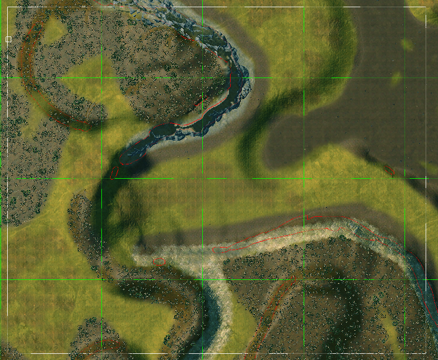
Second, Go-NoGo Regions. The game automatically guesses where a unit can walk and where it cannot, but you can change it with these regions.
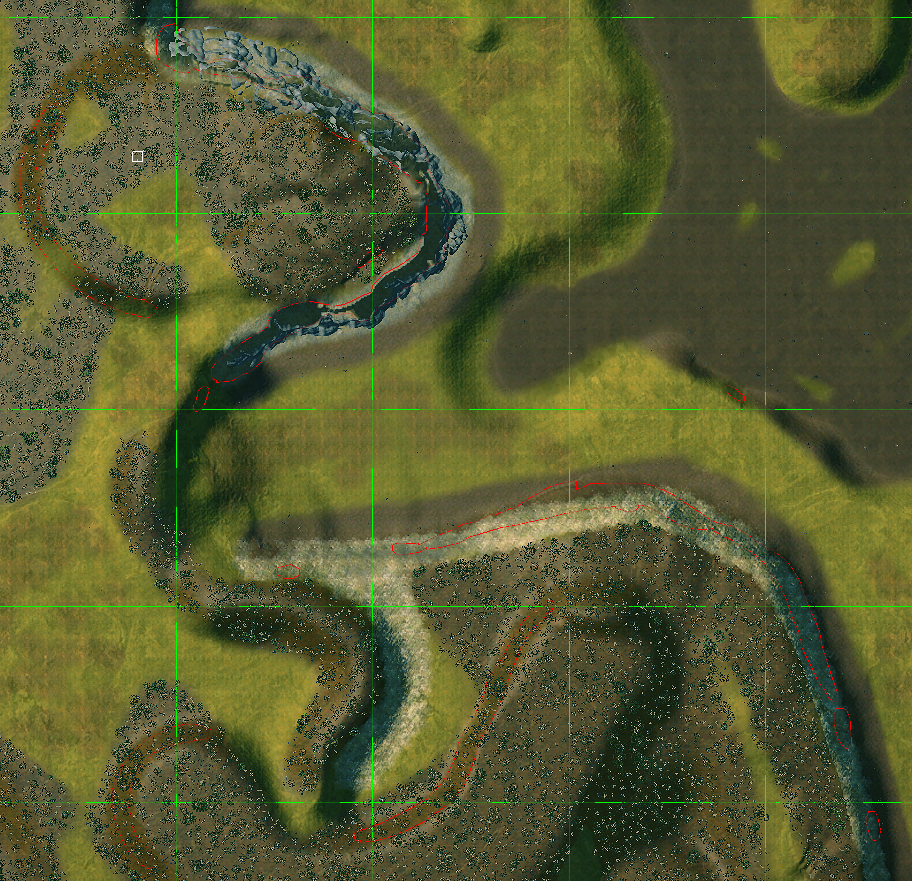
See those red lines? That's where the game thinks your units cannot walk (You can make them appear changing a setting in Terry). But those are imprecise, and wrong in some situations. To fix it, we have to manually set the zones we want to be walkable, and the ones that we don't want to be it. But I'm lazy, so I use the lazy method: put a Go Region around the entire Playable Area, then place the No-Go Regions manually. This is the result:
Now, the last thing, deployment zones. Just hit the Deployment Zone button, then draw one for the attacker, and one for the defender (Alliance ID, 0 is attacker, 1 defender). Like this.
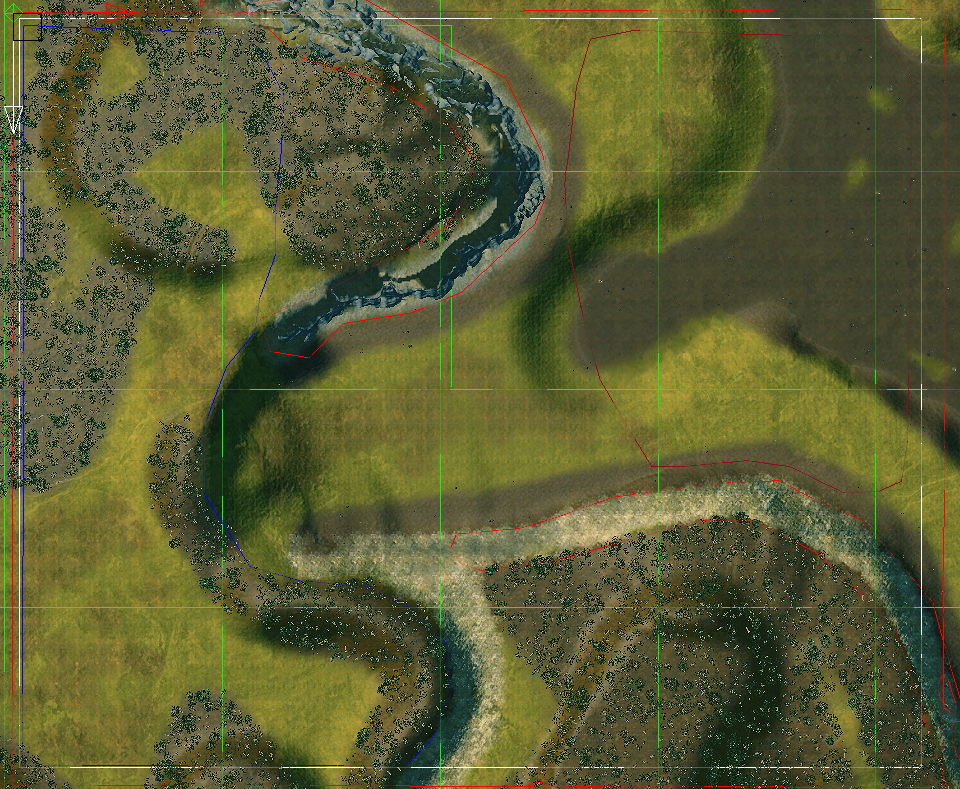
That's the basics. With that, you just have a working land battle map, but there are some extras you'll need to get the best of your map.
Love, Death & AI
First, we need to add AI hints. These are lines we draw in the map that tells the AI this place is good for defending, here you can deploy your units in a line, from here reinforcements will come,... Basically, it makes the AI *understand the map. There are multiple AI hints:
- Forest: It tells the AI where the forest is, so they can get there to get extra defense from proyectiles. This one is automatically generated around forest terrain.
- Defensive hill: It tells the AI about good places to defend. Just put it around the places you want the AI to defend.
- Default deployment line: It tells the AI where to deploy his units on a line. When using this, just draw a line with just two vertex. More than that breaks this one.
- Attacker/Defender deployment line: It tells the AI where the reinforcements will form a line after arriving to the map through the closest walkable border to this line. Only used in campaign. If you got a campaign map without these and reinforcements come it may crash, or you may have no reinforcements.
So for this example we are going to put deployment and defensive hill hints, so the AI knows how to deploy and how to defend the hill. To give more variety to your maps, I recommend you to put multiple deployment hints per deployment zone, so the AI deploy differently from time to time. Here it is a screenshot with the deployment hints done:
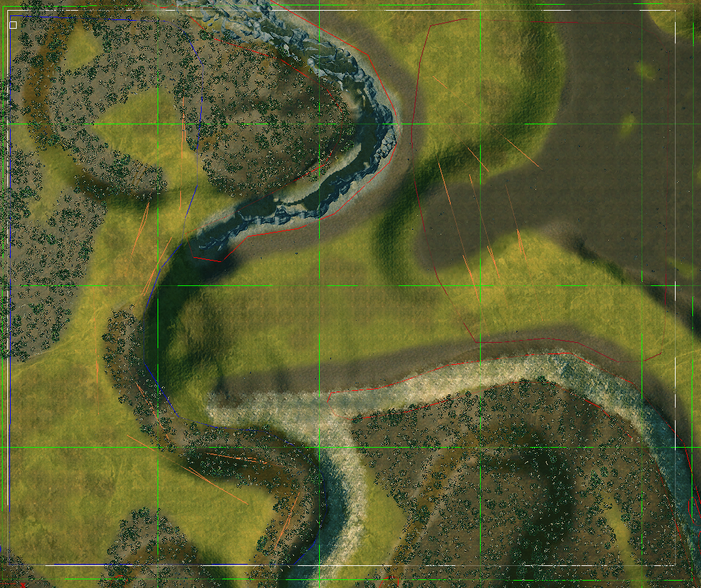
And here is an example of the deployment hill hint:
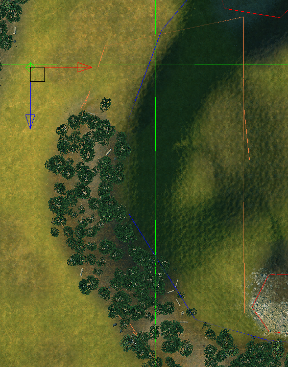
With that, you can test our map ingame. Just hit export, what until it finishes, start the game, enable your map's mod in the launcher, and... play the game. It should popup under Land Battles.
Siege Battle Maps
TBD
Battle Map Extras
In this section, you'll find some tutorials that don't fit with the flow of the prior. Also, enjoy a glossary!
Extra Tutorials
Glossary
Here it goes extra stuff that's good to know about Terry. So... here we go:
-
The stuff you put outside the map doesn't have his height relative to 0. Instead, their 0 is the height of the terrain in the place you put them. For example, put a building at 30 height. If the ground it's at 60 in that exact place, then once the map loads you'll find a floating building at 90 height. This can only be seen ingame, not in Terry.
-
Of the 8x8 green square map, the border row/columns are special. The game will autolevel any terrain from the middle of those squares to the border of the map to 0 height, but that it's not shown in Terry, only in-game. So, if you place stuff there, account for the height change once the game loads the map, because that part of the map acts like the outside of the map.
-
Vegetation on prefabs you put outside your map dissapears.
-
If your deployment zone goes outside your playable area, the game will expand the playable area to cover the full size of the deployment zone.
-
The priority of Go/No-Go Regions is:
Walkable Terrain>Automatic No-Go Region>Go Region>No Go Region. The thing most to the right will take priority over the rest. -
If you don't let any walkable connections with the map's border, the game will load your map as a fully unwalkable map, and it'll crash on loading/deploying.
Custom Vistas
By Maruka
Introduction
Have you always wanted to make your own custom vista in Terry? No? Then you have come to the wrong place! This guide will teach you how to make your own custom vista. Think of environments like creating a river, a coastline, adding a mountain range, etc.
This guide will teach you how to create your own custom vista. This isn't officially supported by CA, but it works very well. If you have any questions, it is best to ask them on the Map Makers Discord channel, which you can find here.
You don't need any additional programmes, you'll only need to make use of Terry and Bob.
Preparation
Open your file explorer and go to:
Total War WARHAMMER II\assembly_kit\raw_data\terrain\vistas\
and look for one of the vista's with a terry file. I'll be using lizardmen_02 as the basis of this guide.
Copy whichever map you chose and rename it to something else. I called mine lizardmen_04 because I'm original like that.
Go into that folder and rename the .terry and .layer file as well.
Open the terry file in a text editor. You'll see a section which still refers to the original vista, change that to your new name (in my case I changes lizardmen_02 to lizardmen_04 here).
<data terrain_setup="terrain/vistas/lizardmen_04/" world_width="0" global_lighting="" ambient_light_environments="" water_plane_material="materials/campaign_water_plane_default.xml.material"/>
Save the file.
Open the vista.xml and change the display_name, and any other changes you might want to make. This is only used for the display in Terry later.
You can also change the vista.png if you want, that's also only used in Terry.
Editing the Vista in Terry
Open Terry. Once opened, close the wizard popup.
Drag the .terry file into Terry. It'll now load the Vista. You can now make any changes you like, such as adding props, or changing the terrain.
Ocne you have finished with your changes, go to File -> Save As, and save your edited vista in its own folder (with the same name).
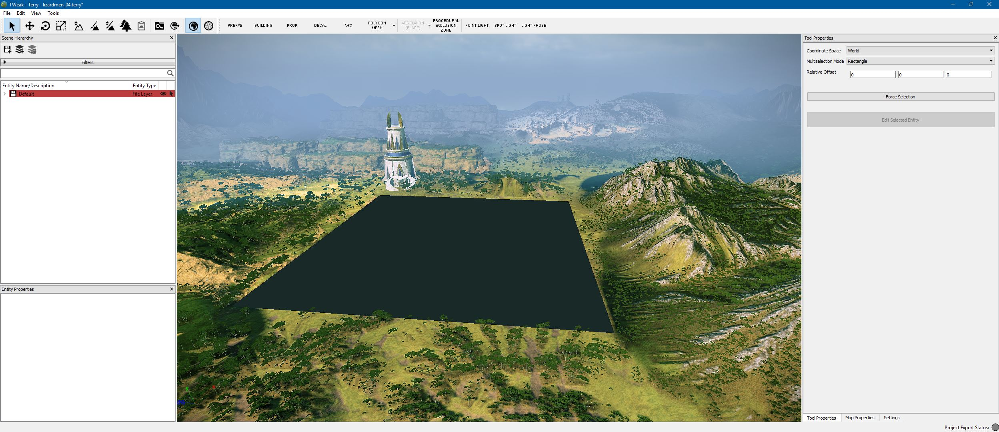
It is vital that you always do 'save as', don't use the normal save option. If you use the normal save Terry will crash. If you decide to make any further changes to your vista, just use 'save as' again and override your own vista. That works perfectly fine.
Once you're done editing you can close Terry.
Exporting the vista
Note: If you closed Terry and Steam shows it is stil running, you will need to open up your Task Manager to close it yourself. CRTL+ALT+DEL to pull up the manager, and scroll down to the Other Programs. There, you should find a program called TweaK. Right click -> End Task and now you should be able to continue with the guide.
Open Bob.
Select your vista map in the leftmost panel, as demonstrated in this lovely image:
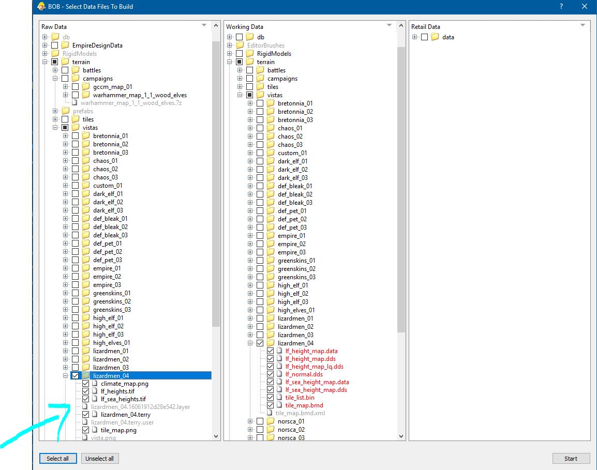
Click start.
Wait.
Click exit.
Congratulations, you're done! Next time you start up Terry you should see your new shiny vista.